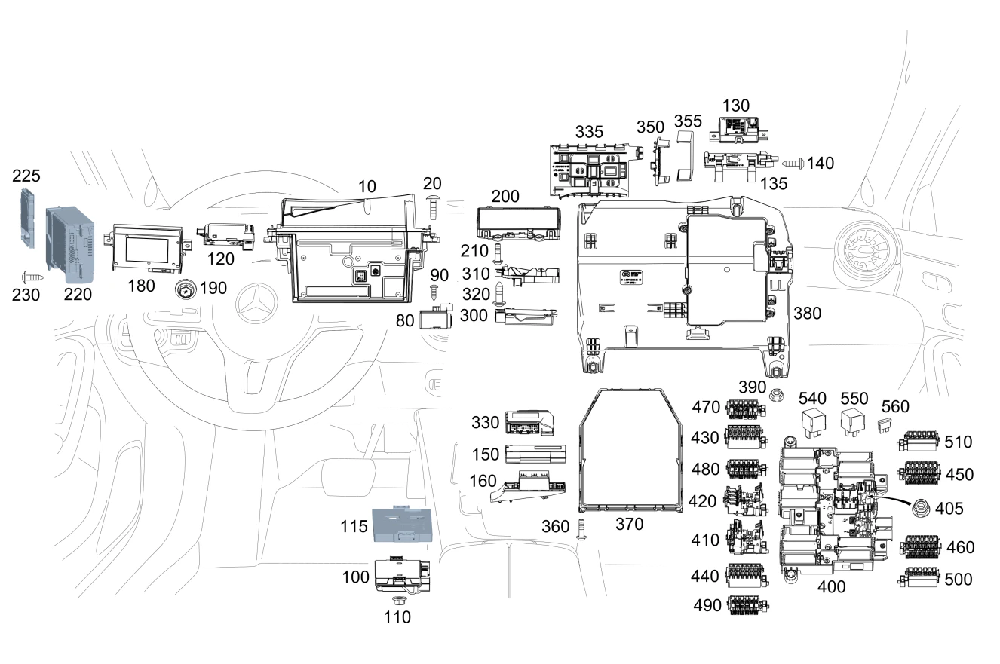

| № | Артикул | Название | Кол. | Примечание | Ограничение |
|---|---|---|---|---|---|
| 10 | A 177 900 90 03 | Блок управления | 1 | Проекционный дисплей Рулевое управление: Вправо [672] ДЕТАЛЬ ПОСЛЕ УСТАН.ПРОВЕРИТЬ НА АКТУАЛЬНОСТЬ "ПРОШИВНОГО" ПО | 463 |
| 10 | A 177 900 47 05 | Блок управления | 1 | Проекционный дисплей Рулевое управление: Вправо [672] ДЕТАЛЬ ПОСЛЕ УСТАН.ПРОВЕРИТЬ НА АКТУАЛЬНОСТЬ "ПРОШИВНОГО" ПО | 463 |
| 10 | A 177 900 33 02 | Блок управления | 1 | Проекционный дисплей Рулевое управление: Вправо [672] ДЕТАЛЬ ПОСЛЕ УСТАН.ПРОВЕРИТЬ НА АКТУАЛЬНОСТЬ "ПРОШИВНОГО" ПО | 800+050+463 |
| 10 | A 177 900 33 02 | Блок управления | 1 | Проекционный дисплей Рулевое управление: Вправо [672] ДЕТАЛЬ ПОСЛЕ УСТАН.ПРОВЕРИТЬ НА АКТУАЛЬНОСТЬ "ПРОШИВНОГО" ПО | 463 |
| 10 | A 177 900 18 08 | Блок управления | 1 | Проекционный дисплей Рулевое управление: Вправо [672] ДЕТАЛЬ ПОСЛЕ УСТАН.ПРОВЕРИТЬ НА АКТУАЛЬНОСТЬ "ПРОШИВНОГО" ПО | 463 |
| 10 | A 177 900 81 06 | Блок управления | 1 | Проекционный дисплей Рулевое управление: Вправо [672] ДЕТАЛЬ ПОСЛЕ УСТАН.ПРОВЕРИТЬ НА АКТУАЛЬНОСТЬ "ПРОШИВНОГО" ПО [697] ДЕТАЛЬ ПОСТАВЛЯЕТСЯ ТОЛЬКО/ИЛИ ТАКЖЕ КАК ЗАП.ЧАСТЬ | 801+051+463 |
| 10 | A 177 900 81 06 | Блок управления | 1 | Проекционный дисплей Рулевое управление: Вправо [672] ДЕТАЛЬ ПОСЛЕ УСТАН.ПРОВЕРИТЬ НА АКТУАЛЬНОСТЬ "ПРОШИВНОГО" ПО [697] ДЕТАЛЬ ПОСТАВЛЯЕТСЯ ТОЛЬКО/ИЛИ ТАКЖЕ КАК ЗАП.ЧАСТЬ | (801+051/802)+463 |
| 10 | A 177 900 81 06 | Блок управления | 1 | Проекционный дисплей Рулевое управление: Вправо [672] ДЕТАЛЬ ПОСЛЕ УСТАН.ПРОВЕРИТЬ НА АКТУАЛЬНОСТЬ "ПРОШИВНОГО" ПО [697] ДЕТАЛЬ ПОСТАВЛЯЕТСЯ ТОЛЬКО/ИЛИ ТАКЖЕ КАК ЗАП.ЧАСТЬ | 463 |
| 10 | A 177 900 89 03 | Блок управления | 1 | Проекционный дисплей Рулевое управление: Влево [672] ДЕТАЛЬ ПОСЛЕ УСТАН.ПРОВЕРИТЬ НА АКТУАЛЬНОСТЬ "ПРОШИВНОГО" ПО | 463 |
| 10 | A 177 900 46 05 | Блок управления | 1 | Проекционный дисплей Рулевое управление: Влево [672] ДЕТАЛЬ ПОСЛЕ УСТАН.ПРОВЕРИТЬ НА АКТУАЛЬНОСТЬ "ПРОШИВНОГО" ПО | 463 |
| 10 | A 177 900 32 02 | Блок управления | 1 | Проекционный дисплей Рулевое управление: Влево [672] ДЕТАЛЬ ПОСЛЕ УСТАН.ПРОВЕРИТЬ НА АКТУАЛЬНОСТЬ "ПРОШИВНОГО" ПО | 800+050+463 |
| 10 | A 177 900 32 02 | Блок управления | 1 | Проекционный дисплей Рулевое управление: Влево [672] ДЕТАЛЬ ПОСЛЕ УСТАН.ПРОВЕРИТЬ НА АКТУАЛЬНОСТЬ "ПРОШИВНОГО" ПО | 463 |
| 10 | A 177 900 17 08 | Блок управления | 1 | Проекционный дисплей Рулевое управление: Влево [672] ДЕТАЛЬ ПОСЛЕ УСТАН.ПРОВЕРИТЬ НА АКТУАЛЬНОСТЬ "ПРОШИВНОГО" ПО | 463 |
| 10 | A 177 900 80 06 | Блок управления | 1 | Проекционный дисплей Рулевое управление: Влево [672] ДЕТАЛЬ ПОСЛЕ УСТАН.ПРОВЕРИТЬ НА АКТУАЛЬНОСТЬ "ПРОШИВНОГО" ПО [697] ДЕТАЛЬ ПОСТАВЛЯЕТСЯ ТОЛЬКО/ИЛИ ТАКЖЕ КАК ЗАП.ЧАСТЬ | 801+051+463 |
| 10 | A 177 900 80 06 | Блок управления | 1 | Проекционный дисплей Рулевое управление: Влево [672] ДЕТАЛЬ ПОСЛЕ УСТАН.ПРОВЕРИТЬ НА АКТУАЛЬНОСТЬ "ПРОШИВНОГО" ПО [697] ДЕТАЛЬ ПОСТАВЛЯЕТСЯ ТОЛЬКО/ИЛИ ТАКЖЕ КАК ЗАП.ЧАСТЬ | (801+051/802)+463 |
| 10 | A 177 900 80 06 | Блок управления | 1 | Проекционный дисплей Рулевое управление: Влево [672] ДЕТАЛЬ ПОСЛЕ УСТАН.ПРОВЕРИТЬ НА АКТУАЛЬНОСТЬ "ПРОШИВНОГО" ПО [697] ДЕТАЛЬ ПОСТАВЛЯЕТСЯ ТОЛЬКО/ИЛИ ТАКЖЕ КАК ЗАП.ЧАСТЬ | 463 |
| 20 | A 002 984 29 29 | болт | 3 | Крепление дисплея; M5 X 18 MM | 463 |
| 80 | A 000 982 29 04 | Пиропредохранитель | 1 | B01/ME08/ME10 | |
| 80 | A 000 982 74 25 | Пиропредохранитель | 1 | B01/ME08/ME10 | |
| 80 | A 000 982 74 25 | Пиропредохранитель | 1 | B01/ME10 | |
| 90 | N 000000 008350 | FILLISTER HD SCREW | 2 | Пиропредохранитель; M6X20 | B01/ME08/ME10 |
| 90 | N 000000 008350 | FILLISTER HD SCREW | 2 | Пиропредохранитель; M6X20 | B01/ME08/ME10 |
| 90 | N 000000 008350 | FILLISTER HD SCREW | 2 | Пиропредохранитель; M6X20 | B01/ME10 |
| 100 | A 000 900 63 18 | Блок управления | 1 | Система PARKTRONIC [672] ДЕТАЛЬ ПОСЛЕ УСТАН.ПРОВЕРИТЬ НА АКТУАЛЬНОСТЬ "ПРОШИВНОГО" ПО [697] ДЕТАЛЬ ПОСТАВЛЯЕТСЯ ТОЛЬКО/ИЛИ ТАКЖЕ КАК ЗАП.ЧАСТЬ | 235 |
| 100 | A 000 900 64 18 | Блок управления | 1 | Система PARKTRONIC [672] ДЕТАЛЬ ПОСЛЕ УСТАН.ПРОВЕРИТЬ НА АКТУАЛЬНОСТЬ "ПРОШИВНОГО" ПО [697] ДЕТАЛЬ ПОСТАВЛЯЕТСЯ ТОЛЬКО/ИЛИ ТАКЖЕ КАК ЗАП.ЧАСТЬ | 235+501 |
| 100 | A 000 900 27 20 | Блок управления | 1 | Система PARKTRONIC [672] ДЕТАЛЬ ПОСЛЕ УСТАН.ПРОВЕРИТЬ НА АКТУАЛЬНОСТЬ "ПРОШИВНОГО" ПО [697] ДЕТАЛЬ ПОСТАВЛЯЕТСЯ ТОЛЬКО/ИЛИ ТАКЖЕ КАК ЗАП.ЧАСТЬ | 235 |
| 100 | A 000 900 63 18 | Блок управления | 1 | Система PARKTRONIC [672] ДЕТАЛЬ ПОСЛЕ УСТАН.ПРОВЕРИТЬ НА АКТУАЛЬНОСТЬ "ПРОШИВНОГО" ПО [697] ДЕТАЛЬ ПОСТАВЛЯЕТСЯ ТОЛЬКО/ИЛИ ТАКЖЕ КАК ЗАП.ЧАСТЬ | 235 |
| 100 | A 000 900 28 20 | Блок управления | 1 | Система PARKTRONIC [672] ДЕТАЛЬ ПОСЛЕ УСТАН.ПРОВЕРИТЬ НА АКТУАЛЬНОСТЬ "ПРОШИВНОГО" ПО [697] ДЕТАЛЬ ПОСТАВЛЯЕТСЯ ТОЛЬКО/ИЛИ ТАКЖЕ КАК ЗАП.ЧАСТЬ | 235+501 |
| 100 | A 000 900 64 18 | Блок управления | 1 | Система PARKTRONIC [672] ДЕТАЛЬ ПОСЛЕ УСТАН.ПРОВЕРИТЬ НА АКТУАЛЬНОСТЬ "ПРОШИВНОГО" ПО [697] ДЕТАЛЬ ПОСТАВЛЯЕТСЯ ТОЛЬКО/ИЛИ ТАКЖЕ КАК ЗАП.ЧАСТЬ | 235+501 |
| 100 | A 000 900 27 20 | Блок управления | 1 | Система PARKTRONIC [672] ДЕТАЛЬ ПОСЛЕ УСТАН.ПРОВЕРИТЬ НА АКТУАЛЬНОСТЬ "ПРОШИВНОГО" ПО [697] ДЕТАЛЬ ПОСТАВЛЯЕТСЯ ТОЛЬКО/ИЛИ ТАКЖЕ КАК ЗАП.ЧАСТЬ | 800+050+235 |
| 100 | A 000 900 27 20 | Блок управления | 1 | Система PARKTRONIC [672] ДЕТАЛЬ ПОСЛЕ УСТАН.ПРОВЕРИТЬ НА АКТУАЛЬНОСТЬ "ПРОШИВНОГО" ПО [697] ДЕТАЛЬ ПОСТАВЛЯЕТСЯ ТОЛЬКО/ИЛИ ТАКЖЕ КАК ЗАП.ЧАСТЬ | 235 |
| 100 | A 000 900 12 22 | Блок управления | 1 | Система PARKTRONIC [672] ДЕТАЛЬ ПОСЛЕ УСТАН.ПРОВЕРИТЬ НА АКТУАЛЬНОСТЬ "ПРОШИВНОГО" ПО [697] ДЕТАЛЬ ПОСТАВЛЯЕТСЯ ТОЛЬКО/ИЛИ ТАКЖЕ КАК ЗАП.ЧАСТЬ | 801+235 |
| 100 | A 000 900 12 22 | Блок управления | 1 | Система PARKTRONIC [672] ДЕТАЛЬ ПОСЛЕ УСТАН.ПРОВЕРИТЬ НА АКТУАЛЬНОСТЬ "ПРОШИВНОГО" ПО [697] ДЕТАЛЬ ПОСТАВЛЯЕТСЯ ТОЛЬКО/ИЛИ ТАКЖЕ КАК ЗАП.ЧАСТЬ | 235 |
| 100 | A 000 900 81 29 | Блок управления | 1 | Система PARKTRONIC [672] ДЕТАЛЬ ПОСЛЕ УСТАН.ПРОВЕРИТЬ НА АКТУАЛЬНОСТЬ "ПРОШИВНОГО" ПО | 801+051+235 |
| 100 | A 000 900 81 29 | Блок управления | 1 | Система PARKTRONIC [672] ДЕТАЛЬ ПОСЛЕ УСТАН.ПРОВЕРИТЬ НА АКТУАЛЬНОСТЬ "ПРОШИВНОГО" ПО | 235 |
| 100 | A 000 900 28 20 | Блок управления | 1 | Система PARKTRONIC [672] ДЕТАЛЬ ПОСЛЕ УСТАН.ПРОВЕРИТЬ НА АКТУАЛЬНОСТЬ "ПРОШИВНОГО" ПО [697] ДЕТАЛЬ ПОСТАВЛЯЕТСЯ ТОЛЬКО/ИЛИ ТАКЖЕ КАК ЗАП.ЧАСТЬ | 800+050+235+501 |
| 100 | A 000 900 28 20 | Блок управления | 1 | Система PARKTRONIC [672] ДЕТАЛЬ ПОСЛЕ УСТАН.ПРОВЕРИТЬ НА АКТУАЛЬНОСТЬ "ПРОШИВНОГО" ПО [697] ДЕТАЛЬ ПОСТАВЛЯЕТСЯ ТОЛЬКО/ИЛИ ТАКЖЕ КАК ЗАП.ЧАСТЬ | 235+501 |
| 100 | A 000 900 13 22 | Блок управления | 1 | Система PARKTRONIC [672] ДЕТАЛЬ ПОСЛЕ УСТАН.ПРОВЕРИТЬ НА АКТУАЛЬНОСТЬ "ПРОШИВНОГО" ПО | 801+235+501 |
| 100 | A 000 900 13 22 | Блок управления | 1 | Система PARKTRONIC [672] ДЕТАЛЬ ПОСЛЕ УСТАН.ПРОВЕРИТЬ НА АКТУАЛЬНОСТЬ "ПРОШИВНОГО" ПО | 235+501 |
| 100 | A 000 900 82 29 | Блок управления | 1 | Система PARKTRONIC [672] ДЕТАЛЬ ПОСЛЕ УСТАН.ПРОВЕРИТЬ НА АКТУАЛЬНОСТЬ "ПРОШИВНОГО" ПО [697] ДЕТАЛЬ ПОСТАВЛЯЕТСЯ ТОЛЬКО/ИЛИ ТАКЖЕ КАК ЗАП.ЧАСТЬ | 801+051+235+501 |
| 100 | A 000 900 82 29 | Блок управления | 1 | Система PARKTRONIC [672] ДЕТАЛЬ ПОСЛЕ УСТАН.ПРОВЕРИТЬ НА АКТУАЛЬНОСТЬ "ПРОШИВНОГО" ПО [697] ДЕТАЛЬ ПОСТАВЛЯЕТСЯ ТОЛЬКО/ИЛИ ТАКЖЕ КАК ЗАП.ЧАСТЬ | 235+501 |
| 100 | A 000 900 43 32 | Блок управления | 1 | Система PARKTRONIC [672] ДЕТАЛЬ ПОСЛЕ УСТАН.ПРОВЕРИТЬ НА АКТУАЛЬНОСТЬ "ПРОШИВНОГО" ПО [697] ДЕТАЛЬ ПОСТАВЛЯЕТСЯ ТОЛЬКО/ИЛИ ТАКЖЕ КАК ЗАП.ЧАСТЬ | 235+501+835 |
| 100 | A 000 900 42 32 | Блок управления | 1 | Система PARKTRONIC [672] ДЕТАЛЬ ПОСЛЕ УСТАН.ПРОВЕРИТЬ НА АКТУАЛЬНОСТЬ "ПРОШИВНОГО" ПО | 802+235 |
| 100 | A 000 900 44 34 | Блок управления | 1 | Система PARKTRONIC [672] ДЕТАЛЬ ПОСЛЕ УСТАН.ПРОВЕРИТЬ НА АКТУАЛЬНОСТЬ "ПРОШИВНОГО" ПО | 802+235 |
| 100 | A 000 900 44 34 | Блок управления | 1 | Система PARKTRONIC [672] ДЕТАЛЬ ПОСЛЕ УСТАН.ПРОВЕРИТЬ НА АКТУАЛЬНОСТЬ "ПРОШИВНОГО" ПО | 235 |
| 100 | A 000 900 26 40 | Блок управления | 1 | Система PARKTRONIC [672] ДЕТАЛЬ ПОСЛЕ УСТАН.ПРОВЕРИТЬ НА АКТУАЛЬНОСТЬ "ПРОШИВНОГО" ПО | 803+053+235 |
| 100 | A 000 900 26 40 | Блок управления | 1 | Система PARKTRONIC [672] ДЕТАЛЬ ПОСЛЕ УСТАН.ПРОВЕРИТЬ НА АКТУАЛЬНОСТЬ "ПРОШИВНОГО" ПО | 235 |
| 100 | A 000 900 43 32 | Блок управления | 1 | Система PARKTRONIC [672] ДЕТАЛЬ ПОСЛЕ УСТАН.ПРОВЕРИТЬ НА АКТУАЛЬНОСТЬ "ПРОШИВНОГО" ПО [697] ДЕТАЛЬ ПОСТАВЛЯЕТСЯ ТОЛЬКО/ИЛИ ТАКЖЕ КАК ЗАП.ЧАСТЬ | 802+235+501/802+235+501+835 |
| 100 | A 000 900 45 34 | Блок управления | 1 | Система PARKTRONIC [672] ДЕТАЛЬ ПОСЛЕ УСТАН.ПРОВЕРИТЬ НА АКТУАЛЬНОСТЬ "ПРОШИВНОГО" ПО [697] ДЕТАЛЬ ПОСТАВЛЯЕТСЯ ТОЛЬКО/ИЛИ ТАКЖЕ КАК ЗАП.ЧАСТЬ | 802+235+501/802+235+501+835 |
| 100 | A 000 900 45 34 | Блок управления | 1 | Система PARKTRONIC [672] ДЕТАЛЬ ПОСЛЕ УСТАН.ПРОВЕРИТЬ НА АКТУАЛЬНОСТЬ "ПРОШИВНОГО" ПО [697] ДЕТАЛЬ ПОСТАВЛЯЕТСЯ ТОЛЬКО/ИЛИ ТАКЖЕ КАК ЗАП.ЧАСТЬ | 235+501/235+501+835 |
| 100 | A 000 900 27 40 | Блок управления | 1 | Система PARKTRONIC [672] ДЕТАЛЬ ПОСЛЕ УСТАН.ПРОВЕРИТЬ НА АКТУАЛЬНОСТЬ "ПРОШИВНОГО" ПО [697] ДЕТАЛЬ ПОСТАВЛЯЕТСЯ ТОЛЬКО/ИЛИ ТАКЖЕ КАК ЗАП.ЧАСТЬ | 803+053+((235+501)/(235+501+835)) |
| 100 | A 000 900 27 40 | Блок управления | 1 | Система PARKTRONIC [672] ДЕТАЛЬ ПОСЛЕ УСТАН.ПРОВЕРИТЬ НА АКТУАЛЬНОСТЬ "ПРОШИВНОГО" ПО [697] ДЕТАЛЬ ПОСТАВЛЯЕТСЯ ТОЛЬКО/ИЛИ ТАКЖЕ КАК ЗАП.ЧАСТЬ | (235+501)/(235+501+835) |
| 100 | A 000 900 60 43 | Блок управления | 1 | Система PARKTRONIC [672] ДЕТАЛЬ ПОСЛЕ УСТАН.ПРОВЕРИТЬ НА АКТУАЛЬНОСТЬ "ПРОШИВНОГО" ПО | 804+235+501 |
| 100 | A 000 900 60 43 | Блок управления | 1 | Система PARKTRONIC [672] ДЕТАЛЬ ПОСЛЕ УСТАН.ПРОВЕРИТЬ НА АКТУАЛЬНОСТЬ "ПРОШИВНОГО" ПО | 804+(235+501/235+501+835) |
| 100 | A 000 900 07 46 | Блок управления | 1 | Система PARKTRONIC [672] ДЕТАЛЬ ПОСЛЕ УСТАН.ПРОВЕРИТЬ НА АКТУАЛЬНОСТЬ "ПРОШИВНОГО" ПО | 804+(235+501/235+501+835) |
| 100 | A 000 900 61 49 | Блок управления | 1 | Система PARKTRONIC [672] ДЕТАЛЬ ПОСЛЕ УСТАН.ПРОВЕРИТЬ НА АКТУАЛЬНОСТЬ "ПРОШИВНОГО" ПО | 804+(235+501/235+501+835) |
| 100 | A 000 900 61 49 | Блок управления | 1 | Система PARKTRONIC [672] ДЕТАЛЬ ПОСЛЕ УСТАН.ПРОВЕРИТЬ НА АКТУАЛЬНОСТЬ "ПРОШИВНОГО" ПО | 235+501/235+501+835 |
| 100 | A 000 900 23 47 | Блок управления | 1 | Система PARKTRONIC [672] ДЕТАЛЬ ПОСЛЕ УСТАН.ПРОВЕРИТЬ НА АКТУАЛЬНОСТЬ "ПРОШИВНОГО" ПО | 235+(501/501+835)+(804+054/805) |
| 100 | A 000 900 23 47 | Блок управления | 1 | Система PARKTRONIC [672] ДЕТАЛЬ ПОСЛЕ УСТАН.ПРОВЕРИТЬ НА АКТУАЛЬНОСТЬ "ПРОШИВНОГО" ПО | 235+(501/501+835) |
| 100 | A 000 900 27 51 | Блок управления | 1 | Система PARKTRONIC [672] ДЕТАЛЬ ПОСЛЕ УСТАН.ПРОВЕРИТЬ НА АКТУАЛЬНОСТЬ "ПРОШИВНОГО" ПО | 235+(501/501+835)+(805+055) |
| 100 | A 000 900 27 51 | Блок управления | 1 | Система PARKTRONIC [672] ДЕТАЛЬ ПОСЛЕ УСТАН.ПРОВЕРИТЬ НА АКТУАЛЬНОСТЬ "ПРОШИВНОГО" ПО | 235+(501/501+835) |
| 100 | A 000 900 92 53 | Блок управления | 1 | Система PARKTRONIC [672] ДЕТАЛЬ ПОСЛЕ УСТАН.ПРОВЕРИТЬ НА АКТУАЛЬНОСТЬ "ПРОШИВНОГО" ПО | 235+(501/501+835)+806 |
| 100 | A 000 900 92 53 | Блок управления | 1 | Система PARKTRONIC [672] ДЕТАЛЬ ПОСЛЕ УСТАН.ПРОВЕРИТЬ НА АКТУАЛЬНОСТЬ "ПРОШИВНОГО" ПО | 235+(501/501+835) |
| 100 | A 000 900 09 54 | Блок управления | 1 | Система PARKTRONIC [672] ДЕТАЛЬ ПОСЛЕ УСТАН.ПРОВЕРИТЬ НА АКТУАЛЬНОСТЬ "ПРОШИВНОГО" ПО | 235+(501/501+835) |
| 100 | A 000 900 28 17 | Блок управления | 1 | Система PARKTRONIC [672] ДЕТАЛЬ ПОСЛЕ УСТАН.ПРОВЕРИТЬ НА АКТУАЛЬНОСТЬ "ПРОШИВНОГО" ПО | 803+053+218+235 |
| 100 | A 000 900 14 33 | Блок управления | 1 | Система PARKTRONIC [672] ДЕТАЛЬ ПОСЛЕ УСТАН.ПРОВЕРИТЬ НА АКТУАЛЬНОСТЬ "ПРОШИВНОГО" ПО | 804+218+235 |
| 100 | A 000 900 59 43 | Блок управления | 1 | Система PARKTRONIC [672] ДЕТАЛЬ ПОСЛЕ УСТАН.ПРОВЕРИТЬ НА АКТУАЛЬНОСТЬ "ПРОШИВНОГО" ПО | 804+218+235 |
| 100 | A 000 900 05 46 | Блок управления | 1 | Система PARKTRONIC [672] ДЕТАЛЬ ПОСЛЕ УСТАН.ПРОВЕРИТЬ НА АКТУАЛЬНОСТЬ "ПРОШИВНОГО" ПО | 804+218+235 |
| 100 | A 000 900 06 46 | Блок управления | 1 | Система PARKTRONIC [672] ДЕТАЛЬ ПОСЛЕ УСТАН.ПРОВЕРИТЬ НА АКТУАЛЬНОСТЬ "ПРОШИВНОГО" ПО | 804+218+235 |
| 100 | A 000 900 06 46 | Блок управления | 1 | Система PARKTRONIC [672] ДЕТАЛЬ ПОСЛЕ УСТАН.ПРОВЕРИТЬ НА АКТУАЛЬНОСТЬ "ПРОШИВНОГО" ПО | 218+235 |
| 100 | A 000 900 22 47 | Блок управления | 1 | Система PARKTRONIC [672] ДЕТАЛЬ ПОСЛЕ УСТАН.ПРОВЕРИТЬ НА АКТУАЛЬНОСТЬ "ПРОШИВНОГО" ПО | 235+218+(804+054/805) |
| 100 | A 000 900 22 47 | Блок управления | 1 | Система PARKTRONIC [672] ДЕТАЛЬ ПОСЛЕ УСТАН.ПРОВЕРИТЬ НА АКТУАЛЬНОСТЬ "ПРОШИВНОГО" ПО | 235+218 |
| 100 | A 000 900 40 49 | Блок управления | 1 | Система PARKTRONIC [672] ДЕТАЛЬ ПОСЛЕ УСТАН.ПРОВЕРИТЬ НА АКТУАЛЬНОСТЬ "ПРОШИВНОГО" ПО | 235+218+(805+055) |
| 100 | A 000 900 40 49 | Блок управления | 1 | Система PARKTRONIC [672] ДЕТАЛЬ ПОСЛЕ УСТАН.ПРОВЕРИТЬ НА АКТУАЛЬНОСТЬ "ПРОШИВНОГО" ПО | 235+218 |
| 100 | A 000 900 83 53 | Блок управления | 1 | Система PARKTRONIC [672] ДЕТАЛЬ ПОСЛЕ УСТАН.ПРОВЕРИТЬ НА АКТУАЛЬНОСТЬ "ПРОШИВНОГО" ПО | 235+218+806 |
| 100 | A 000 900 83 53 | Блок управления | 1 | Система PARKTRONIC [672] ДЕТАЛЬ ПОСЛЕ УСТАН.ПРОВЕРИТЬ НА АКТУАЛЬНОСТЬ "ПРОШИВНОГО" ПО | 235+218 |
| 100 | A 000 900 08 54 | Блок управления | 1 | Система PARKTRONIC [672] ДЕТАЛЬ ПОСЛЕ УСТАН.ПРОВЕРИТЬ НА АКТУАЛЬНОСТЬ "ПРОШИВНОГО" ПО | 235+218 |
| 110 | N 000000 008302 | Шестигранная гайка | 2 | Крепление блоков управления; M5 | 235 |
| 110 | N 000000 008296 | ГАЙКА КОМБИНИРОВАННАЯ | 2 | Крепление блоков управления; M6 | ((501+235)/(218+235))+804 |
| 110 | N 000000 008296 | ГАЙКА КОМБИНИРОВАННАЯ | 2 | Крепление блоков управления; M6 | 501+235/218+235 |
| 115 | A 238 545 38 00 | Держатель | 1 | Крепление блоков управления | 218+235 |
| 120 | A 099 900 87 01 | Блок управления | 1 | Электрическая блокировка рулевого управления [429] ДЕТАЛЬ, СВЯЗАННАЯ С ПРОТИВОУГОННОЙ БЕЗОПАСНОСТЬЮ | |
| 120 | A 099 900 94 01 | Блок управления | 1 | Электрическая блокировка рулевого управления [429] ДЕТАЛЬ, СВЯЗАННАЯ С ПРОТИВОУГОННОЙ БЕЗОПАСНОСТЬЮ [697] ДЕТАЛЬ ПОСТАВЛЯЕТСЯ ТОЛЬКО/ИЛИ ТАКЖЕ КАК ЗАП.ЧАСТЬ | |
| 130 | A 177 900 51 04 | Блок управления | 1 | Светодиодная подсветка салона [672] ДЕТАЛЬ ПОСЛЕ УСТАН.ПРОВЕРИТЬ НА АКТУАЛЬНОСТЬ "ПРОШИВНОГО" ПО [697] ДЕТАЛЬ ПОСТАВЛЯЕТСЯ ТОЛЬКО/ИЛИ ТАКЖЕ КАК ЗАП.ЧАСТЬ | 877 |
| 130 | A 177 900 82 06 | Блок управления | 1 | Светодиодная подсветка салона [672] ДЕТАЛЬ ПОСЛЕ УСТАН.ПРОВЕРИТЬ НА АКТУАЛЬНОСТЬ "ПРОШИВНОГО" ПО [697] ДЕТАЛЬ ПОСТАВЛЯЕТСЯ ТОЛЬКО/ИЛИ ТАКЖЕ КАК ЗАП.ЧАСТЬ | 877 |
| 130 | A 177 900 26 10 | Блок управления | 1 | Светодиодная подсветка салона [672] ДЕТАЛЬ ПОСЛЕ УСТАН.ПРОВЕРИТЬ НА АКТУАЛЬНОСТЬ "ПРОШИВНОГО" ПО [697] ДЕТАЛЬ ПОСТАВЛЯЕТСЯ ТОЛЬКО/ИЛИ ТАКЖЕ КАК ЗАП.ЧАСТЬ | 877 |
| 130 | A 177 900 26 10 | Блок управления | 1 | Светодиодная подсветка салона [672] ДЕТАЛЬ ПОСЛЕ УСТАН.ПРОВЕРИТЬ НА АКТУАЛЬНОСТЬ "ПРОШИВНОГО" ПО [697] ДЕТАЛЬ ПОСТАВЛЯЕТСЯ ТОЛЬКО/ИЛИ ТАКЖЕ КАК ЗАП.ЧАСТЬ | 804+877 |
| 130 | A 177 900 26 10 | Блок управления | 1 | Светодиодная подсветка салона [672] ДЕТАЛЬ ПОСЛЕ УСТАН.ПРОВЕРИТЬ НА АКТУАЛЬНОСТЬ "ПРОШИВНОГО" ПО [697] ДЕТАЛЬ ПОСТАВЛЯЕТСЯ ТОЛЬКО/ИЛИ ТАКЖЕ КАК ЗАП.ЧАСТЬ | 877 |
| 130 | A 177 900 80 14 | Блок управления | 1 | Светодиодная подсветка салона [672] ДЕТАЛЬ ПОСЛЕ УСТАН.ПРОВЕРИТЬ НА АКТУАЛЬНОСТЬ "ПРОШИВНОГО" ПО | 877 |
| 135 | A 177 545 50 00 | Держатель | 1 | Блок управления Рулевое управление: Влево | 877 |
| 135 | A 177 545 57 00 | Держатель | 1 | Блок управления Рулевое управление: Вправо | 877 |
| 140 | N 000000 008345 | FILLISTER HD SCREW | 1 | Крепление держателя блока управления; 5X16 | 877 |
| 150 | A 177 900 25 05 | Блок управления | 1 | car2go [672] ДЕТАЛЬ ПОСЛЕ УСТАН.ПРОВЕРИТЬ НА АКТУАЛЬНОСТЬ "ПРОШИВНОГО" ПО | 2U0 |
| 160 | A 177 542 01 00 | Держатель | 1 | Блок управления | 2U0 |
| 180 | A 247 900 60 08 | Блок управления | 1 | Коммуникационный модуль [672] ДЕТАЛЬ ПОСЛЕ УСТАН.ПРОВЕРИТЬ НА АКТУАЛЬНОСТЬ "ПРОШИВНОГО" ПО [697] ДЕТАЛЬ ПОСТАВЛЯЕТСЯ ТОЛЬКО/ИЛИ ТАКЖЕ КАК ЗАП.ЧАСТЬ | 362 |
| 180 | A 247 900 18 09 | Блок управления | 1 | Коммуникационный модуль [672] ДЕТАЛЬ ПОСЛЕ УСТАН.ПРОВЕРИТЬ НА АКТУАЛЬНОСТЬ "ПРОШИВНОГО" ПО [697] ДЕТАЛЬ ПОСТАВЛЯЕТСЯ ТОЛЬКО/ИЛИ ТАКЖЕ КАК ЗАП.ЧАСТЬ | 362 |
| 180 | A 247 900 61 08 | Блок управления | 1 | Коммуникационный модуль [672] ДЕТАЛЬ ПОСЛЕ УСТАН.ПРОВЕРИТЬ НА АКТУАЛЬНОСТЬ "ПРОШИВНОГО" ПО [697] ДЕТАЛЬ ПОСТАВЛЯЕТСЯ ТОЛЬКО/ИЛИ ТАКЖЕ КАК ЗАП.ЧАСТЬ | 362+830 |
| 180 | A 247 900 19 09 | Блок управления | 1 | Коммуникационный модуль [672] ДЕТАЛЬ ПОСЛЕ УСТАН.ПРОВЕРИТЬ НА АКТУАЛЬНОСТЬ "ПРОШИВНОГО" ПО [697] ДЕТАЛЬ ПОСТАВЛЯЕТСЯ ТОЛЬКО/ИЛИ ТАКЖЕ КАК ЗАП.ЧАСТЬ | 362+830 |
| 180 | A 247 900 29 05 | Блок управления | 1 | Коммуникационный модуль [672] ДЕТАЛЬ ПОСЛЕ УСТАН.ПРОВЕРИТЬ НА АКТУАЛЬНОСТЬ "ПРОШИВНОГО" ПО | 362+1B1 |
| 180 | A 247 900 06 09 | Блок управления | 1 | Коммуникационный модуль [672] ДЕТАЛЬ ПОСЛЕ УСТАН.ПРОВЕРИТЬ НА АКТУАЛЬНОСТЬ "ПРОШИВНОГО" ПО | 362+1B1 |
| 180 | A 247 900 30 05 | Блок управления | 1 | Коммуникационный модуль [672] ДЕТАЛЬ ПОСЛЕ УСТАН.ПРОВЕРИТЬ НА АКТУАЛЬНОСТЬ "ПРОШИВНОГО" ПО | 362+498 |
| 180 | A 247 900 21 09 | Блок управления | 1 | Коммуникационный модуль [672] ДЕТАЛЬ ПОСЛЕ УСТАН.ПРОВЕРИТЬ НА АКТУАЛЬНОСТЬ "ПРОШИВНОГО" ПО [697] ДЕТАЛЬ ПОСТАВЛЯЕТСЯ ТОЛЬКО/ИЛИ ТАКЖЕ КАК ЗАП.ЧАСТЬ | 362+498 |
| 180 | A 247 900 31 05 | Блок управления | 1 | Коммуникационный модуль [672] ДЕТАЛЬ ПОСЛЕ УСТАН.ПРОВЕРИТЬ НА АКТУАЛЬНОСТЬ "ПРОШИВНОГО" ПО [697] ДЕТАЛЬ ПОСТАВЛЯЕТСЯ ТОЛЬКО/ИЛИ ТАКЖЕ КАК ЗАП.ЧАСТЬ | 362+835 |
| 180 | A 247 900 22 09 | Блок управления | 1 | Коммуникационный модуль [672] ДЕТАЛЬ ПОСЛЕ УСТАН.ПРОВЕРИТЬ НА АКТУАЛЬНОСТЬ "ПРОШИВНОГО" ПО [697] ДЕТАЛЬ ПОСТАВЛЯЕТСЯ ТОЛЬКО/ИЛИ ТАКЖЕ КАК ЗАП.ЧАСТЬ | 362+835 |
| 180 | A 247 900 63 08 | Блок управления | 1 | Коммуникационный модуль [672] ДЕТАЛЬ ПОСЛЕ УСТАН.ПРОВЕРИТЬ НА АКТУАЛЬНОСТЬ "ПРОШИВНОГО" ПО | 362+1B2 |
| 180 | A 247 900 23 09 | Блок управления | 1 | Коммуникационный модуль [672] ДЕТАЛЬ ПОСЛЕ УСТАН.ПРОВЕРИТЬ НА АКТУАЛЬНОСТЬ "ПРОШИВНОГО" ПО [697] ДЕТАЛЬ ПОСТАВЛЯЕТСЯ ТОЛЬКО/ИЛИ ТАКЖЕ КАК ЗАП.ЧАСТЬ | 362+1B2 |
| 180 | A 247 900 33 05 | Блок управления | 1 | Коммуникационный модуль [672] ДЕТАЛЬ ПОСЛЕ УСТАН.ПРОВЕРИТЬ НА АКТУАЛЬНОСТЬ "ПРОШИВНОГО" ПО | 362+1B7 |
| 180 | A 247 900 24 09 | Блок управления | 1 | Коммуникационный модуль [672] ДЕТАЛЬ ПОСЛЕ УСТАН.ПРОВЕРИТЬ НА АКТУАЛЬНОСТЬ "ПРОШИВНОГО" ПО [697] ДЕТАЛЬ ПОСТАВЛЯЕТСЯ ТОЛЬКО/ИЛИ ТАКЖЕ КАК ЗАП.ЧАСТЬ | 362+1B7 |
| 180 | A 247 900 18 09 | Блок управления | 1 | Коммуникационный модуль [672] ДЕТАЛЬ ПОСЛЕ УСТАН.ПРОВЕРИТЬ НА АКТУАЛЬНОСТЬ "ПРОШИВНОГО" ПО [697] ДЕТАЛЬ ПОСТАВЛЯЕТСЯ ТОЛЬКО/ИЛИ ТАКЖЕ КАК ЗАП.ЧАСТЬ | 362+1B3 |
| 180 | A 247 900 19 09 | Блок управления | 1 | Коммуникационный модуль [672] ДЕТАЛЬ ПОСЛЕ УСТАН.ПРОВЕРИТЬ НА АКТУАЛЬНОСТЬ "ПРОШИВНОГО" ПО [697] ДЕТАЛЬ ПОСТАВЛЯЕТСЯ ТОЛЬКО/ИЛИ ТАКЖЕ КАК ЗАП.ЧАСТЬ | 362+1B5 |
| 180 | A 247 900 06 09 | Блок управления | 1 | Коммуникационный модуль [672] ДЕТАЛЬ ПОСЛЕ УСТАН.ПРОВЕРИТЬ НА АКТУАЛЬНОСТЬ "ПРОШИВНОГО" ПО | 362+1B1 |
| 180 | A 247 900 21 09 | Блок управления | 1 | Коммуникационный модуль [672] ДЕТАЛЬ ПОСЛЕ УСТАН.ПРОВЕРИТЬ НА АКТУАЛЬНОСТЬ "ПРОШИВНОГО" ПО [697] ДЕТАЛЬ ПОСТАВЛЯЕТСЯ ТОЛЬКО/ИЛИ ТАКЖЕ КАК ЗАП.ЧАСТЬ | 362+2B0 |
| 180 | A 247 900 22 09 | Блок управления | 1 | Коммуникационный модуль [672] ДЕТАЛЬ ПОСЛЕ УСТАН.ПРОВЕРИТЬ НА АКТУАЛЬНОСТЬ "ПРОШИВНОГО" ПО [697] ДЕТАЛЬ ПОСТАВЛЯЕТСЯ ТОЛЬКО/ИЛИ ТАКЖЕ КАК ЗАП.ЧАСТЬ | 362+2B1 |
| 180 | A 247 900 23 09 | Блок управления | 1 | Коммуникационный модуль [672] ДЕТАЛЬ ПОСЛЕ УСТАН.ПРОВЕРИТЬ НА АКТУАЛЬНОСТЬ "ПРОШИВНОГО" ПО [697] ДЕТАЛЬ ПОСТАВЛЯЕТСЯ ТОЛЬКО/ИЛИ ТАКЖЕ КАК ЗАП.ЧАСТЬ | 362+1B2 |
| 180 | A 247 900 24 09 | Блок управления | 1 | Коммуникационный модуль [672] ДЕТАЛЬ ПОСЛЕ УСТАН.ПРОВЕРИТЬ НА АКТУАЛЬНОСТЬ "ПРОШИВНОГО" ПО [697] ДЕТАЛЬ ПОСТАВЛЯЕТСЯ ТОЛЬКО/ИЛИ ТАКЖЕ КАК ЗАП.ЧАСТЬ | 362+1B7 |
| 180 | A 247 900 43 06 | Блок управления | 1 | Коммуникационный модуль [672] ДЕТАЛЬ ПОСЛЕ УСТАН.ПРОВЕРИТЬ НА АКТУАЛЬНОСТЬ "ПРОШИВНОГО" ПО [697] ДЕТАЛЬ ПОСТАВЛЯЕТСЯ ТОЛЬКО/ИЛИ ТАКЖЕ КАК ЗАП.ЧАСТЬ | 362+1B9 |
| 180 | A 247 900 26 13 | Блок управления | 1 | Коммуникационный модуль [672] ДЕТАЛЬ ПОСЛЕ УСТАН.ПРОВЕРИТЬ НА АКТУАЛЬНОСТЬ "ПРОШИВНОГО" ПО [697] ДЕТАЛЬ ПОСТАВЛЯЕТСЯ ТОЛЬКО/ИЛИ ТАКЖЕ КАК ЗАП.ЧАСТЬ | 362+1B3 |
| 180 | A 238 900 77 04 | Блок управления | 1 | Коммуникационный модуль [672] ДЕТАЛЬ ПОСЛЕ УСТАН.ПРОВЕРИТЬ НА АКТУАЛЬНОСТЬ "ПРОШИВНОГО" ПО [697] ДЕТАЛЬ ПОСТАВЛЯЕТСЯ ТОЛЬКО/ИЛИ ТАКЖЕ КАК ЗАП.ЧАСТЬ | 362+1B3 |
| 180 | A 257 900 66 00 | Блок управления | 1 | Коммуникационный модуль [672] ДЕТАЛЬ ПОСЛЕ УСТАН.ПРОВЕРИТЬ НА АКТУАЛЬНОСТЬ "ПРОШИВНОГО" ПО [697] ДЕТАЛЬ ПОСТАВЛЯЕТСЯ ТОЛЬКО/ИЛИ ТАКЖЕ КАК ЗАП.ЧАСТЬ | 362+1B3 |
| 180 | A 247 900 46 11 | Блок управления | 1 | Коммуникационный модуль [672] ДЕТАЛЬ ПОСЛЕ УСТАН.ПРОВЕРИТЬ НА АКТУАЛЬНОСТЬ "ПРОШИВНОГО" ПО [697] ДЕТАЛЬ ПОСТАВЛЯЕТСЯ ТОЛЬКО/ИЛИ ТАКЖЕ КАК ЗАП.ЧАСТЬ | 362+1B3+801 |
| 180 | A 247 900 94 12 | Блок управления | 1 | Коммуникационный модуль [672] ДЕТАЛЬ ПОСЛЕ УСТАН.ПРОВЕРИТЬ НА АКТУАЛЬНОСТЬ "ПРОШИВНОГО" ПО [697] ДЕТАЛЬ ПОСТАВЛЯЕТСЯ ТОЛЬКО/ИЛИ ТАКЖЕ КАК ЗАП.ЧАСТЬ | 362+1B3+801 |
| 180 | A 247 900 94 12 | Блок управления | 1 | Коммуникационный модуль [672] ДЕТАЛЬ ПОСЛЕ УСТАН.ПРОВЕРИТЬ НА АКТУАЛЬНОСТЬ "ПРОШИВНОГО" ПО [697] ДЕТАЛЬ ПОСТАВЛЯЕТСЯ ТОЛЬКО/ИЛИ ТАКЖЕ КАК ЗАП.ЧАСТЬ | 362+1B3 |
| 180 | A 247 900 26 13 | Блок управления | 1 | Коммуникационный модуль [672] ДЕТАЛЬ ПОСЛЕ УСТАН.ПРОВЕРИТЬ НА АКТУАЛЬНОСТЬ "ПРОШИВНОГО" ПО [697] ДЕТАЛЬ ПОСТАВЛЯЕТСЯ ТОЛЬКО/ИЛИ ТАКЖЕ КАК ЗАП.ЧАСТЬ | 362+1B3 |
| 180 | A 238 900 77 04 | Блок управления | 1 | Коммуникационный модуль [672] ДЕТАЛЬ ПОСЛЕ УСТАН.ПРОВЕРИТЬ НА АКТУАЛЬНОСТЬ "ПРОШИВНОГО" ПО [697] ДЕТАЛЬ ПОСТАВЛЯЕТСЯ ТОЛЬКО/ИЛИ ТАКЖЕ КАК ЗАП.ЧАСТЬ | 362+1B3 |
| 180 | A 257 900 66 00 | Блок управления | 1 | Коммуникационный модуль [672] ДЕТАЛЬ ПОСЛЕ УСТАН.ПРОВЕРИТЬ НА АКТУАЛЬНОСТЬ "ПРОШИВНОГО" ПО [697] ДЕТАЛЬ ПОСТАВЛЯЕТСЯ ТОЛЬКО/ИЛИ ТАКЖЕ КАК ЗАП.ЧАСТЬ | 362+1B3 |
| 180 | A 247 900 26 13 | Блок управления | 1 | Коммуникационный модуль [672] ДЕТАЛЬ ПОСЛЕ УСТАН.ПРОВЕРИТЬ НА АКТУАЛЬНОСТЬ "ПРОШИВНОГО" ПО [697] ДЕТАЛЬ ПОСТАВЛЯЕТСЯ ТОЛЬКО/ИЛИ ТАКЖЕ КАК ЗАП.ЧАСТЬ | 362+1B3+6S8 |
| 180 | A 238 900 86 01 | Блок управления | 1 | Коммуникационный модуль [672] ДЕТАЛЬ ПОСЛЕ УСТАН.ПРОВЕРИТЬ НА АКТУАЛЬНОСТЬ "ПРОШИВНОГО" ПО [697] ДЕТАЛЬ ПОСТАВЛЯЕТСЯ ТОЛЬКО/ИЛИ ТАКЖЕ КАК ЗАП.ЧАСТЬ | 362+1B3+6S8 |
| 180 | A 238 900 77 04 | Блок управления | 1 | Коммуникационный модуль [672] ДЕТАЛЬ ПОСЛЕ УСТАН.ПРОВЕРИТЬ НА АКТУАЛЬНОСТЬ "ПРОШИВНОГО" ПО [697] ДЕТАЛЬ ПОСТАВЛЯЕТСЯ ТОЛЬКО/ИЛИ ТАКЖЕ КАК ЗАП.ЧАСТЬ | 362+1B3+6S8 |
| 180 | A 257 900 66 00 | Блок управления | 1 | Коммуникационный модуль [672] ДЕТАЛЬ ПОСЛЕ УСТАН.ПРОВЕРИТЬ НА АКТУАЛЬНОСТЬ "ПРОШИВНОГО" ПО [697] ДЕТАЛЬ ПОСТАВЛЯЕТСЯ ТОЛЬКО/ИЛИ ТАКЖЕ КАК ЗАП.ЧАСТЬ | 362+1B3+6S8 |
| 180 | A 247 900 44 15 | Блок управления | 1 | Коммуникационный модуль [672] ДЕТАЛЬ ПОСЛЕ УСТАН.ПРОВЕРИТЬ НА АКТУАЛЬНОСТЬ "ПРОШИВНОГО" ПО | 362+1B3+6S8 |
| 180 | A 247 900 26 13 | Блок управления | 1 | Коммуникационный модуль [672] ДЕТАЛЬ ПОСЛЕ УСТАН.ПРОВЕРИТЬ НА АКТУАЛЬНОСТЬ "ПРОШИВНОГО" ПО [697] ДЕТАЛЬ ПОСТАВЛЯЕТСЯ ТОЛЬКО/ИЛИ ТАКЖЕ КАК ЗАП.ЧАСТЬ | 362+1B3+6S8 |
| 180 | A 238 900 77 04 | Блок управления | 1 | Коммуникационный модуль [672] ДЕТАЛЬ ПОСЛЕ УСТАН.ПРОВЕРИТЬ НА АКТУАЛЬНОСТЬ "ПРОШИВНОГО" ПО [697] ДЕТАЛЬ ПОСТАВЛЯЕТСЯ ТОЛЬКО/ИЛИ ТАКЖЕ КАК ЗАП.ЧАСТЬ | 362+1B3+6S8 |
| 180 | A 257 900 66 00 | Блок управления | 1 | Коммуникационный модуль [672] ДЕТАЛЬ ПОСЛЕ УСТАН.ПРОВЕРИТЬ НА АКТУАЛЬНОСТЬ "ПРОШИВНОГО" ПО [697] ДЕТАЛЬ ПОСТАВЛЯЕТСЯ ТОЛЬКО/ИЛИ ТАКЖЕ КАК ЗАП.ЧАСТЬ | 362+1B3+6S8 |
| 180 | A 238 900 89 01 | Блок управления | 1 | Коммуникационный модуль [672] ДЕТАЛЬ ПОСЛЕ УСТАН.ПРОВЕРИТЬ НА АКТУАЛЬНОСТЬ "ПРОШИВНОГО" ПО | 362+1B5 |
| 180 | A 257 900 52 00 | Блок управления | 1 | Коммуникационный модуль [672] ДЕТАЛЬ ПОСЛЕ УСТАН.ПРОВЕРИТЬ НА АКТУАЛЬНОСТЬ "ПРОШИВНОГО" ПО [697] ДЕТАЛЬ ПОСТАВЛЯЕТСЯ ТОЛЬКО/ИЛИ ТАКЖЕ КАК ЗАП.ЧАСТЬ | 362+1B5 |
| 180 | A 247 900 47 11 | Блок управления | 1 | Коммуникационный модуль [672] ДЕТАЛЬ ПОСЛЕ УСТАН.ПРОВЕРИТЬ НА АКТУАЛЬНОСТЬ "ПРОШИВНОГО" ПО [697] ДЕТАЛЬ ПОСТАВЛЯЕТСЯ ТОЛЬКО/ИЛИ ТАКЖЕ КАК ЗАП.ЧАСТЬ | 362+1B5+801 |
| 180 | A 247 900 95 12 | Блок управления | 1 | Коммуникационный модуль [672] ДЕТАЛЬ ПОСЛЕ УСТАН.ПРОВЕРИТЬ НА АКТУАЛЬНОСТЬ "ПРОШИВНОГО" ПО [697] ДЕТАЛЬ ПОСТАВЛЯЕТСЯ ТОЛЬКО/ИЛИ ТАКЖЕ КАК ЗАП.ЧАСТЬ | 362+1B5+801 |
| 180 | A 247 900 95 12 | Блок управления | 1 | Коммуникационный модуль [672] ДЕТАЛЬ ПОСЛЕ УСТАН.ПРОВЕРИТЬ НА АКТУАЛЬНОСТЬ "ПРОШИВНОГО" ПО [697] ДЕТАЛЬ ПОСТАВЛЯЕТСЯ ТОЛЬКО/ИЛИ ТАКЖЕ КАК ЗАП.ЧАСТЬ | 362+1B5 |
| 180 | A 247 900 27 13 | Блок управления | 1 | Коммуникационный модуль [672] ДЕТАЛЬ ПОСЛЕ УСТАН.ПРОВЕРИТЬ НА АКТУАЛЬНОСТЬ "ПРОШИВНОГО" ПО [697] ДЕТАЛЬ ПОСТАВЛЯЕТСЯ ТОЛЬКО/ИЛИ ТАКЖЕ КАК ЗАП.ЧАСТЬ | 362+1B5 |
| 180 | A 167 900 72 22 | Блок управления | 1 | Коммуникационный модуль [672] ДЕТАЛЬ ПОСЛЕ УСТАН.ПРОВЕРИТЬ НА АКТУАЛЬНОСТЬ "ПРОШИВНОГО" ПО | 362+1B5+6S8 |
| 180 | A 247 900 06 09 | Блок управления | 1 | Коммуникационный модуль [672] ДЕТАЛЬ ПОСЛЕ УСТАН.ПРОВЕРИТЬ НА АКТУАЛЬНОСТЬ "ПРОШИВНОГО" ПО | 362+1B1+801 |
| 180 | A 247 900 19 13 | Блок управления | 1 | Коммуникационный модуль [672] ДЕТАЛЬ ПОСЛЕ УСТАН.ПРОВЕРИТЬ НА АКТУАЛЬНОСТЬ "ПРОШИВНОГО" ПО [697] ДЕТАЛЬ ПОСТАВЛЯЕТСЯ ТОЛЬКО/ИЛИ ТАКЖЕ КАК ЗАП.ЧАСТЬ | 362+1B1+801 |
| 180 | A 247 900 19 13 | Блок управления | 1 | Коммуникационный модуль [672] ДЕТАЛЬ ПОСЛЕ УСТАН.ПРОВЕРИТЬ НА АКТУАЛЬНОСТЬ "ПРОШИВНОГО" ПО [697] ДЕТАЛЬ ПОСТАВЛЯЕТСЯ ТОЛЬКО/ИЛИ ТАКЖЕ КАК ЗАП.ЧАСТЬ | 362+1B1 |
| 180 | A 238 900 88 01 | Блок управления | 1 | Коммуникационный модуль [672] ДЕТАЛЬ ПОСЛЕ УСТАН.ПРОВЕРИТЬ НА АКТУАЛЬНОСТЬ "ПРОШИВНОГО" ПО | 362+1B1 |
| 180 | A 247 900 51 11 | Блок управления | 1 | Коммуникационный модуль [672] ДЕТАЛЬ ПОСЛЕ УСТАН.ПРОВЕРИТЬ НА АКТУАЛЬНОСТЬ "ПРОШИВНОГО" ПО | 362+2B0+801 |
| 180 | A 247 900 97 12 | Блок управления | 1 | Коммуникационный модуль [672] ДЕТАЛЬ ПОСЛЕ УСТАН.ПРОВЕРИТЬ НА АКТУАЛЬНОСТЬ "ПРОШИВНОГО" ПО | 362+2B0+801 |
| 180 | A 247 900 97 12 | Блок управления | 1 | Коммуникационный модуль [672] ДЕТАЛЬ ПОСЛЕ УСТАН.ПРОВЕРИТЬ НА АКТУАЛЬНОСТЬ "ПРОШИВНОГО" ПО | 362+2B0 |
| 180 | A 247 900 30 13 | Блок управления | 1 | Коммуникационный модуль [672] ДЕТАЛЬ ПОСЛЕ УСТАН.ПРОВЕРИТЬ НА АКТУАЛЬНОСТЬ "ПРОШИВНОГО" ПО [697] ДЕТАЛЬ ПОСТАВЛЯЕТСЯ ТОЛЬКО/ИЛИ ТАКЖЕ КАК ЗАП.ЧАСТЬ | 362+2B0 |
| 180 | A 238 900 92 01 | Блок управления | 1 | Коммуникационный модуль [672] ДЕТАЛЬ ПОСЛЕ УСТАН.ПРОВЕРИТЬ НА АКТУАЛЬНОСТЬ "ПРОШИВНОГО" ПО | 362+2B0 |
| 180 | A 238 900 65 03 | Блок управления | 1 | Коммуникационный модуль [672] ДЕТАЛЬ ПОСЛЕ УСТАН.ПРОВЕРИТЬ НА АКТУАЛЬНОСТЬ "ПРОШИВНОГО" ПО | 362+2B0 |
| 180 | A 247 900 52 11 | Блок управления | 1 | Коммуникационный модуль [672] ДЕТАЛЬ ПОСЛЕ УСТАН.ПРОВЕРИТЬ НА АКТУАЛЬНОСТЬ "ПРОШИВНОГО" ПО | 362+2B1+801 |
| 180 | A 247 900 22 09 | Блок управления | 1 | Коммуникационный модуль [672] ДЕТАЛЬ ПОСЛЕ УСТАН.ПРОВЕРИТЬ НА АКТУАЛЬНОСТЬ "ПРОШИВНОГО" ПО [697] ДЕТАЛЬ ПОСТАВЛЯЕТСЯ ТОЛЬКО/ИЛИ ТАКЖЕ КАК ЗАП.ЧАСТЬ | 362+2B1 |
| 180 | A 247 900 31 13 | Блок управления | 1 | Коммуникационный модуль [672] ДЕТАЛЬ ПОСЛЕ УСТАН.ПРОВЕРИТЬ НА АКТУАЛЬНОСТЬ "ПРОШИВНОГО" ПО [697] ДЕТАЛЬ ПОСТАВЛЯЕТСЯ ТОЛЬКО/ИЛИ ТАКЖЕ КАК ЗАП.ЧАСТЬ | 362+2B1 |
| 180 | A 238 900 92 01 | Блок управления | 1 | Коммуникационный модуль [672] ДЕТАЛЬ ПОСЛЕ УСТАН.ПРОВЕРИТЬ НА АКТУАЛЬНОСТЬ "ПРОШИВНОГО" ПО | 362+2B1 |
| 180 | A 238 900 65 03 | Блок управления | 1 | Коммуникационный модуль [672] ДЕТАЛЬ ПОСЛЕ УСТАН.ПРОВЕРИТЬ НА АКТУАЛЬНОСТЬ "ПРОШИВНОГО" ПО | 362+2B1 |
| 180 | A 247 900 53 11 | Блок управления | 1 | Коммуникационный модуль [672] ДЕТАЛЬ ПОСЛЕ УСТАН.ПРОВЕРИТЬ НА АКТУАЛЬНОСТЬ "ПРОШИВНОГО" ПО | 362+1B2+801 |
| 180 | A 247 900 99 12 | Блок управления | 1 | Коммуникационный модуль [672] ДЕТАЛЬ ПОСЛЕ УСТАН.ПРОВЕРИТЬ НА АКТУАЛЬНОСТЬ "ПРОШИВНОГО" ПО | 362+1B2+801 |
| 180 | A 247 900 99 12 | Блок управления | 1 | Коммуникационный модуль [672] ДЕТАЛЬ ПОСЛЕ УСТАН.ПРОВЕРИТЬ НА АКТУАЛЬНОСТЬ "ПРОШИВНОГО" ПО | 362+1B2 |
| 180 | A 247 900 32 13 | Блок управления | 1 | Коммуникационный модуль [672] ДЕТАЛЬ ПОСЛЕ УСТАН.ПРОВЕРИТЬ НА АКТУАЛЬНОСТЬ "ПРОШИВНОГО" ПО [697] ДЕТАЛЬ ПОСТАВЛЯЕТСЯ ТОЛЬКО/ИЛИ ТАКЖЕ КАК ЗАП.ЧАСТЬ | 362+1B2 |
| 180 | A 238 900 95 01 | Блок управления | 1 | Коммуникационный модуль [672] ДЕТАЛЬ ПОСЛЕ УСТАН.ПРОВЕРИТЬ НА АКТУАЛЬНОСТЬ "ПРОШИВНОГО" ПО | 362+1B2 |
| 180 | A 257 900 66 00 | Блок управления | 1 | Коммуникационный модуль [672] ДЕТАЛЬ ПОСЛЕ УСТАН.ПРОВЕРИТЬ НА АКТУАЛЬНОСТЬ "ПРОШИВНОГО" ПО [697] ДЕТАЛЬ ПОСТАВЛЯЕТСЯ ТОЛЬКО/ИЛИ ТАКЖЕ КАК ЗАП.ЧАСТЬ | 362+1B7 |
| 180 | A 238 900 77 04 | Блок управления | 1 | Коммуникационный модуль [672] ДЕТАЛЬ ПОСЛЕ УСТАН.ПРОВЕРИТЬ НА АКТУАЛЬНОСТЬ "ПРОШИВНОГО" ПО [697] ДЕТАЛЬ ПОСТАВЛЯЕТСЯ ТОЛЬКО/ИЛИ ТАКЖЕ КАК ЗАП.ЧАСТЬ | 362+1B7 |
| 180 | A 247 900 54 11 | Блок управления | 1 | Коммуникационный модуль [672] ДЕТАЛЬ ПОСЛЕ УСТАН.ПРОВЕРИТЬ НА АКТУАЛЬНОСТЬ "ПРОШИВНОГО" ПО | 362+1B7+801 |
| 180 | A 247 900 00 13 | Блок управления | 1 | Коммуникационный модуль [672] ДЕТАЛЬ ПОСЛЕ УСТАН.ПРОВЕРИТЬ НА АКТУАЛЬНОСТЬ "ПРОШИВНОГО" ПО | 362+1B7+801 |
| 180 | A 247 900 00 13 | Блок управления | 1 | Коммуникационный модуль [672] ДЕТАЛЬ ПОСЛЕ УСТАН.ПРОВЕРИТЬ НА АКТУАЛЬНОСТЬ "ПРОШИВНОГО" ПО | 362+1B7 |
| 180 | A 247 900 33 13 | Блок управления | 1 | Коммуникационный модуль [672] ДЕТАЛЬ ПОСЛЕ УСТАН.ПРОВЕРИТЬ НА АКТУАЛЬНОСТЬ "ПРОШИВНОГО" ПО [697] ДЕТАЛЬ ПОСТАВЛЯЕТСЯ ТОЛЬКО/ИЛИ ТАКЖЕ КАК ЗАП.ЧАСТЬ | 362+1B7 |
| 180 | A 247 900 43 06 | Блок управления | 1 | Коммуникационный модуль [672] ДЕТАЛЬ ПОСЛЕ УСТАН.ПРОВЕРИТЬ НА АКТУАЛЬНОСТЬ "ПРОШИВНОГО" ПО [697] ДЕТАЛЬ ПОСТАВЛЯЕТСЯ ТОЛЬКО/ИЛИ ТАКЖЕ КАК ЗАП.ЧАСТЬ | 362+1B9+801 |
| 180 | A 247 900 43 06 | Блок управления | 1 | Коммуникационный модуль [672] ДЕТАЛЬ ПОСЛЕ УСТАН.ПРОВЕРИТЬ НА АКТУАЛЬНОСТЬ "ПРОШИВНОГО" ПО [697] ДЕТАЛЬ ПОСТАВЛЯЕТСЯ ТОЛЬКО/ИЛИ ТАКЖЕ КАК ЗАП.ЧАСТЬ | 362+1B9 |
| 180 | A 247 900 46 15 | Блок управления | 1 | Коммуникационный модуль [672] ДЕТАЛЬ ПОСЛЕ УСТАН.ПРОВЕРИТЬ НА АКТУАЛЬНОСТЬ "ПРОШИВНОГО" ПО | 362+1B9 |
| 180 | A 238 900 94 01 | Блок управления | 1 | Коммуникационный модуль [672] ДЕТАЛЬ ПОСЛЕ УСТАН.ПРОВЕРИТЬ НА АКТУАЛЬНОСТЬ "ПРОШИВНОГО" ПО [697] ДЕТАЛЬ ПОСТАВЛЯЕТСЯ ТОЛЬКО/ИЛИ ТАКЖЕ КАК ЗАП.ЧАСТЬ | 362+1B9 |
| 180 | A 247 900 33 13 | Блок управления | 1 | Коммуникационный модуль [672] ДЕТАЛЬ ПОСЛЕ УСТАН.ПРОВЕРИТЬ НА АКТУАЛЬНОСТЬ "ПРОШИВНОГО" ПО [697] ДЕТАЛЬ ПОСТАВЛЯЕТСЯ ТОЛЬКО/ИЛИ ТАКЖЕ КАК ЗАП.ЧАСТЬ | 362+2B2 |
| 180 | A 238 900 22 03 | Блок управления | 1 | Коммуникационный модуль [672] ДЕТАЛЬ ПОСЛЕ УСТАН.ПРОВЕРИТЬ НА АКТУАЛЬНОСТЬ "ПРОШИВНОГО" ПО | 362+2B2 |
| 180 | A 247 900 22 16 | Блок управления | 1 | Коммуникационный модуль [672] ДЕТАЛЬ ПОСЛЕ УСТАН.ПРОВЕРИТЬ НА АКТУАЛЬНОСТЬ "ПРОШИВНОГО" ПО [402] БОЛЬШЕ НЕ ПОСТАВЛЯЕТСЯ | 362+077 |
| 180 | A 238 900 05 06 | Блок управления | 1 | Коммуникационный модуль [672] ДЕТАЛЬ ПОСЛЕ УСТАН.ПРОВЕРИТЬ НА АКТУАЛЬНОСТЬ "ПРОШИВНОГО" ПО | 362+1B3+803+053 |
| 180 | A 238 900 05 06 | Блок управления | 1 | Коммуникационный модуль [672] ДЕТАЛЬ ПОСЛЕ УСТАН.ПРОВЕРИТЬ НА АКТУАЛЬНОСТЬ "ПРОШИВНОГО" ПО | 362+1B3 |
| 180 | A 238 900 09 06 | Блок управления | 1 | Коммуникационный модуль [672] ДЕТАЛЬ ПОСЛЕ УСТАН.ПРОВЕРИТЬ НА АКТУАЛЬНОСТЬ "ПРОШИВНОГО" ПО [697] ДЕТАЛЬ ПОСТАВЛЯЕТСЯ ТОЛЬКО/ИЛИ ТАКЖЕ КАК ЗАП.ЧАСТЬ | 362+1B5+803+053 |
| 180 | A 238 900 09 06 | Блок управления | 1 | Коммуникационный модуль [672] ДЕТАЛЬ ПОСЛЕ УСТАН.ПРОВЕРИТЬ НА АКТУАЛЬНОСТЬ "ПРОШИВНОГО" ПО [697] ДЕТАЛЬ ПОСТАВЛЯЕТСЯ ТОЛЬКО/ИЛИ ТАКЖЕ КАК ЗАП.ЧАСТЬ | 362+1B5 |
| 180 | A 238 900 27 05 | Блок управления | 1 | Коммуникационный модуль [672] ДЕТАЛЬ ПОСЛЕ УСТАН.ПРОВЕРИТЬ НА АКТУАЛЬНОСТЬ "ПРОШИВНОГО" ПО | 362+1B1+803+053 |
| 180 | A 238 900 08 06 | Блок управления | 1 | Коммуникационный модуль [672] ДЕТАЛЬ ПОСЛЕ УСТАН.ПРОВЕРИТЬ НА АКТУАЛЬНОСТЬ "ПРОШИВНОГО" ПО | 362+1B1+803+053 |
| 180 | A 238 900 08 06 | Блок управления | 1 | Коммуникационный модуль [672] ДЕТАЛЬ ПОСЛЕ УСТАН.ПРОВЕРИТЬ НА АКТУАЛЬНОСТЬ "ПРОШИВНОГО" ПО | 362+1B1 |
| 180 | A 238 900 31 05 | Блок управления | 1 | Коммуникационный модуль [672] ДЕТАЛЬ ПОСЛЕ УСТАН.ПРОВЕРИТЬ НА АКТУАЛЬНОСТЬ "ПРОШИВНОГО" ПО | 362+2B0+803+053 |
| 180 | A 238 900 12 06 | Блок управления | 1 | Коммуникационный модуль [672] ДЕТАЛЬ ПОСЛЕ УСТАН.ПРОВЕРИТЬ НА АКТУАЛЬНОСТЬ "ПРОШИВНОГО" ПО | 362+2B0+803+053 |
| 180 | A 238 900 12 06 | Блок управления | 1 | Коммуникационный модуль [672] ДЕТАЛЬ ПОСЛЕ УСТАН.ПРОВЕРИТЬ НА АКТУАЛЬНОСТЬ "ПРОШИВНОГО" ПО | 362+2B0 |
| 180 | A 238 900 31 05 | Блок управления | 1 | Коммуникационный модуль [672] ДЕТАЛЬ ПОСЛЕ УСТАН.ПРОВЕРИТЬ НА АКТУАЛЬНОСТЬ "ПРОШИВНОГО" ПО | 362+2B1+803+053 |
| 180 | A 238 900 12 06 | Блок управления | 1 | Коммуникационный модуль [672] ДЕТАЛЬ ПОСЛЕ УСТАН.ПРОВЕРИТЬ НА АКТУАЛЬНОСТЬ "ПРОШИВНОГО" ПО | 362+2B1+803+053 |
| 180 | A 238 900 12 06 | Блок управления | 1 | Коммуникационный модуль [672] ДЕТАЛЬ ПОСЛЕ УСТАН.ПРОВЕРИТЬ НА АКТУАЛЬНОСТЬ "ПРОШИВНОГО" ПО | 362+2B1 |
| 180 | A 238 900 33 05 | Блок управления | 1 | Коммуникационный модуль [672] ДЕТАЛЬ ПОСЛЕ УСТАН.ПРОВЕРИТЬ НА АКТУАЛЬНОСТЬ "ПРОШИВНОГО" ПО | 362+1B2+803+053 |
| 180 | A 238 900 14 06 | Блок управления | 1 | Коммуникационный модуль [672] ДЕТАЛЬ ПОСЛЕ УСТАН.ПРОВЕРИТЬ НА АКТУАЛЬНОСТЬ "ПРОШИВНОГО" ПО | 362+1B2+803+053 |
| 180 | A 238 900 14 06 | Блок управления | 1 | Коммуникационный модуль [672] ДЕТАЛЬ ПОСЛЕ УСТАН.ПРОВЕРИТЬ НА АКТУАЛЬНОСТЬ "ПРОШИВНОГО" ПО | 362+1B2 |
| 180 | A 238 900 32 05 | Блок управления | 1 | Коммуникационный модуль [672] ДЕТАЛЬ ПОСЛЕ УСТАН.ПРОВЕРИТЬ НА АКТУАЛЬНОСТЬ "ПРОШИВНОГО" ПО | 362+1B9+803+053 |
| 180 | A 238 900 13 06 | Блок управления | 1 | Коммуникационный модуль [672] ДЕТАЛЬ ПОСЛЕ УСТАН.ПРОВЕРИТЬ НА АКТУАЛЬНОСТЬ "ПРОШИВНОГО" ПО | 362+1B9+803+053 |
| 180 | A 238 900 13 06 | Блок управления | 1 | Коммуникационный модуль [672] ДЕТАЛЬ ПОСЛЕ УСТАН.ПРОВЕРИТЬ НА АКТУАЛЬНОСТЬ "ПРОШИВНОГО" ПО | 362+1B9 |
| 180 | A 238 900 05 06 | Блок управления | 1 | Коммуникационный модуль [672] ДЕТАЛЬ ПОСЛЕ УСТАН.ПРОВЕРИТЬ НА АКТУАЛЬНОСТЬ "ПРОШИВНОГО" ПО | 362+1B7+803+053 |
| 180 | A 238 900 05 06 | Блок управления | 1 | Коммуникационный модуль [672] ДЕТАЛЬ ПОСЛЕ УСТАН.ПРОВЕРИТЬ НА АКТУАЛЬНОСТЬ "ПРОШИВНОГО" ПО | 362+1B7 |
| 180 | A 238 900 05 06 | Блок управления | 1 | Коммуникационный модуль [672] ДЕТАЛЬ ПОСЛЕ УСТАН.ПРОВЕРИТЬ НА АКТУАЛЬНОСТЬ "ПРОШИВНОГО" ПО | 362+1B3+804 |
| 180 | A 238 900 07 05 | Блок управления | 1 | Коммуникационный модуль [672] ДЕТАЛЬ ПОСЛЕ УСТАН.ПРОВЕРИТЬ НА АКТУАЛЬНОСТЬ "ПРОШИВНОГО" ПО | 362+1B3+804 |
| 180 | A 238 900 07 05 | Блок управления | 1 | Коммуникационный модуль [672] ДЕТАЛЬ ПОСЛЕ УСТАН.ПРОВЕРИТЬ НА АКТУАЛЬНОСТЬ "ПРОШИВНОГО" ПО | 362+1B3 |
| 180 | A 238 900 72 06 | Блок управления | 1 | Коммуникационный модуль [672] ДЕТАЛЬ ПОСЛЕ УСТАН.ПРОВЕРИТЬ НА АКТУАЛЬНОСТЬ "ПРОШИВНОГО" ПО | 362+1B3 |
| 180 | A 238 900 10 05 | Блок управления | 1 | Коммуникационный модуль [672] ДЕТАЛЬ ПОСЛЕ УСТАН.ПРОВЕРИТЬ НА АКТУАЛЬНОСТЬ "ПРОШИВНОГО" ПО | 362+1B5 |
| 180 | A 238 900 09 06 | Блок управления | 1 | Коммуникационный модуль [672] ДЕТАЛЬ ПОСЛЕ УСТАН.ПРОВЕРИТЬ НА АКТУАЛЬНОСТЬ "ПРОШИВНОГО" ПО [697] ДЕТАЛЬ ПОСТАВЛЯЕТСЯ ТОЛЬКО/ИЛИ ТАКЖЕ КАК ЗАП.ЧАСТЬ | 362+1B5 |
| 180 | A 238 900 09 06 | Блок управления | 1 | Коммуникационный модуль [672] ДЕТАЛЬ ПОСЛЕ УСТАН.ПРОВЕРИТЬ НА АКТУАЛЬНОСТЬ "ПРОШИВНОГО" ПО [697] ДЕТАЛЬ ПОСТАВЛЯЕТСЯ ТОЛЬКО/ИЛИ ТАКЖЕ КАК ЗАП.ЧАСТЬ | 362+1B5+804 |
| 180 | A 238 900 10 05 | Блок управления | 1 | Коммуникационный модуль [672] ДЕТАЛЬ ПОСЛЕ УСТАН.ПРОВЕРИТЬ НА АКТУАЛЬНОСТЬ "ПРОШИВНОГО" ПО | 362+1B5+804 |
| 180 | A 238 900 10 05 | Блок управления | 1 | Коммуникационный модуль [672] ДЕТАЛЬ ПОСЛЕ УСТАН.ПРОВЕРИТЬ НА АКТУАЛЬНОСТЬ "ПРОШИВНОГО" ПО | 362+1B5 |
| 180 | A 238 900 75 06 | Блок управления | 1 | Коммуникационный модуль [672] ДЕТАЛЬ ПОСЛЕ УСТАН.ПРОВЕРИТЬ НА АКТУАЛЬНОСТЬ "ПРОШИВНОГО" ПО | 362+1B5 |
| 180 | A 238 900 86 06 | Блок управления | 1 | Коммуникационный модуль [672] ДЕТАЛЬ ПОСЛЕ УСТАН.ПРОВЕРИТЬ НА АКТУАЛЬНОСТЬ "ПРОШИВНОГО" ПО | 362+1B5 |
| 180 | A 238 900 27 05 | Блок управления | 1 | Коммуникационный модуль [672] ДЕТАЛЬ ПОСЛЕ УСТАН.ПРОВЕРИТЬ НА АКТУАЛЬНОСТЬ "ПРОШИВНОГО" ПО | 362+1B1+804 |
| 180 | A 238 900 08 06 | Блок управления | 1 | Коммуникационный модуль [672] ДЕТАЛЬ ПОСЛЕ УСТАН.ПРОВЕРИТЬ НА АКТУАЛЬНОСТЬ "ПРОШИВНОГО" ПО | 362+1B1+804 |
| 180 | A 238 900 31 05 | Блок управления | 1 | Коммуникационный модуль [672] ДЕТАЛЬ ПОСЛЕ УСТАН.ПРОВЕРИТЬ НА АКТУАЛЬНОСТЬ "ПРОШИВНОГО" ПО | 362+2B0+804 |
| 180 | A 238 900 12 06 | Блок управления | 1 | Коммуникационный модуль [672] ДЕТАЛЬ ПОСЛЕ УСТАН.ПРОВЕРИТЬ НА АКТУАЛЬНОСТЬ "ПРОШИВНОГО" ПО | 362+2B0+804 |
| 180 | A 238 900 13 05 | Блок управления | 1 | Коммуникационный модуль [672] ДЕТАЛЬ ПОСЛЕ УСТАН.ПРОВЕРИТЬ НА АКТУАЛЬНОСТЬ "ПРОШИВНОГО" ПО | 362+2B0+804 |
| 180 | A 238 900 13 05 | Блок управления | 1 | Коммуникационный модуль [672] ДЕТАЛЬ ПОСЛЕ УСТАН.ПРОВЕРИТЬ НА АКТУАЛЬНОСТЬ "ПРОШИВНОГО" ПО | 362+2B0 |
| 180 | A 238 900 78 06 | Блок управления | 1 | Коммуникационный модуль [672] ДЕТАЛЬ ПОСЛЕ УСТАН.ПРОВЕРИТЬ НА АКТУАЛЬНОСТЬ "ПРОШИВНОГО" ПО | 362+2B0 |
| 180 | A 238 900 31 05 | Блок управления | 1 | Коммуникационный модуль [672] ДЕТАЛЬ ПОСЛЕ УСТАН.ПРОВЕРИТЬ НА АКТУАЛЬНОСТЬ "ПРОШИВНОГО" ПО | 362+2B1+804 |
| 180 | A 238 900 12 06 | Блок управления | 1 | Коммуникационный модуль [672] ДЕТАЛЬ ПОСЛЕ УСТАН.ПРОВЕРИТЬ НА АКТУАЛЬНОСТЬ "ПРОШИВНОГО" ПО | 362+2B1+804 |
| 180 | A 238 900 13 05 | Блок управления | 1 | Коммуникационный модуль [672] ДЕТАЛЬ ПОСЛЕ УСТАН.ПРОВЕРИТЬ НА АКТУАЛЬНОСТЬ "ПРОШИВНОГО" ПО | 362+2B1+804 |
| 180 | A 238 900 13 05 | Блок управления | 1 | Коммуникационный модуль [672] ДЕТАЛЬ ПОСЛЕ УСТАН.ПРОВЕРИТЬ НА АКТУАЛЬНОСТЬ "ПРОШИВНОГО" ПО | 362+2B1 |
| 180 | A 238 900 78 06 | Блок управления | 1 | Коммуникационный модуль [672] ДЕТАЛЬ ПОСЛЕ УСТАН.ПРОВЕРИТЬ НА АКТУАЛЬНОСТЬ "ПРОШИВНОГО" ПО | 362+2B1 |
| 180 | A 238 900 33 05 | Блок управления | 1 | Коммуникационный модуль [672] ДЕТАЛЬ ПОСЛЕ УСТАН.ПРОВЕРИТЬ НА АКТУАЛЬНОСТЬ "ПРОШИВНОГО" ПО | 362+1B2+804 |
| 180 | A 238 900 14 06 | Блок управления | 1 | Коммуникационный модуль [672] ДЕТАЛЬ ПОСЛЕ УСТАН.ПРОВЕРИТЬ НА АКТУАЛЬНОСТЬ "ПРОШИВНОГО" ПО | 362+1B2+804 |
| 180 | A 238 900 15 05 | Блок управления | 1 | Коммуникационный модуль [672] ДЕТАЛЬ ПОСЛЕ УСТАН.ПРОВЕРИТЬ НА АКТУАЛЬНОСТЬ "ПРОШИВНОГО" ПО | 362+1B2+804 |
| 180 | A 238 900 15 05 | Блок управления | 1 | Коммуникационный модуль [672] ДЕТАЛЬ ПОСЛЕ УСТАН.ПРОВЕРИТЬ НА АКТУАЛЬНОСТЬ "ПРОШИВНОГО" ПО | 362+1B2 |
| 180 | A 238 900 80 06 | Блок управления | 1 | Коммуникационный модуль [672] ДЕТАЛЬ ПОСЛЕ УСТАН.ПРОВЕРИТЬ НА АКТУАЛЬНОСТЬ "ПРОШИВНОГО" ПО | 362+1B2 |
| 180 | A 238 900 14 05 | Блок управления | 1 | Коммуникационный модуль [672] ДЕТАЛЬ ПОСЛЕ УСТАН.ПРОВЕРИТЬ НА АКТУАЛЬНОСТЬ "ПРОШИВНОГО" ПО | 362+1B9 |
| 180 | A 238 900 13 06 | Блок управления | 1 | Коммуникационный модуль [672] ДЕТАЛЬ ПОСЛЕ УСТАН.ПРОВЕРИТЬ НА АКТУАЛЬНОСТЬ "ПРОШИВНОГО" ПО | 362+1B9 |
| 180 | A 238 900 32 05 | Блок управления | 1 | Коммуникационный модуль [672] ДЕТАЛЬ ПОСЛЕ УСТАН.ПРОВЕРИТЬ НА АКТУАЛЬНОСТЬ "ПРОШИВНОГО" ПО | 362+1B9+804 |
| 180 | A 238 900 13 06 | Блок управления | 1 | Коммуникационный модуль [672] ДЕТАЛЬ ПОСЛЕ УСТАН.ПРОВЕРИТЬ НА АКТУАЛЬНОСТЬ "ПРОШИВНОГО" ПО | 362+1B9+804 |
| 180 | A 238 900 14 05 | Блок управления | 1 | Коммуникационный модуль [672] ДЕТАЛЬ ПОСЛЕ УСТАН.ПРОВЕРИТЬ НА АКТУАЛЬНОСТЬ "ПРОШИВНОГО" ПО | 362+1B9+804 |
| 180 | A 238 900 14 05 | Блок управления | 1 | Коммуникационный модуль [672] ДЕТАЛЬ ПОСЛЕ УСТАН.ПРОВЕРИТЬ НА АКТУАЛЬНОСТЬ "ПРОШИВНОГО" ПО | 362+1B9 |
| 180 | A 238 900 79 06 | Блок управления | 1 | Коммуникационный модуль [672] ДЕТАЛЬ ПОСЛЕ УСТАН.ПРОВЕРИТЬ НА АКТУАЛЬНОСТЬ "ПРОШИВНОГО" ПО | 362+1B9 |
| 180 | A 238 900 05 06 | Блок управления | 1 | Коммуникационный модуль [672] ДЕТАЛЬ ПОСЛЕ УСТАН.ПРОВЕРИТЬ НА АКТУАЛЬНОСТЬ "ПРОШИВНОГО" ПО | 362+1B7+804 |
| 180 | A 238 900 07 05 | Блок управления | 1 | Коммуникационный модуль [672] ДЕТАЛЬ ПОСЛЕ УСТАН.ПРОВЕРИТЬ НА АКТУАЛЬНОСТЬ "ПРОШИВНОГО" ПО | 362+1B7+804 |
| 180 | A 238 900 07 05 | Блок управления | 1 | Коммуникационный модуль [672] ДЕТАЛЬ ПОСЛЕ УСТАН.ПРОВЕРИТЬ НА АКТУАЛЬНОСТЬ "ПРОШИВНОГО" ПО | 362+1B7 |
| 180 | A 238 900 72 06 | Блок управления | 1 | Коммуникационный модуль [672] ДЕТАЛЬ ПОСЛЕ УСТАН.ПРОВЕРИТЬ НА АКТУАЛЬНОСТЬ "ПРОШИВНОГО" ПО | 362+1B7 |
| 190 | A 001 990 21 11 | Саморез с 6-гр. головкой | 2 | Крепление блока управления; M5X15 | 362 |
| 190 | A 000 990 67 28 | Винт шестигр. с фланцем | 2 | Крепление блока управления; M5X17 | 362 |
| 200 | A 177 900 81 03 | Блок управления | 1 | Обмен данными при зарядке [672] ДЕТАЛЬ ПОСЛЕ УСТАН.ПРОВЕРИТЬ НА АКТУАЛЬНОСТЬ "ПРОШИВНОГО" ПО | 897 |
| 200 | A 167 900 83 09 | Блок управления | 1 | Обмен данными при зарядке [672] ДЕТАЛЬ ПОСЛЕ УСТАН.ПРОВЕРИТЬ НА АКТУАЛЬНОСТЬ "ПРОШИВНОГО" ПО [697] ДЕТАЛЬ ПОСТАВЛЯЕТСЯ ТОЛЬКО/ИЛИ ТАКЖЕ КАК ЗАП.ЧАСТЬ | 897 |
| 200 | A 177 900 82 03 | Блок управления | 1 | Обмен данными при зарядке [672] ДЕТАЛЬ ПОСЛЕ УСТАН.ПРОВЕРИТЬ НА АКТУАЛЬНОСТЬ "ПРОШИВНОГО" ПО | 899 |
| 200 | A 167 900 84 09 | Блок управления | 1 | Обмен данными при зарядке [672] ДЕТАЛЬ ПОСЛЕ УСТАН.ПРОВЕРИТЬ НА АКТУАЛЬНОСТЬ "ПРОШИВНОГО" ПО [697] ДЕТАЛЬ ПОСТАВЛЯЕТСЯ ТОЛЬКО/ИЛИ ТАКЖЕ КАК ЗАП.ЧАСТЬ | 899 |
| 200 | A 177 900 71 04 | Блок управления | 1 | Обмен данными при зарядке [672] ДЕТАЛЬ ПОСЛЕ УСТАН.ПРОВЕРИТЬ НА АКТУАЛЬНОСТЬ "ПРОШИВНОГО" ПО | (801+051/802)+897/(801+051/802)+897+029 |
| 200 | A 177 900 59 08 | Блок управления | 1 | Обмен данными при зарядке [672] ДЕТАЛЬ ПОСЛЕ УСТАН.ПРОВЕРИТЬ НА АКТУАЛЬНОСТЬ "ПРОШИВНОГО" ПО | (801+051/802)+897/(801+051/802)+897+029 |
| 200 | A 177 900 09 09 | Блок управления | 1 | Обмен данными при зарядке [672] ДЕТАЛЬ ПОСЛЕ УСТАН.ПРОВЕРИТЬ НА АКТУАЛЬНОСТЬ "ПРОШИВНОГО" ПО [697] ДЕТАЛЬ ПОСТАВЛЯЕТСЯ ТОЛЬКО/ИЛИ ТАКЖЕ КАК ЗАП.ЧАСТЬ | (801+051/802)+897/(801+051/802)+897+029 |
| 200 | A 177 900 09 09 | Блок управления | 1 | Обмен данными при зарядке [672] ДЕТАЛЬ ПОСЛЕ УСТАН.ПРОВЕРИТЬ НА АКТУАЛЬНОСТЬ "ПРОШИВНОГО" ПО [697] ДЕТАЛЬ ПОСТАВЛЯЕТСЯ ТОЛЬКО/ИЛИ ТАКЖЕ КАК ЗАП.ЧАСТЬ | 897 |
| 200 | A 177 900 17 10 | Блок управления | 1 | Обмен данными при зарядке [672] ДЕТАЛЬ ПОСЛЕ УСТАН.ПРОВЕРИТЬ НА АКТУАЛЬНОСТЬ "ПРОШИВНОГО" ПО [697] ДЕТАЛЬ ПОСТАВЛЯЕТСЯ ТОЛЬКО/ИЛИ ТАКЖЕ КАК ЗАП.ЧАСТЬ | 897 |
| 200 | A 177 900 37 09 | Блок управления | 1 | Обмен данными при зарядке [672] ДЕТАЛЬ ПОСЛЕ УСТАН.ПРОВЕРИТЬ НА АКТУАЛЬНОСТЬ "ПРОШИВНОГО" ПО [697] ДЕТАЛЬ ПОСТАВЛЯЕТСЯ ТОЛЬКО/ИЛИ ТАКЖЕ КАК ЗАП.ЧАСТЬ | 897 |
| 200 | A 177 900 67 15 | Блок управления | 1 | Обмен данными при зарядке [672] ДЕТАЛЬ ПОСЛЕ УСТАН.ПРОВЕРИТЬ НА АКТУАЛЬНОСТЬ "ПРОШИВНОГО" ПО | 897 |
| 200 | A 177 900 72 04 | Блок управления | 1 | Обмен данными при зарядке [672] ДЕТАЛЬ ПОСЛЕ УСТАН.ПРОВЕРИТЬ НА АКТУАЛЬНОСТЬ "ПРОШИВНОГО" ПО | (801+051/802)+899/(801+051/802)+899+029 |
| 200 | A 177 900 60 08 | Блок управления | 1 | Обмен данными при зарядке [672] ДЕТАЛЬ ПОСЛЕ УСТАН.ПРОВЕРИТЬ НА АКТУАЛЬНОСТЬ "ПРОШИВНОГО" ПО | (801+051/802)+899/(801+051/802)+899+029 |
| 200 | A 177 900 10 09 | Блок управления | 1 | Обмен данными при зарядке [672] ДЕТАЛЬ ПОСЛЕ УСТАН.ПРОВЕРИТЬ НА АКТУАЛЬНОСТЬ "ПРОШИВНОГО" ПО [697] ДЕТАЛЬ ПОСТАВЛЯЕТСЯ ТОЛЬКО/ИЛИ ТАКЖЕ КАК ЗАП.ЧАСТЬ | (801+051/802)+899/(801+051/802)+899+029 |
| 200 | A 177 900 10 09 | Блок управления | 1 | Обмен данными при зарядке [672] ДЕТАЛЬ ПОСЛЕ УСТАН.ПРОВЕРИТЬ НА АКТУАЛЬНОСТЬ "ПРОШИВНОГО" ПО [697] ДЕТАЛЬ ПОСТАВЛЯЕТСЯ ТОЛЬКО/ИЛИ ТАКЖЕ КАК ЗАП.ЧАСТЬ | 899 |
| 200 | A 177 900 18 10 | Блок управления | 1 | Обмен данными при зарядке [672] ДЕТАЛЬ ПОСЛЕ УСТАН.ПРОВЕРИТЬ НА АКТУАЛЬНОСТЬ "ПРОШИВНОГО" ПО | 899 |
| 200 | A 177 900 38 09 | Блок управления | 1 | Обмен данными при зарядке [672] ДЕТАЛЬ ПОСЛЕ УСТАН.ПРОВЕРИТЬ НА АКТУАЛЬНОСТЬ "ПРОШИВНОГО" ПО [697] ДЕТАЛЬ ПОСТАВЛЯЕТСЯ ТОЛЬКО/ИЛИ ТАКЖЕ КАК ЗАП.ЧАСТЬ | 899 |
| 200 | A 167 900 76 09 | Блок управления | 1 | Обмен данными при зарядке [672] ДЕТАЛЬ ПОСЛЕ УСТАН.ПРОВЕРИТЬ НА АКТУАЛЬНОСТЬ "ПРОШИВНОГО" ПО | (801+051/802)+897+821/(801+051/802)+897+821+029 |
| 200 | A 177 900 61 08 | Блок управления | 1 | Обмен данными при зарядке [672] ДЕТАЛЬ ПОСЛЕ УСТАН.ПРОВЕРИТЬ НА АКТУАЛЬНОСТЬ "ПРОШИВНОГО" ПО | (801+051/802)+897+821/(801+051/802)+897+821+029 |
| 200 | A 177 900 11 09 | Блок управления | 1 | Обмен данными при зарядке [672] ДЕТАЛЬ ПОСЛЕ УСТАН.ПРОВЕРИТЬ НА АКТУАЛЬНОСТЬ "ПРОШИВНОГО" ПО | (801+051/802)+897+821/(801+051/802)+897+821+029 |
| 200 | A 177 900 11 09 | Блок управления | 1 | Обмен данными при зарядке [672] ДЕТАЛЬ ПОСЛЕ УСТАН.ПРОВЕРИТЬ НА АКТУАЛЬНОСТЬ "ПРОШИВНОГО" ПО | 897+821 |
| 200 | A 177 900 19 10 | Блок управления | 1 | Обмен данными при зарядке [672] ДЕТАЛЬ ПОСЛЕ УСТАН.ПРОВЕРИТЬ НА АКТУАЛЬНОСТЬ "ПРОШИВНОГО" ПО | 897+821 |
| 200 | A 177 900 39 09 | Блок управления | 1 | Обмен данными при зарядке [672] ДЕТАЛЬ ПОСЛЕ УСТАН.ПРОВЕРИТЬ НА АКТУАЛЬНОСТЬ "ПРОШИВНОГО" ПО | 897+821 |
| 200 | A 177 900 69 15 | Блок управления | 1 | Обмен данными при зарядке [672] ДЕТАЛЬ ПОСЛЕ УСТАН.ПРОВЕРИТЬ НА АКТУАЛЬНОСТЬ "ПРОШИВНОГО" ПО | 897+821 |
| 210 | A 001 984 57 29 | Болт с головкой торкс | 2 | Крепление блока управления; M4X14 | 897/899 |
| 210 | A 001 984 57 29 | Болт с головкой торкс | 2 | Крепление блока управления; M4X14 | (801+051/802)+(897/899)/(801+051/802)+(897/899)+029 |
| 210 | A 001 984 57 29 | Болт с головкой торкс | 2 | Крепление блока управления; M4X14 | 897/899 |
| 210 | N 000000 008340 | FILLISTER HD SCREW | 2 | Крепление блока управления; 4X16 | 897/899 |
| 210 | N 000000 008340 | FILLISTER HD SCREW | 2 | Крепление блока управления; 4X16 | 897 |
| 220 | A 247 900 48 09 | Блок управления | 1 | Головное устройство; HU [672] ДЕТАЛЬ ПОСЛЕ УСТАН.ПРОВЕРИТЬ НА АКТУАЛЬНОСТЬ "ПРОШИВНОГО" ПО | 547+(3U6/3U8/3U9) |
| 220 | A 247 900 66 09 | Блок управления | 1 | Головное устройство; LU [672] ДЕТАЛЬ ПОСЛЕ УСТАН.ПРОВЕРИТЬ НА АКТУАЛЬНОСТЬ "ПРОШИВНОГО" ПО | 547+(3U6/3U8/3U9) |
| 220 | A 247 900 10 10 | Блок управления | 1 | Головное устройство [672] ДЕТАЛЬ ПОСЛЕ УСТАН.ПРОВЕРИТЬ НА АКТУАЛЬНОСТЬ "ПРОШИВНОГО" ПО | 547+(3U6/3U8/3U9) |
| 220 | A 247 900 10 10 | Блок управления | 1 | Головное устройство [672] ДЕТАЛЬ ПОСЛЕ УСТАН.ПРОВЕРИТЬ НА АКТУАЛЬНОСТЬ "ПРОШИВНОГО" ПО | 547+(3U6/3U8/3U7/3U9) |
| 220 | A 247 900 49 09 | Блок управления | 1 | Головное устройство; HU [672] ДЕТАЛЬ ПОСЛЕ УСТАН.ПРОВЕРИТЬ НА АКТУАЛЬНОСТЬ "ПРОШИВНОГО" ПО | 547+3U7 |
| 220 | A 247 900 67 09 | Блок управления | 1 | Головное устройство; HU [672] ДЕТАЛЬ ПОСЛЕ УСТАН.ПРОВЕРИТЬ НА АКТУАЛЬНОСТЬ "ПРОШИВНОГО" ПО | 547+3U7 |
| 220 | A 247 900 11 10 | Блок управления | 1 | Головное устройство [672] ДЕТАЛЬ ПОСЛЕ УСТАН.ПРОВЕРИТЬ НА АКТУАЛЬНОСТЬ "ПРОШИВНОГО" ПО | 547+3U7 |
| 220 | A 247 900 50 09 | Блок управления | 1 | Головное устройство; HU [672] ДЕТАЛЬ ПОСЛЕ УСТАН.ПРОВЕРИТЬ НА АКТУАЛЬНОСТЬ "ПРОШИВНОГО" ПО | 548+(3U6/3U8) |
| 220 | A 247 900 68 09 | Блок управления | 1 | Головное устройство; HU [672] ДЕТАЛЬ ПОСЛЕ УСТАН.ПРОВЕРИТЬ НА АКТУАЛЬНОСТЬ "ПРОШИВНОГО" ПО | 548+(3U6/3U8) |
| 220 | A 247 900 12 10 | Блок управления | 1 | Головное устройство [672] ДЕТАЛЬ ПОСЛЕ УСТАН.ПРОВЕРИТЬ НА АКТУАЛЬНОСТЬ "ПРОШИВНОГО" ПО | 548+(3U6/3U8) |
| 220 | A 247 900 19 12 | Блок управления | 1 | Головное устройство [672] ДЕТАЛЬ ПОСЛЕ УСТАН.ПРОВЕРИТЬ НА АКТУАЛЬНОСТЬ "ПРОШИВНОГО" ПО | 548+(3U6/3U7/3U8) |
| 220 | A 247 900 51 09 | Блок управления | 1 | Головное устройство; HU [672] ДЕТАЛЬ ПОСЛЕ УСТАН.ПРОВЕРИТЬ НА АКТУАЛЬНОСТЬ "ПРОШИВНОГО" ПО | 548+3U7 |
| 220 | A 247 900 69 09 | Блок управления | 1 | Головное устройство; HU [672] ДЕТАЛЬ ПОСЛЕ УСТАН.ПРОВЕРИТЬ НА АКТУАЛЬНОСТЬ "ПРОШИВНОГО" ПО | 548+3U7 |
| 220 | A 247 900 13 10 | Блок управления | 1 | Головное устройство [672] ДЕТАЛЬ ПОСЛЕ УСТАН.ПРОВЕРИТЬ НА АКТУАЛЬНОСТЬ "ПРОШИВНОГО" ПО | 548+3U7 |
| 220 | A 247 900 52 09 | Блок управления | 1 | Головное устройство; HU [672] ДЕТАЛЬ ПОСЛЕ УСТАН.ПРОВЕРИТЬ НА АКТУАЛЬНОСТЬ "ПРОШИВНОГО" ПО | 548+3U9 |
| 220 | A 247 900 70 09 | Блок управления | 1 | Головное устройство; HU [672] ДЕТАЛЬ ПОСЛЕ УСТАН.ПРОВЕРИТЬ НА АКТУАЛЬНОСТЬ "ПРОШИВНОГО" ПО | 548+3U9 |
| 220 | A 247 900 14 10 | Блок управления | 1 | Головное устройство [672] ДЕТАЛЬ ПОСЛЕ УСТАН.ПРОВЕРИТЬ НА АКТУАЛЬНОСТЬ "ПРОШИВНОГО" ПО [697] ДЕТАЛЬ ПОСТАВЛЯЕТСЯ ТОЛЬКО/ИЛИ ТАКЖЕ КАК ЗАП.ЧАСТЬ | 548+3U9 |
| 220 | A 247 900 53 09 | Блок управления | 1 | Головное устройство; HU [672] ДЕТАЛЬ ПОСЛЕ УСТАН.ПРОВЕРИТЬ НА АКТУАЛЬНОСТЬ "ПРОШИВНОГО" ПО | 549+(3U6/3U8) |
| 220 | A 247 900 71 09 | Блок управления | 1 | Головное устройство; HU [672] ДЕТАЛЬ ПОСЛЕ УСТАН.ПРОВЕРИТЬ НА АКТУАЛЬНОСТЬ "ПРОШИВНОГО" ПО | 549+(3U6/3U8) |
| 220 | A 247 900 15 10 | Блок управления | 1 | Головное устройство [672] ДЕТАЛЬ ПОСЛЕ УСТАН.ПРОВЕРИТЬ НА АКТУАЛЬНОСТЬ "ПРОШИВНОГО" ПО | 549+(3U6/3U8) |
| 220 | A 247 900 20 12 | Блок управления | 1 | Головное устройство [672] ДЕТАЛЬ ПОСЛЕ УСТАН.ПРОВЕРИТЬ НА АКТУАЛЬНОСТЬ "ПРОШИВНОГО" ПО [697] ДЕТАЛЬ ПОСТАВЛЯЕТСЯ ТОЛЬКО/ИЛИ ТАКЖЕ КАК ЗАП.ЧАСТЬ | 549+(3U6/3U7/3U8) |
| 220 | A 247 900 54 09 | Блок управления | 1 | Головное устройство; HU [672] ДЕТАЛЬ ПОСЛЕ УСТАН.ПРОВЕРИТЬ НА АКТУАЛЬНОСТЬ "ПРОШИВНОГО" ПО | 549+3U7 |
| 220 | A 247 900 72 09 | Блок управления | 1 | Головное устройство; HU [672] ДЕТАЛЬ ПОСЛЕ УСТАН.ПРОВЕРИТЬ НА АКТУАЛЬНОСТЬ "ПРОШИВНОГО" ПО | 549+3U7 |
| 220 | A 247 900 16 10 | Блок управления | 1 | Головное устройство [672] ДЕТАЛЬ ПОСЛЕ УСТАН.ПРОВЕРИТЬ НА АКТУАЛЬНОСТЬ "ПРОШИВНОГО" ПО | 549+3U7 |
| 220 | A 247 900 56 09 | Блок управления | 1 | Головное устройство; HU [672] ДЕТАЛЬ ПОСЛЕ УСТАН.ПРОВЕРИТЬ НА АКТУАЛЬНОСТЬ "ПРОШИВНОГО" ПО | 549+3U3 |
| 220 | A 247 900 74 09 | Блок управления | 1 | Головное устройство; HU [672] ДЕТАЛЬ ПОСЛЕ УСТАН.ПРОВЕРИТЬ НА АКТУАЛЬНОСТЬ "ПРОШИВНОГО" ПО | 549+3U3 |
| 220 | A 247 900 18 10 | Блок управления | 1 | Головное устройство [672] ДЕТАЛЬ ПОСЛЕ УСТАН.ПРОВЕРИТЬ НА АКТУАЛЬНОСТЬ "ПРОШИВНОГО" ПО [697] ДЕТАЛЬ ПОСТАВЛЯЕТСЯ ТОЛЬКО/ИЛИ ТАКЖЕ КАК ЗАП.ЧАСТЬ | 549+3U3 |
| 220 | A 247 900 55 09 | Блок управления | 1 | Головное устройство; HU [672] ДЕТАЛЬ ПОСЛЕ УСТАН.ПРОВЕРИТЬ НА АКТУАЛЬНОСТЬ "ПРОШИВНОГО" ПО | 549+3U9 |
| 220 | A 247 900 73 09 | Блок управления | 1 | Головное устройство; HU [672] ДЕТАЛЬ ПОСЛЕ УСТАН.ПРОВЕРИТЬ НА АКТУАЛЬНОСТЬ "ПРОШИВНОГО" ПО | 549+3U9 |
| 220 | A 247 900 17 10 | Блок управления | 1 | Головное устройство [672] ДЕТАЛЬ ПОСЛЕ УСТАН.ПРОВЕРИТЬ НА АКТУАЛЬНОСТЬ "ПРОШИВНОГО" ПО [697] ДЕТАЛЬ ПОСТАВЛЯЕТСЯ ТОЛЬКО/ИЛИ ТАКЖЕ КАК ЗАП.ЧАСТЬ | 549+3U9 |
| 220 | A 247 900 74 12 | Блок управления | 1 | Головное устройство [672] ДЕТАЛЬ ПОСЛЕ УСТАН.ПРОВЕРИТЬ НА АКТУАЛЬНОСТЬ "ПРОШИВНОГО" ПО | 801+547+(3U6/3U7/3U8/3U9) |
| 220 | A 247 900 74 12 | Блок управления | 1 | Головное устройство [672] ДЕТАЛЬ ПОСЛЕ УСТАН.ПРОВЕРИТЬ НА АКТУАЛЬНОСТЬ "ПРОШИВНОГО" ПО | 547+(3U6/3U7/3U8/3U9) |
| 220 | A 247 900 51 13 | Блок управления | 1 | Головное устройство [672] ДЕТАЛЬ ПОСЛЕ УСТАН.ПРОВЕРИТЬ НА АКТУАЛЬНОСТЬ "ПРОШИВНОГО" ПО | 547+(3U6/3U7/3U8/3U9) |
| 220 | A 247 900 24 15 | Блок управления | 1 | Головное устройство [672] ДЕТАЛЬ ПОСЛЕ УСТАН.ПРОВЕРИТЬ НА АКТУАЛЬНОСТЬ "ПРОШИВНОГО" ПО | 547+(3U6/3U7/3U8/3U9) |
| 220 | A 247 900 29 16 | Блок управления | 1 | Головное устройство [402] БОЛЬШЕ НЕ ПОСТАВЛЯЕТСЯ | 547+(3U6/3U8/3U9) |
| 220 | A 247 900 24 15 | Блок управления | 1 | Головное устройство [672] ДЕТАЛЬ ПОСЛЕ УСТАН.ПРОВЕРИТЬ НА АКТУАЛЬНОСТЬ "ПРОШИВНОГО" ПО | 547+3U7 |
| 220 | A 247 900 75 12 | Блок управления | 1 | Головное устройство [672] ДЕТАЛЬ ПОСЛЕ УСТАН.ПРОВЕРИТЬ НА АКТУАЛЬНОСТЬ "ПРОШИВНОГО" ПО | 801+547+3U7+536 |
| 220 | A 247 900 75 12 | Блок управления | 1 | Головное устройство [672] ДЕТАЛЬ ПОСЛЕ УСТАН.ПРОВЕРИТЬ НА АКТУАЛЬНОСТЬ "ПРОШИВНОГО" ПО | 547+3U7+536 |
| 220 | A 247 900 52 13 | Блок управления | 1 | Головное устройство [672] ДЕТАЛЬ ПОСЛЕ УСТАН.ПРОВЕРИТЬ НА АКТУАЛЬНОСТЬ "ПРОШИВНОГО" ПО | 547+3U7+536 |
| 220 | A 247 900 25 15 | Блок управления | 1 | Головное устройство [672] ДЕТАЛЬ ПОСЛЕ УСТАН.ПРОВЕРИТЬ НА АКТУАЛЬНОСТЬ "ПРОШИВНОГО" ПО | 547+3U7+536 |
| 220 | A 247 900 87 11 | Блок управления | 1 | Головное устройство [672] ДЕТАЛЬ ПОСЛЕ УСТАН.ПРОВЕРИТЬ НА АКТУАЛЬНОСТЬ "ПРОШИВНОГО" ПО | 801+548+(3U6/3U8) |
| 220 | A 247 900 37 11 | Блок управления | 1 | Головное устройство [672] ДЕТАЛЬ ПОСЛЕ УСТАН.ПРОВЕРИТЬ НА АКТУАЛЬНОСТЬ "ПРОШИВНОГО" ПО | 801+548+(3U6/3U8) |
| 220 | A 247 900 77 12 | Блок управления | 1 | Головное устройство [672] ДЕТАЛЬ ПОСЛЕ УСТАН.ПРОВЕРИТЬ НА АКТУАЛЬНОСТЬ "ПРОШИВНОГО" ПО | 801+548+(3U6/3U7/3U8) |
| 220 | A 247 900 77 12 | Блок управления | 1 | Головное устройство [672] ДЕТАЛЬ ПОСЛЕ УСТАН.ПРОВЕРИТЬ НА АКТУАЛЬНОСТЬ "ПРОШИВНОГО" ПО | 548+(3U6/3U7/3U8) |
| 220 | A 247 900 54 13 | Блок управления | 1 | Головное устройство [672] ДЕТАЛЬ ПОСЛЕ УСТАН.ПРОВЕРИТЬ НА АКТУАЛЬНОСТЬ "ПРОШИВНОГО" ПО [697] ДЕТАЛЬ ПОСТАВЛЯЕТСЯ ТОЛЬКО/ИЛИ ТАКЖЕ КАК ЗАП.ЧАСТЬ | 548+(3U6/3U7/3U8) |
| 220 | A 247 900 27 15 | Блок управления | 1 | Головное устройство [672] ДЕТАЛЬ ПОСЛЕ УСТАН.ПРОВЕРИТЬ НА АКТУАЛЬНОСТЬ "ПРОШИВНОГО" ПО | 548+(3U6/3U7/3U8) |
| 220 | A 247 900 32 16 | Блок управления | 1 | Головное устройство | 548+(3U6/3U8) |
| 220 | A 247 900 27 15 | Блок управления | 1 | Головное устройство [672] ДЕТАЛЬ ПОСЛЕ УСТАН.ПРОВЕРИТЬ НА АКТУАЛЬНОСТЬ "ПРОШИВНОГО" ПО | 548+3U7 |
| 220 | A 247 900 27 15 | Блок управления | 1 | Головное устройство [672] ДЕТАЛЬ ПОСЛЕ УСТАН.ПРОВЕРИТЬ НА АКТУАЛЬНОСТЬ "ПРОШИВНОГО" ПО | 548+3U7 |
| 220 | A 247 900 78 12 | Блок управления | 1 | Головное устройство [672] ДЕТАЛЬ ПОСЛЕ УСТАН.ПРОВЕРИТЬ НА АКТУАЛЬНОСТЬ "ПРОШИВНОГО" ПО | 801+548+(810/M139)+(3U6/3U7/3U8) |
| 220 | A 247 900 78 12 | Блок управления | 1 | Головное устройство [672] ДЕТАЛЬ ПОСЛЕ УСТАН.ПРОВЕРИТЬ НА АКТУАЛЬНОСТЬ "ПРОШИВНОГО" ПО | 548+(810/M139)+(3U6/3U7/3U8) |
| 220 | A 247 900 55 13 | Блок управления | 1 | Головное устройство [672] ДЕТАЛЬ ПОСЛЕ УСТАН.ПРОВЕРИТЬ НА АКТУАЛЬНОСТЬ "ПРОШИВНОГО" ПО | 548+(810/M139)+(3U6/3U7/3U8) |
| 220 | A 247 900 28 15 | Блок управления | 1 | Головное устройство [672] ДЕТАЛЬ ПОСЛЕ УСТАН.ПРОВЕРИТЬ НА АКТУАЛЬНОСТЬ "ПРОШИВНОГО" ПО | 548+(810/M139)+(3U6/3U7/3U8) |
| 220 | A 247 900 33 16 | Блок управления | 1 | Головное устройство | 548+(810/M139)+(3U6/3U8) |
| 220 | A 247 900 28 15 | Блок управления | 1 | Головное устройство [672] ДЕТАЛЬ ПОСЛЕ УСТАН.ПРОВЕРИТЬ НА АКТУАЛЬНОСТЬ "ПРОШИВНОГО" ПО | 548+(810/M139)+3U7 |
| 220 | A 247 900 79 12 | Блок управления | 1 | Головное устройство [672] ДЕТАЛЬ ПОСЛЕ УСТАН.ПРОВЕРИТЬ НА АКТУАЛЬНОСТЬ "ПРОШИВНОГО" ПО | 801+548+3U7+536 |
| 220 | A 247 900 79 12 | Блок управления | 1 | Головное устройство [672] ДЕТАЛЬ ПОСЛЕ УСТАН.ПРОВЕРИТЬ НА АКТУАЛЬНОСТЬ "ПРОШИВНОГО" ПО | 548+3U7+536 |
| 220 | A 247 900 56 13 | Блок управления | 1 | Головное устройство [672] ДЕТАЛЬ ПОСЛЕ УСТАН.ПРОВЕРИТЬ НА АКТУАЛЬНОСТЬ "ПРОШИВНОГО" ПО [697] ДЕТАЛЬ ПОСТАВЛЯЕТСЯ ТОЛЬКО/ИЛИ ТАКЖЕ КАК ЗАП.ЧАСТЬ | 548+3U7+536 |
| 220 | A 247 900 29 15 | Блок управления | 1 | Головное устройство [672] ДЕТАЛЬ ПОСЛЕ УСТАН.ПРОВЕРИТЬ НА АКТУАЛЬНОСТЬ "ПРОШИВНОГО" ПО [697] ДЕТАЛЬ ПОСТАВЛЯЕТСЯ ТОЛЬКО/ИЛИ ТАКЖЕ КАК ЗАП.ЧАСТЬ | 548+3U7+536 |
| 220 | A 247 900 29 15 | Блок управления | 1 | Головное устройство [672] ДЕТАЛЬ ПОСЛЕ УСТАН.ПРОВЕРИТЬ НА АКТУАЛЬНОСТЬ "ПРОШИВНОГО" ПО [697] ДЕТАЛЬ ПОСТАВЛЯЕТСЯ ТОЛЬКО/ИЛИ ТАКЖЕ КАК ЗАП.ЧАСТЬ | 548+3U7+536 |
| 220 | A 247 900 80 12 | Блок управления | 1 | Головное устройство [672] ДЕТАЛЬ ПОСЛЕ УСТАН.ПРОВЕРИТЬ НА АКТУАЛЬНОСТЬ "ПРОШИВНОГО" ПО | 801+548+(810/M139)+3U7+536 |
| 220 | A 247 900 80 12 | Блок управления | 1 | Головное устройство [672] ДЕТАЛЬ ПОСЛЕ УСТАН.ПРОВЕРИТЬ НА АКТУАЛЬНОСТЬ "ПРОШИВНОГО" ПО | 548+(810/M139)+3U7+536 |
| 220 | A 247 900 57 13 | Блок управления | 1 | Головное устройство [672] ДЕТАЛЬ ПОСЛЕ УСТАН.ПРОВЕРИТЬ НА АКТУАЛЬНОСТЬ "ПРОШИВНОГО" ПО | 548+(810/M139)+3U7+536 |
| 220 | A 247 900 30 15 | Блок управления | 1 | Головное устройство [672] ДЕТАЛЬ ПОСЛЕ УСТАН.ПРОВЕРИТЬ НА АКТУАЛЬНОСТЬ "ПРОШИВНОГО" ПО | 548+(810/M139)+3U7+536 |
| 220 | A 247 900 36 16 | Блок управления | 1 | Головное устройство | 548+3U9 |
| 220 | A 247 900 97 16 | Блок управления | 1 | Головное устройство [672] ДЕТАЛЬ ПОСЛЕ УСТАН.ПРОВЕРИТЬ НА АКТУАЛЬНОСТЬ "ПРОШИВНОГО" ПО | 548+3U9 |
| 220 | A 247 900 89 11 | Блок управления | 1 | Головное устройство [672] ДЕТАЛЬ ПОСЛЕ УСТАН.ПРОВЕРИТЬ НА АКТУАЛЬНОСТЬ "ПРОШИВНОГО" ПО | 801+548+3U9 |
| 220 | A 247 900 39 11 | Блок управления | 1 | Головное устройство [672] ДЕТАЛЬ ПОСЛЕ УСТАН.ПРОВЕРИТЬ НА АКТУАЛЬНОСТЬ "ПРОШИВНОГО" ПО | 801+548+3U9 |
| 220 | A 247 900 42 13 | Блок управления | 1 | Головное устройство [672] ДЕТАЛЬ ПОСЛЕ УСТАН.ПРОВЕРИТЬ НА АКТУАЛЬНОСТЬ "ПРОШИВНОГО" ПО [697] ДЕТАЛЬ ПОСТАВЛЯЕТСЯ ТОЛЬКО/ИЛИ ТАКЖЕ КАК ЗАП.ЧАСТЬ | 801+548+3U9 |
| 220 | A 247 900 42 13 | Блок управления | 1 | Головное устройство [672] ДЕТАЛЬ ПОСЛЕ УСТАН.ПРОВЕРИТЬ НА АКТУАЛЬНОСТЬ "ПРОШИВНОГО" ПО [697] ДЕТАЛЬ ПОСТАВЛЯЕТСЯ ТОЛЬКО/ИЛИ ТАКЖЕ КАК ЗАП.ЧАСТЬ | 548+3U9 |
| 220 | A 247 900 58 13 | Блок управления | 1 | Головное устройство [672] ДЕТАЛЬ ПОСЛЕ УСТАН.ПРОВЕРИТЬ НА АКТУАЛЬНОСТЬ "ПРОШИВНОГО" ПО [697] ДЕТАЛЬ ПОСТАВЛЯЕТСЯ ТОЛЬКО/ИЛИ ТАКЖЕ КАК ЗАП.ЧАСТЬ | 548+3U9 |
| 220 | A 247 900 31 15 | Блок управления | 1 | Головное устройство [672] ДЕТАЛЬ ПОСЛЕ УСТАН.ПРОВЕРИТЬ НА АКТУАЛЬНОСТЬ "ПРОШИВНОГО" ПО [697] ДЕТАЛЬ ПОСТАВЛЯЕТСЯ ТОЛЬКО/ИЛИ ТАКЖЕ КАК ЗАП.ЧАСТЬ | 548+3U9 |
| 220 | A 247 900 36 16 | Блок управления | 1 | Головное устройство | 548+3U9 |
| 220 | A 247 900 36 16 | Блок управления | 1 | Головное устройство | 548+3U9 |
| 220 | A 247 900 35 11 | Блок управления | 1 | Головное устройство [672] ДЕТАЛЬ ПОСЛЕ УСТАН.ПРОВЕРИТЬ НА АКТУАЛЬНОСТЬ "ПРОШИВНОГО" ПО | 801+548+(810/M139)+3U9 |
| 220 | A 247 900 43 13 | Блок управления | 1 | Головное устройство [672] ДЕТАЛЬ ПОСЛЕ УСТАН.ПРОВЕРИТЬ НА АКТУАЛЬНОСТЬ "ПРОШИВНОГО" ПО [697] ДЕТАЛЬ ПОСТАВЛЯЕТСЯ ТОЛЬКО/ИЛИ ТАКЖЕ КАК ЗАП.ЧАСТЬ | 801+548+(810/M139)+3U9 |
| 220 | A 247 900 43 13 | Блок управления | 1 | Головное устройство [672] ДЕТАЛЬ ПОСЛЕ УСТАН.ПРОВЕРИТЬ НА АКТУАЛЬНОСТЬ "ПРОШИВНОГО" ПО [697] ДЕТАЛЬ ПОСТАВЛЯЕТСЯ ТОЛЬКО/ИЛИ ТАКЖЕ КАК ЗАП.ЧАСТЬ | 548+(810/M139)+3U9 |
| 220 | A 247 900 59 13 | Блок управления | 1 | Головное устройство [672] ДЕТАЛЬ ПОСЛЕ УСТАН.ПРОВЕРИТЬ НА АКТУАЛЬНОСТЬ "ПРОШИВНОГО" ПО | 548+(810/M139)+3U9 |
| 220 | A 247 900 32 15 | Блок управления | 1 | Головное устройство [672] ДЕТАЛЬ ПОСЛЕ УСТАН.ПРОВЕРИТЬ НА АКТУАЛЬНОСТЬ "ПРОШИВНОГО" ПО | 548+(810/M139)+3U9 |
| 220 | A 247 900 37 16 | Блок управления | 1 | Головное устройство | 548+(810/M139)+3U9 |
| 220 | A 247 900 85 12 | Блок управления | 1 | Головное устройство [672] ДЕТАЛЬ ПОСЛЕ УСТАН.ПРОВЕРИТЬ НА АКТУАЛЬНОСТЬ "ПРОШИВНОГО" ПО | 801+549+(3U6/3U7/3U8) |
| 220 | A 247 900 85 12 | Блок управления | 1 | Головное устройство [672] ДЕТАЛЬ ПОСЛЕ УСТАН.ПРОВЕРИТЬ НА АКТУАЛЬНОСТЬ "ПРОШИВНОГО" ПО | 549+(3U6/3U7/3U8) |
| 220 | A 247 900 62 13 | Блок управления | 1 | Головное устройство [672] ДЕТАЛЬ ПОСЛЕ УСТАН.ПРОВЕРИТЬ НА АКТУАЛЬНОСТЬ "ПРОШИВНОГО" ПО [697] ДЕТАЛЬ ПОСТАВЛЯЕТСЯ ТОЛЬКО/ИЛИ ТАКЖЕ КАК ЗАП.ЧАСТЬ | 549+(3U6/3U7/3U8) |
| 220 | A 247 900 35 15 | Блок управления | 1 | Головное устройство [672] ДЕТАЛЬ ПОСЛЕ УСТАН.ПРОВЕРИТЬ НА АКТУАЛЬНОСТЬ "ПРОШИВНОГО" ПО [697] ДЕТАЛЬ ПОСТАВЛЯЕТСЯ ТОЛЬКО/ИЛИ ТАКЖЕ КАК ЗАП.ЧАСТЬ | 549+(3U6/3U7/3U8) |
| 220 | A 247 900 40 16 | Блок управления | 1 | Головное устройство [672] ДЕТАЛЬ ПОСЛЕ УСТАН.ПРОВЕРИТЬ НА АКТУАЛЬНОСТЬ "ПРОШИВНОГО" ПО | 549+(3U6/3U8) |
| 220 | A 247 900 35 15 | Блок управления | 1 | Головное устройство [672] ДЕТАЛЬ ПОСЛЕ УСТАН.ПРОВЕРИТЬ НА АКТУАЛЬНОСТЬ "ПРОШИВНОГО" ПО [697] ДЕТАЛЬ ПОСТАВЛЯЕТСЯ ТОЛЬКО/ИЛИ ТАКЖЕ КАК ЗАП.ЧАСТЬ | 549+3U7 |
| 220 | A 247 900 86 12 | Блок управления | 1 | Головное устройство [672] ДЕТАЛЬ ПОСЛЕ УСТАН.ПРОВЕРИТЬ НА АКТУАЛЬНОСТЬ "ПРОШИВНОГО" ПО | 801+549+3U7+536 |
| 220 | A 247 900 86 12 | Блок управления | 1 | Головное устройство [672] ДЕТАЛЬ ПОСЛЕ УСТАН.ПРОВЕРИТЬ НА АКТУАЛЬНОСТЬ "ПРОШИВНОГО" ПО | 549+3U7+536 |
| 220 | A 247 900 63 13 | Блок управления | 1 | Головное устройство [672] ДЕТАЛЬ ПОСЛЕ УСТАН.ПРОВЕРИТЬ НА АКТУАЛЬНОСТЬ "ПРОШИВНОГО" ПО [697] ДЕТАЛЬ ПОСТАВЛЯЕТСЯ ТОЛЬКО/ИЛИ ТАКЖЕ КАК ЗАП.ЧАСТЬ | 549+3U7+536 |
| 220 | A 247 900 36 15 | Блок управления | 1 | Головное устройство [672] ДЕТАЛЬ ПОСЛЕ УСТАН.ПРОВЕРИТЬ НА АКТУАЛЬНОСТЬ "ПРОШИВНОГО" ПО [697] ДЕТАЛЬ ПОСТАВЛЯЕТСЯ ТОЛЬКО/ИЛИ ТАКЖЕ КАК ЗАП.ЧАСТЬ | 549+3U7+536 |
| 220 | A 247 900 75 15 | Блок управления | 1 | Головное устройство [672] ДЕТАЛЬ ПОСЛЕ УСТАН.ПРОВЕРИТЬ НА АКТУАЛЬНОСТЬ "ПРОШИВНОГО" ПО | 549+3U3 |
| 220 | A 247 900 89 12 | Блок управления | 1 | Головное устройство [672] ДЕТАЛЬ ПОСЛЕ УСТАН.ПРОВЕРИТЬ НА АКТУАЛЬНОСТЬ "ПРОШИВНОГО" ПО | 801+549+3U3 |
| 220 | A 247 900 89 12 | Блок управления | 1 | Головное устройство [672] ДЕТАЛЬ ПОСЛЕ УСТАН.ПРОВЕРИТЬ НА АКТУАЛЬНОСТЬ "ПРОШИВНОГО" ПО | 549+3U3 |
| 220 | A 247 900 66 13 | Блок управления | 1 | Головное устройство [672] ДЕТАЛЬ ПОСЛЕ УСТАН.ПРОВЕРИТЬ НА АКТУАЛЬНОСТЬ "ПРОШИВНОГО" ПО | 549+3U3 |
| 220 | A 247 900 39 15 | Блок управления | 1 | Головное устройство [672] ДЕТАЛЬ ПОСЛЕ УСТАН.ПРОВЕРИТЬ НА АКТУАЛЬНОСТЬ "ПРОШИВНОГО" ПО | 549+3U3 |
| 220 | A 247 900 39 15 | Блок управления | 1 | Головное устройство [672] ДЕТАЛЬ ПОСЛЕ УСТАН.ПРОВЕРИТЬ НА АКТУАЛЬНОСТЬ "ПРОШИВНОГО" ПО | 549+3U3 |
| 220 | A 247 900 42 16 | Блок управления | 1 | Головное устройство [672] ДЕТАЛЬ ПОСЛЕ УСТАН.ПРОВЕРИТЬ НА АКТУАЛЬНОСТЬ "ПРОШИВНОГО" ПО | 549+3U9 |
| 220 | A 247 900 01 17 | Блок управления | 1 | Головное устройство [672] ДЕТАЛЬ ПОСЛЕ УСТАН.ПРОВЕРИТЬ НА АКТУАЛЬНОСТЬ "ПРОШИВНОГО" ПО | 549+3U9 |
| 220 | A 247 900 48 13 | Блок управления | 1 | Головное устройство [672] ДЕТАЛЬ ПОСЛЕ УСТАН.ПРОВЕРИТЬ НА АКТУАЛЬНОСТЬ "ПРОШИВНОГО" ПО [697] ДЕТАЛЬ ПОСТАВЛЯЕТСЯ ТОЛЬКО/ИЛИ ТАКЖЕ КАК ЗАП.ЧАСТЬ | 801+549+3U9 |
| 220 | A 247 900 48 13 | Блок управления | 1 | Головное устройство [672] ДЕТАЛЬ ПОСЛЕ УСТАН.ПРОВЕРИТЬ НА АКТУАЛЬНОСТЬ "ПРОШИВНОГО" ПО [697] ДЕТАЛЬ ПОСТАВЛЯЕТСЯ ТОЛЬКО/ИЛИ ТАКЖЕ КАК ЗАП.ЧАСТЬ | 549+3U9 |
| 220 | A 247 900 64 13 | Блок управления | 1 | Головное устройство [672] ДЕТАЛЬ ПОСЛЕ УСТАН.ПРОВЕРИТЬ НА АКТУАЛЬНОСТЬ "ПРОШИВНОГО" ПО | 549+3U9 |
| 220 | A 247 900 37 15 | Блок управления | 1 | Головное устройство [672] ДЕТАЛЬ ПОСЛЕ УСТАН.ПРОВЕРИТЬ НА АКТУАЛЬНОСТЬ "ПРОШИВНОГО" ПО | 549+3U9 |
| 220 | A 247 900 42 16 | Блок управления | 1 | Головное устройство [672] ДЕТАЛЬ ПОСЛЕ УСТАН.ПРОВЕРИТЬ НА АКТУАЛЬНОСТЬ "ПРОШИВНОГО" ПО | 549+3U9 |
| 220 | A 247 900 42 16 | Блок управления | 1 | Головное устройство [672] ДЕТАЛЬ ПОСЛЕ УСТАН.ПРОВЕРИТЬ НА АКТУАЛЬНОСТЬ "ПРОШИВНОГО" ПО | 549+3U9 |
| 220 | A 247 900 96 14 | Блок управления | 1 | Головное устройство [672] ДЕТАЛЬ ПОСЛЕ УСТАН.ПРОВЕРИТЬ НА АКТУАЛЬНОСТЬ "ПРОШИВНОГО" ПО | 548+0U5+802 |
| 220 | A 247 900 48 15 | Блок управления | 1 | Головное устройство [672] ДЕТАЛЬ ПОСЛЕ УСТАН.ПРОВЕРИТЬ НА АКТУАЛЬНОСТЬ "ПРОШИВНОГО" ПО | 548+0U5+802 |
| 220 | A 247 900 15 16 | Блок управления | 1 | Головное устройство [672] ДЕТАЛЬ ПОСЛЕ УСТАН.ПРОВЕРИТЬ НА АКТУАЛЬНОСТЬ "ПРОШИВНОГО" ПО | 548+0U5 |
| 220 | A 247 900 51 16 | Блок управления | 1 | Головное устройство [672] ДЕТАЛЬ ПОСЛЕ УСТАН.ПРОВЕРИТЬ НА АКТУАЛЬНОСТЬ "ПРОШИВНОГО" ПО | 548+0U5 |
| 220 | A 247 900 97 14 | Блок управления | 1 | Головное устройство [672] ДЕТАЛЬ ПОСЛЕ УСТАН.ПРОВЕРИТЬ НА АКТУАЛЬНОСТЬ "ПРОШИВНОГО" ПО | 548+(810/M139)+0U5+802 |
| 220 | A 247 900 49 15 | Блок управления | 1 | Головное устройство [672] ДЕТАЛЬ ПОСЛЕ УСТАН.ПРОВЕРИТЬ НА АКТУАЛЬНОСТЬ "ПРОШИВНОГО" ПО | 548+(810/M139)+0U5+802 |
| 220 | A 247 900 16 16 | Блок управления | 1 | Головное устройство [672] ДЕТАЛЬ ПОСЛЕ УСТАН.ПРОВЕРИТЬ НА АКТУАЛЬНОСТЬ "ПРОШИВНОГО" ПО | 548+(810/M139)+0U5 |
| 220 | A 247 900 52 16 | Блок управления | 1 | Головное устройство [672] ДЕТАЛЬ ПОСЛЕ УСТАН.ПРОВЕРИТЬ НА АКТУАЛЬНОСТЬ "ПРОШИВНОГО" ПО | 548+(810/M139)+0U5 |
| 220 | A 247 900 98 14 | Блок управления | 1 | Головное устройство [672] ДЕТАЛЬ ПОСЛЕ УСТАН.ПРОВЕРИТЬ НА АКТУАЛЬНОСТЬ "ПРОШИВНОГО" ПО | 549+0U5+802 |
| 220 | A 247 900 50 15 | Блок управления | 1 | Головное устройство [672] ДЕТАЛЬ ПОСЛЕ УСТАН.ПРОВЕРИТЬ НА АКТУАЛЬНОСТЬ "ПРОШИВНОГО" ПО | 549+0U5+802 |
| 220 | A 247 900 17 16 | Блок управления | 1 | Головное устройство [672] ДЕТАЛЬ ПОСЛЕ УСТАН.ПРОВЕРИТЬ НА АКТУАЛЬНОСТЬ "ПРОШИВНОГО" ПО | 549+0U5 |
| 220 | A 247 900 53 16 | Блок управления | 1 | Головное устройство [672] ДЕТАЛЬ ПОСЛЕ УСТАН.ПРОВЕРИТЬ НА АКТУАЛЬНОСТЬ "ПРОШИВНОГО" ПО | 549+0U5 |
| 220 | A 247 900 75 14 | Блок управления | 1 | Головное устройство [672] ДЕТАЛЬ ПОСЛЕ УСТАН.ПРОВЕРИТЬ НА АКТУАЛЬНОСТЬ "ПРОШИВНОГО" ПО | 548+(3U6/3U7/3U8)+802+052 |
| 220 | A 247 900 75 14 | Блок управления | 1 | Головное устройство [672] ДЕТАЛЬ ПОСЛЕ УСТАН.ПРОВЕРИТЬ НА АКТУАЛЬНОСТЬ "ПРОШИВНОГО" ПО | 548+(3U6/3U8)+802+052 |
| 220 | A 247 900 75 14 | Блок управления | 1 | Головное устройство [672] ДЕТАЛЬ ПОСЛЕ УСТАН.ПРОВЕРИТЬ НА АКТУАЛЬНОСТЬ "ПРОШИВНОГО" ПО | 548+(3U6/3U8) |
| 220 | A 247 900 03 17 | Блок управления | 1 | Головное устройство [672] ДЕТАЛЬ ПОСЛЕ УСТАН.ПРОВЕРИТЬ НА АКТУАЛЬНОСТЬ "ПРОШИВНОГО" ПО | 548+3U6+0S3 |
| 220 | A 247 900 76 14 | Блок управления | 1 | Головное устройство [672] ДЕТАЛЬ ПОСЛЕ УСТАН.ПРОВЕРИТЬ НА АКТУАЛЬНОСТЬ "ПРОШИВНОГО" ПО | 548+(810/M139)+(3U6/3U7/3U8)+802+052 |
| 220 | A 247 900 76 14 | Блок управления | 1 | Головное устройство [672] ДЕТАЛЬ ПОСЛЕ УСТАН.ПРОВЕРИТЬ НА АКТУАЛЬНОСТЬ "ПРОШИВНОГО" ПО | 548+(810/M139)+(3U6/3U8) |
| 220 | A 247 900 04 17 | Блок управления | 1 | Головное устройство [672] ДЕТАЛЬ ПОСЛЕ УСТАН.ПРОВЕРИТЬ НА АКТУАЛЬНОСТЬ "ПРОШИВНОГО" ПО | 548+(810/M139)+3U6+0S3 |
| 220 | A 247 900 77 14 | Блок управления | 1 | Головное устройство [672] ДЕТАЛЬ ПОСЛЕ УСТАН.ПРОВЕРИТЬ НА АКТУАЛЬНОСТЬ "ПРОШИВНОГО" ПО [697] ДЕТАЛЬ ПОСТАВЛЯЕТСЯ ТОЛЬКО/ИЛИ ТАКЖЕ КАК ЗАП.ЧАСТЬ | 548+(3U7/3U7+536)+802+052 |
| 220 | A 247 900 77 14 | Блок управления | 1 | Головное устройство [672] ДЕТАЛЬ ПОСЛЕ УСТАН.ПРОВЕРИТЬ НА АКТУАЛЬНОСТЬ "ПРОШИВНОГО" ПО [697] ДЕТАЛЬ ПОСТАВЛЯЕТСЯ ТОЛЬКО/ИЛИ ТАКЖЕ КАК ЗАП.ЧАСТЬ | 548+3U7 |
| 220 | A 247 900 05 17 | Блок управления | 1 | Головное устройство [672] ДЕТАЛЬ ПОСЛЕ УСТАН.ПРОВЕРИТЬ НА АКТУАЛЬНОСТЬ "ПРОШИВНОГО" ПО | 548+(3U7/3U7+536)+(460/494) |
| 220 | A 247 900 78 14 | Блок управления | 1 | Головное устройство [672] ДЕТАЛЬ ПОСЛЕ УСТАН.ПРОВЕРИТЬ НА АКТУАЛЬНОСТЬ "ПРОШИВНОГО" ПО | 548+(810/M139)+(3U7+536)+802+052 |
| 220 | A 247 900 78 14 | Блок управления | 1 | Головное устройство [672] ДЕТАЛЬ ПОСЛЕ УСТАН.ПРОВЕРИТЬ НА АКТУАЛЬНОСТЬ "ПРОШИВНОГО" ПО | 548+(810/M139)+3U7 |
| 220 | A 247 900 06 17 | Блок управления | 1 | Головное устройство [672] ДЕТАЛЬ ПОСЛЕ УСТАН.ПРОВЕРИТЬ НА АКТУАЛЬНОСТЬ "ПРОШИВНОГО" ПО | 548+(810/M139)+(3U7/3U7+536)+(460/494) |
| 220 | A 247 900 79 14 | Блок управления | 1 | Головное устройство [672] ДЕТАЛЬ ПОСЛЕ УСТАН.ПРОВЕРИТЬ НА АКТУАЛЬНОСТЬ "ПРОШИВНОГО" ПО [697] ДЕТАЛЬ ПОСТАВЛЯЕТСЯ ТОЛЬКО/ИЛИ ТАКЖЕ КАК ЗАП.ЧАСТЬ | 548+3U9+802+052 |
| 220 | A 247 900 79 14 | Блок управления | 1 | Головное устройство [672] ДЕТАЛЬ ПОСЛЕ УСТАН.ПРОВЕРИТЬ НА АКТУАЛЬНОСТЬ "ПРОШИВНОГО" ПО [697] ДЕТАЛЬ ПОСТАВЛЯЕТСЯ ТОЛЬКО/ИЛИ ТАКЖЕ КАК ЗАП.ЧАСТЬ | 548+3U9 |
| 220 | A 247 900 80 14 | Блок управления | 1 | Головное устройство [672] ДЕТАЛЬ ПОСЛЕ УСТАН.ПРОВЕРИТЬ НА АКТУАЛЬНОСТЬ "ПРОШИВНОГО" ПО | 548+(810/M139)+3U9+802+052 |
| 220 | A 247 900 80 14 | Блок управления | 1 | Головное устройство [672] ДЕТАЛЬ ПОСЛЕ УСТАН.ПРОВЕРИТЬ НА АКТУАЛЬНОСТЬ "ПРОШИВНОГО" ПО | 548+(810/M139)+3U9 |
| 220 | A 247 900 83 14 | Блок управления | 1 | Головное устройство [672] ДЕТАЛЬ ПОСЛЕ УСТАН.ПРОВЕРИТЬ НА АКТУАЛЬНОСТЬ "ПРОШИВНОГО" ПО | 549+(3U6/3U8)+802+052 |
| 220 | A 247 900 83 14 | Блок управления | 1 | Головное устройство [672] ДЕТАЛЬ ПОСЛЕ УСТАН.ПРОВЕРИТЬ НА АКТУАЛЬНОСТЬ "ПРОШИВНОГО" ПО | 549+(3U6/3U8) |
| 220 | A 247 900 28 17 | Блок управления | 1 | Головное устройство [672] ДЕТАЛЬ ПОСЛЕ УСТАН.ПРОВЕРИТЬ НА АКТУАЛЬНОСТЬ "ПРОШИВНОГО" ПО | 549+3U6+0S3 |
| 220 | A 247 900 84 14 | Блок управления | 1 | Головное устройство [672] ДЕТАЛЬ ПОСЛЕ УСТАН.ПРОВЕРИТЬ НА АКТУАЛЬНОСТЬ "ПРОШИВНОГО" ПО [697] ДЕТАЛЬ ПОСТАВЛЯЕТСЯ ТОЛЬКО/ИЛИ ТАКЖЕ КАК ЗАП.ЧАСТЬ | 549+(3U7+536)+802+052 |
| 220 | A 247 900 84 14 | Блок управления | 1 | Головное устройство [672] ДЕТАЛЬ ПОСЛЕ УСТАН.ПРОВЕРИТЬ НА АКТУАЛЬНОСТЬ "ПРОШИВНОГО" ПО [697] ДЕТАЛЬ ПОСТАВЛЯЕТСЯ ТОЛЬКО/ИЛИ ТАКЖЕ КАК ЗАП.ЧАСТЬ | 549+(3U7/3U7+536) |
| 220 | A 247 900 29 17 | Блок управления | 1 | Головное устройство [672] ДЕТАЛЬ ПОСЛЕ УСТАН.ПРОВЕРИТЬ НА АКТУАЛЬНОСТЬ "ПРОШИВНОГО" ПО [697] ДЕТАЛЬ ПОСТАВЛЯЕТСЯ ТОЛЬКО/ИЛИ ТАКЖЕ КАК ЗАП.ЧАСТЬ | 549+(3U7/3U7+536)+(460/494) |
| 220 | A 247 900 87 14 | Блок управления | 1 | Головное устройство [672] ДЕТАЛЬ ПОСЛЕ УСТАН.ПРОВЕРИТЬ НА АКТУАЛЬНОСТЬ "ПРОШИВНОГО" ПО | 549+3U3+802+052 |
| 220 | A 247 900 87 14 | Блок управления | 1 | Головное устройство [672] ДЕТАЛЬ ПОСЛЕ УСТАН.ПРОВЕРИТЬ НА АКТУАЛЬНОСТЬ "ПРОШИВНОГО" ПО | 549+3U3 |
| 220 | A 247 900 85 14 | Блок управления | 1 | Головное устройство [672] ДЕТАЛЬ ПОСЛЕ УСТАН.ПРОВЕРИТЬ НА АКТУАЛЬНОСТЬ "ПРОШИВНОГО" ПО | 549+3U9+802+052 |
| 220 | A 247 900 85 14 | Блок управления | 1 | Головное устройство [672] ДЕТАЛЬ ПОСЛЕ УСТАН.ПРОВЕРИТЬ НА АКТУАЛЬНОСТЬ "ПРОШИВНОГО" ПО | 549+3U9 |
| 220 | A 247 900 81 14 | Блок управления | 1 | Головное устройство [672] ДЕТАЛЬ ПОСЛЕ УСТАН.ПРОВЕРИТЬ НА АКТУАЛЬНОСТЬ "ПРОШИВНОГО" ПО [697] ДЕТАЛЬ ПОСТАВЛЯЕТСЯ ТОЛЬКО/ИЛИ ТАКЖЕ КАК ЗАП.ЧАСТЬ | 548+0U5+802+052 |
| 220 | A 247 900 81 14 | Блок управления | 1 | Головное устройство [672] ДЕТАЛЬ ПОСЛЕ УСТАН.ПРОВЕРИТЬ НА АКТУАЛЬНОСТЬ "ПРОШИВНОГО" ПО [697] ДЕТАЛЬ ПОСТАВЛЯЕТСЯ ТОЛЬКО/ИЛИ ТАКЖЕ КАК ЗАП.ЧАСТЬ | 548+0U5 |
| 220 | A 247 900 82 14 | Блок управления | 1 | Головное устройство [672] ДЕТАЛЬ ПОСЛЕ УСТАН.ПРОВЕРИТЬ НА АКТУАЛЬНОСТЬ "ПРОШИВНОГО" ПО | 548+(810/M139)+0U5+802+052 |
| 220 | A 247 900 82 14 | Блок управления | 1 | Головное устройство [672] ДЕТАЛЬ ПОСЛЕ УСТАН.ПРОВЕРИТЬ НА АКТУАЛЬНОСТЬ "ПРОШИВНОГО" ПО | 548+(810/M139)+0U5 |
| 220 | A 247 900 86 14 | Блок управления | 1 | Головное устройство [672] ДЕТАЛЬ ПОСЛЕ УСТАН.ПРОВЕРИТЬ НА АКТУАЛЬНОСТЬ "ПРОШИВНОГО" ПО | 549+0U5+802+052 |
| 220 | A 247 900 86 14 | Блок управления | 1 | Головное устройство [672] ДЕТАЛЬ ПОСЛЕ УСТАН.ПРОВЕРИТЬ НА АКТУАЛЬНОСТЬ "ПРОШИВНОГО" ПО | 549+0U5 |
| 220 | A 247 900 70 17 | Блок управления | 1 | Головное устройство [672] ДЕТАЛЬ ПОСЛЕ УСТАН.ПРОВЕРИТЬ НА АКТУАЛЬНОСТЬ "ПРОШИВНОГО" ПО | 548+(3U6/3U7/3U8)+803 |
| 220 | A 247 900 24 18 | Блок управления | 1 | Головное устройство [672] ДЕТАЛЬ ПОСЛЕ УСТАН.ПРОВЕРИТЬ НА АКТУАЛЬНОСТЬ "ПРОШИВНОГО" ПО | 548+(3U6/3U7/3U8)+803 |
| 220 | A 247 900 24 18 | Блок управления | 1 | Головное устройство [672] ДЕТАЛЬ ПОСЛЕ УСТАН.ПРОВЕРИТЬ НА АКТУАЛЬНОСТЬ "ПРОШИВНОГО" ПО | 548+(3U6/3U7/3U8) |
| 220 | A 247 900 43 17 | Блок управления | 1 | Головное устройство [672] ДЕТАЛЬ ПОСЛЕ УСТАН.ПРОВЕРИТЬ НА АКТУАЛЬНОСТЬ "ПРОШИВНОГО" ПО | 548+((3U6+0S3)/3U7+(460/494))+803 |
| 220 | A 247 900 34 18 | Блок управления | 1 | Головное устройство [672] ДЕТАЛЬ ПОСЛЕ УСТАН.ПРОВЕРИТЬ НА АКТУАЛЬНОСТЬ "ПРОШИВНОГО" ПО | 548+((3U6+0S3)/3U7+(460/494))+803 |
| 220 | A 247 900 34 18 | Блок управления | 1 | Головное устройство [672] ДЕТАЛЬ ПОСЛЕ УСТАН.ПРОВЕРИТЬ НА АКТУАЛЬНОСТЬ "ПРОШИВНОГО" ПО | 548+((3U6+0S3)/3U7+(460/494)) |
| 220 | A 247 900 71 17 | Блок управления | 1 | Головное устройство [672] ДЕТАЛЬ ПОСЛЕ УСТАН.ПРОВЕРИТЬ НА АКТУАЛЬНОСТЬ "ПРОШИВНОГО" ПО | 548+(810/M139)+(3U6/3U7/3U8)+803 |
| 220 | A 247 900 25 18 | Блок управления | 1 | Головное устройство [672] ДЕТАЛЬ ПОСЛЕ УСТАН.ПРОВЕРИТЬ НА АКТУАЛЬНОСТЬ "ПРОШИВНОГО" ПО | 548+(810/M139)+(3U6/3U7/3U8)+803 |
| 220 | A 247 900 25 18 | Блок управления | 1 | Головное устройство [672] ДЕТАЛЬ ПОСЛЕ УСТАН.ПРОВЕРИТЬ НА АКТУАЛЬНОСТЬ "ПРОШИВНОГО" ПО | 548+(810/M139)+(3U6/3U7/3U8) |
| 220 | A 247 900 44 17 | Блок управления | 1 | Головное устройство [672] ДЕТАЛЬ ПОСЛЕ УСТАН.ПРОВЕРИТЬ НА АКТУАЛЬНОСТЬ "ПРОШИВНОГО" ПО | 548+(810/M139)+((3U6+0S3)/3U7+(460/494))+803 |
| 220 | A 247 900 35 18 | Блок управления | 1 | Головное устройство [672] ДЕТАЛЬ ПОСЛЕ УСТАН.ПРОВЕРИТЬ НА АКТУАЛЬНОСТЬ "ПРОШИВНОГО" ПО | 548+(810/M139)+((3U6+0S3)/3U7+(460/494))+803 |
| 220 | A 247 900 35 18 | Блок управления | 1 | Головное устройство [672] ДЕТАЛЬ ПОСЛЕ УСТАН.ПРОВЕРИТЬ НА АКТУАЛЬНОСТЬ "ПРОШИВНОГО" ПО | 548+(810/M139)+((3U6+0S3)/3U7+(460/494)) |
| 220 | A 247 900 72 17 | Блок управления | 1 | Головное устройство [672] ДЕТАЛЬ ПОСЛЕ УСТАН.ПРОВЕРИТЬ НА АКТУАЛЬНОСТЬ "ПРОШИВНОГО" ПО | 548+3U7+536+803 |
| 220 | A 247 900 26 18 | Блок управления | 1 | Головное устройство [672] ДЕТАЛЬ ПОСЛЕ УСТАН.ПРОВЕРИТЬ НА АКТУАЛЬНОСТЬ "ПРОШИВНОГО" ПО | 548+3U7+536+803 |
| 220 | A 247 900 26 18 | Блок управления | 1 | Головное устройство [672] ДЕТАЛЬ ПОСЛЕ УСТАН.ПРОВЕРИТЬ НА АКТУАЛЬНОСТЬ "ПРОШИВНОГО" ПО | 548+3U7+536 |
| 220 | A 247 900 45 17 | Блок управления | 1 | Головное устройство [672] ДЕТАЛЬ ПОСЛЕ УСТАН.ПРОВЕРИТЬ НА АКТУАЛЬНОСТЬ "ПРОШИВНОГО" ПО | 548+3U7+536+(460/494)+803 |
| 220 | A 247 900 36 18 | Блок управления | 1 | Головное устройство [672] ДЕТАЛЬ ПОСЛЕ УСТАН.ПРОВЕРИТЬ НА АКТУАЛЬНОСТЬ "ПРОШИВНОГО" ПО | 548+3U7+536+(460/494)+803 |
| 220 | A 247 900 36 18 | Блок управления | 1 | Головное устройство [672] ДЕТАЛЬ ПОСЛЕ УСТАН.ПРОВЕРИТЬ НА АКТУАЛЬНОСТЬ "ПРОШИВНОГО" ПО | 548+3U7+536+(460/494) |
| 220 | A 247 900 73 17 | Блок управления | 1 | Головное устройство [672] ДЕТАЛЬ ПОСЛЕ УСТАН.ПРОВЕРИТЬ НА АКТУАЛЬНОСТЬ "ПРОШИВНОГО" ПО | 548+(810/M139)+3U7+536+803 |
| 220 | A 247 900 27 18 | Блок управления | 1 | Головное устройство [672] ДЕТАЛЬ ПОСЛЕ УСТАН.ПРОВЕРИТЬ НА АКТУАЛЬНОСТЬ "ПРОШИВНОГО" ПО | 548+(810/M139)+3U7+536+803 |
| 220 | A 247 900 27 18 | Блок управления | 1 | Головное устройство [672] ДЕТАЛЬ ПОСЛЕ УСТАН.ПРОВЕРИТЬ НА АКТУАЛЬНОСТЬ "ПРОШИВНОГО" ПО | 548+(810/M139)+3U7+536 |
| 220 | A 247 900 46 17 | Блок управления | 1 | Головное устройство [672] ДЕТАЛЬ ПОСЛЕ УСТАН.ПРОВЕРИТЬ НА АКТУАЛЬНОСТЬ "ПРОШИВНОГО" ПО | 548+(810/M139)+3U7+536+(460/494)+803 |
| 220 | A 247 900 37 18 | Блок управления | 1 | Головное устройство [672] ДЕТАЛЬ ПОСЛЕ УСТАН.ПРОВЕРИТЬ НА АКТУАЛЬНОСТЬ "ПРОШИВНОГО" ПО | 548+(810/M139)+3U7+536+(460/494)+803 |
| 220 | A 247 900 37 18 | Блок управления | 1 | Головное устройство [672] ДЕТАЛЬ ПОСЛЕ УСТАН.ПРОВЕРИТЬ НА АКТУАЛЬНОСТЬ "ПРОШИВНОГО" ПО | 548+(810/M139)+3U7+536+(460/494) |
| 220 | A 247 900 74 17 | Блок управления | 1 | Головное устройство [672] ДЕТАЛЬ ПОСЛЕ УСТАН.ПРОВЕРИТЬ НА АКТУАЛЬНОСТЬ "ПРОШИВНОГО" ПО | 548+3U9+803 |
| 220 | A 247 900 28 18 | Блок управления | 1 | Головное устройство [672] ДЕТАЛЬ ПОСЛЕ УСТАН.ПРОВЕРИТЬ НА АКТУАЛЬНОСТЬ "ПРОШИВНОГО" ПО | 548+3U9+803 |
| 220 | A 247 900 28 18 | Блок управления | 1 | Головное устройство [672] ДЕТАЛЬ ПОСЛЕ УСТАН.ПРОВЕРИТЬ НА АКТУАЛЬНОСТЬ "ПРОШИВНОГО" ПО | 548+3U9 |
| 220 | A 247 900 75 17 | Блок управления | 1 | Головное устройство [672] ДЕТАЛЬ ПОСЛЕ УСТАН.ПРОВЕРИТЬ НА АКТУАЛЬНОСТЬ "ПРОШИВНОГО" ПО | 548+(810/M139)+3U9+803 |
| 220 | A 247 900 29 18 | Блок управления | 1 | Головное устройство [672] ДЕТАЛЬ ПОСЛЕ УСТАН.ПРОВЕРИТЬ НА АКТУАЛЬНОСТЬ "ПРОШИВНОГО" ПО | 548+(810/M139)+3U9+803 |
| 220 | A 247 900 29 18 | Блок управления | 1 | Головное устройство [672] ДЕТАЛЬ ПОСЛЕ УСТАН.ПРОВЕРИТЬ НА АКТУАЛЬНОСТЬ "ПРОШИВНОГО" ПО | 548+(810/M139)+3U9 |
| 220 | A 247 900 76 17 | Блок управления | 1 | Головное устройство [672] ДЕТАЛЬ ПОСЛЕ УСТАН.ПРОВЕРИТЬ НА АКТУАЛЬНОСТЬ "ПРОШИВНОГО" ПО | 549+(3U6/3U7/3U8)+803 |
| 220 | A 247 900 30 18 | Блок управления | 1 | Головное устройство [672] ДЕТАЛЬ ПОСЛЕ УСТАН.ПРОВЕРИТЬ НА АКТУАЛЬНОСТЬ "ПРОШИВНОГО" ПО | 549+(3U6/3U7/3U8)+803 |
| 220 | A 247 900 30 18 | Блок управления | 1 | Головное устройство [672] ДЕТАЛЬ ПОСЛЕ УСТАН.ПРОВЕРИТЬ НА АКТУАЛЬНОСТЬ "ПРОШИВНОГО" ПО | 549+(3U6/3U7/3U8) |
| 220 | A 247 900 47 17 | Блок управления | 1 | Головное устройство [672] ДЕТАЛЬ ПОСЛЕ УСТАН.ПРОВЕРИТЬ НА АКТУАЛЬНОСТЬ "ПРОШИВНОГО" ПО | 549+((3U6+0S3)/3U7+(460/494))+803 |
| 220 | A 247 900 38 18 | Блок управления | 1 | Головное устройство [672] ДЕТАЛЬ ПОСЛЕ УСТАН.ПРОВЕРИТЬ НА АКТУАЛЬНОСТЬ "ПРОШИВНОГО" ПО | 549+((3U6+0S3)/3U7+(460/494))+803 |
| 220 | A 247 900 38 18 | Блок управления | 1 | Головное устройство [672] ДЕТАЛЬ ПОСЛЕ УСТАН.ПРОВЕРИТЬ НА АКТУАЛЬНОСТЬ "ПРОШИВНОГО" ПО | 549+((3U6+0S3)/3U7+(460/494)) |
| 220 | A 247 900 77 17 | Блок управления | 1 | Головное устройство [672] ДЕТАЛЬ ПОСЛЕ УСТАН.ПРОВЕРИТЬ НА АКТУАЛЬНОСТЬ "ПРОШИВНОГО" ПО | 549+3U7+536+803 |
| 220 | A 247 900 31 18 | Блок управления | 1 | Головное устройство [672] ДЕТАЛЬ ПОСЛЕ УСТАН.ПРОВЕРИТЬ НА АКТУАЛЬНОСТЬ "ПРОШИВНОГО" ПО | 549+3U7+536+803 |
| 220 | A 247 900 31 18 | Блок управления | 1 | Головное устройство [672] ДЕТАЛЬ ПОСЛЕ УСТАН.ПРОВЕРИТЬ НА АКТУАЛЬНОСТЬ "ПРОШИВНОГО" ПО | 549+3U7+536 |
| 220 | A 247 900 48 17 | Блок управления | 1 | Головное устройство [672] ДЕТАЛЬ ПОСЛЕ УСТАН.ПРОВЕРИТЬ НА АКТУАЛЬНОСТЬ "ПРОШИВНОГО" ПО [697] ДЕТАЛЬ ПОСТАВЛЯЕТСЯ ТОЛЬКО/ИЛИ ТАКЖЕ КАК ЗАП.ЧАСТЬ | 549+3U7+536+(460/494)+803 |
| 220 | A 247 900 39 18 | Блок управления | 1 | Головное устройство [672] ДЕТАЛЬ ПОСЛЕ УСТАН.ПРОВЕРИТЬ НА АКТУАЛЬНОСТЬ "ПРОШИВНОГО" ПО | 549+3U7+536+(460/494)+803 |
| 220 | A 247 900 39 18 | Блок управления | 1 | Головное устройство [672] ДЕТАЛЬ ПОСЛЕ УСТАН.ПРОВЕРИТЬ НА АКТУАЛЬНОСТЬ "ПРОШИВНОГО" ПО | 549+3U7+536+(460/494) |
| 220 | A 247 900 79 17 | Блок управления | 1 | Головное устройство [672] ДЕТАЛЬ ПОСЛЕ УСТАН.ПРОВЕРИТЬ НА АКТУАЛЬНОСТЬ "ПРОШИВНОГО" ПО | 549+3U3+803 |
| 220 | A 247 900 33 18 | Блок управления | 1 | Головное устройство [672] ДЕТАЛЬ ПОСЛЕ УСТАН.ПРОВЕРИТЬ НА АКТУАЛЬНОСТЬ "ПРОШИВНОГО" ПО [697] ДЕТАЛЬ ПОСТАВЛЯЕТСЯ ТОЛЬКО/ИЛИ ТАКЖЕ КАК ЗАП.ЧАСТЬ | 549+3U3+803 |
| 220 | A 247 900 33 18 | Блок управления | 1 | Головное устройство [672] ДЕТАЛЬ ПОСЛЕ УСТАН.ПРОВЕРИТЬ НА АКТУАЛЬНОСТЬ "ПРОШИВНОГО" ПО [697] ДЕТАЛЬ ПОСТАВЛЯЕТСЯ ТОЛЬКО/ИЛИ ТАКЖЕ КАК ЗАП.ЧАСТЬ | 549+3U3 |
| 220 | A 247 900 78 17 | Блок управления | 1 | Головное устройство [672] ДЕТАЛЬ ПОСЛЕ УСТАН.ПРОВЕРИТЬ НА АКТУАЛЬНОСТЬ "ПРОШИВНОГО" ПО | 549+3U9+803 |
| 220 | A 247 900 32 18 | Блок управления | 1 | Головное устройство [672] ДЕТАЛЬ ПОСЛЕ УСТАН.ПРОВЕРИТЬ НА АКТУАЛЬНОСТЬ "ПРОШИВНОГО" ПО | 549+3U9+803 |
| 220 | A 247 900 32 18 | Блок управления | 1 | Головное устройство [672] ДЕТАЛЬ ПОСЛЕ УСТАН.ПРОВЕРИТЬ НА АКТУАЛЬНОСТЬ "ПРОШИВНОГО" ПО | 549+3U9 |
| 220 | A 247 900 81 14 | Блок управления | 1 | Головное устройство [672] ДЕТАЛЬ ПОСЛЕ УСТАН.ПРОВЕРИТЬ НА АКТУАЛЬНОСТЬ "ПРОШИВНОГО" ПО [697] ДЕТАЛЬ ПОСТАВЛЯЕТСЯ ТОЛЬКО/ИЛИ ТАКЖЕ КАК ЗАП.ЧАСТЬ | 548+0U5+803 |
| 220 | A 247 900 09 17 | Блок управления | 1 | Головное устройство [672] ДЕТАЛЬ ПОСЛЕ УСТАН.ПРОВЕРИТЬ НА АКТУАЛЬНОСТЬ "ПРОШИВНОГО" ПО [697] ДЕТАЛЬ ПОСТАВЛЯЕТСЯ ТОЛЬКО/ИЛИ ТАКЖЕ КАК ЗАП.ЧАСТЬ | 548+0U5 |
| 220 | A 247 900 82 14 | Блок управления | 1 | Головное устройство [672] ДЕТАЛЬ ПОСЛЕ УСТАН.ПРОВЕРИТЬ НА АКТУАЛЬНОСТЬ "ПРОШИВНОГО" ПО | 548+(810/M139)+0U5+803 |
| 220 | A 247 900 10 17 | Блок управления | 1 | Головное устройство [672] ДЕТАЛЬ ПОСЛЕ УСТАН.ПРОВЕРИТЬ НА АКТУАЛЬНОСТЬ "ПРОШИВНОГО" ПО | 548+(810/M139)+0U5 |
| 220 | A 247 900 86 14 | Блок управления | 1 | Головное устройство [672] ДЕТАЛЬ ПОСЛЕ УСТАН.ПРОВЕРИТЬ НА АКТУАЛЬНОСТЬ "ПРОШИВНОГО" ПО | 549+0U5+803 |
| 220 | A 247 900 34 17 | Блок управления | 1 | Головное устройство [672] ДЕТАЛЬ ПОСЛЕ УСТАН.ПРОВЕРИТЬ НА АКТУАЛЬНОСТЬ "ПРОШИВНОГО" ПО | 549+0U5 |
| 220 | A 247 900 03 18 | Блок управления | 1 | Головное устройство [672] ДЕТАЛЬ ПОСЛЕ УСТАН.ПРОВЕРИТЬ НА АКТУАЛЬНОСТЬ "ПРОШИВНОГО" ПО | 548+(3U6/3U7/3U8)+803+053 |
| 220 | A 247 900 03 18 | Блок управления | 1 | Головное устройство [672] ДЕТАЛЬ ПОСЛЕ УСТАН.ПРОВЕРИТЬ НА АКТУАЛЬНОСТЬ "ПРОШИВНОГО" ПО | 548+(3U6/3U7/3U8) |
| 220 | A 247 900 14 19 | Блок управления | 1 | Головное устройство [672] ДЕТАЛЬ ПОСЛЕ УСТАН.ПРОВЕРИТЬ НА АКТУАЛЬНОСТЬ "ПРОШИВНОГО" ПО | 548+(3U6/3U7/3U8) |
| 220 | A 247 900 13 18 | Блок управления | 1 | Головное устройство [672] ДЕТАЛЬ ПОСЛЕ УСТАН.ПРОВЕРИТЬ НА АКТУАЛЬНОСТЬ "ПРОШИВНОГО" ПО | 548+((3U6+0S3)/3U7+(460/494))+803+053 |
| 220 | A 247 900 13 18 | Блок управления | 1 | Головное устройство [672] ДЕТАЛЬ ПОСЛЕ УСТАН.ПРОВЕРИТЬ НА АКТУАЛЬНОСТЬ "ПРОШИВНОГО" ПО | 548+((3U6+0S3)/3U7+(460/494)) |
| 220 | A 247 900 24 19 | Блок управления | 1 | Головное устройство [672] ДЕТАЛЬ ПОСЛЕ УСТАН.ПРОВЕРИТЬ НА АКТУАЛЬНОСТЬ "ПРОШИВНОГО" ПО | 548+((3U6+0S3)/3U7+(460/494)) |
| 220 | A 247 900 04 18 | Блок управления | 1 | Головное устройство [672] ДЕТАЛЬ ПОСЛЕ УСТАН.ПРОВЕРИТЬ НА АКТУАЛЬНОСТЬ "ПРОШИВНОГО" ПО | 548+(810/M139)+(3U6/3U7/3U8)+803+053 |
| 220 | A 247 900 04 18 | Блок управления | 1 | Головное устройство [672] ДЕТАЛЬ ПОСЛЕ УСТАН.ПРОВЕРИТЬ НА АКТУАЛЬНОСТЬ "ПРОШИВНОГО" ПО | 548+(810/M139)+(3U6/3U7/3U8) |
| 220 | A 247 900 15 19 | Блок управления | 1 | Головное устройство [672] ДЕТАЛЬ ПОСЛЕ УСТАН.ПРОВЕРИТЬ НА АКТУАЛЬНОСТЬ "ПРОШИВНОГО" ПО | 548+(810/M139)+(3U6/3U7/3U8) |
| 220 | A 247 900 14 18 | Блок управления | 1 | Головное устройство [672] ДЕТАЛЬ ПОСЛЕ УСТАН.ПРОВЕРИТЬ НА АКТУАЛЬНОСТЬ "ПРОШИВНОГО" ПО | 548+(810/M139)+((3U6+0S3)/3U7+(460/494))+803+053 |
| 220 | A 247 900 14 18 | Блок управления | 1 | Головное устройство [672] ДЕТАЛЬ ПОСЛЕ УСТАН.ПРОВЕРИТЬ НА АКТУАЛЬНОСТЬ "ПРОШИВНОГО" ПО | 548+(810/M139)+((3U6+0S3)/3U7+(460/494)) |
| 220 | A 247 900 25 19 | Блок управления | 1 | Головное устройство [672] ДЕТАЛЬ ПОСЛЕ УСТАН.ПРОВЕРИТЬ НА АКТУАЛЬНОСТЬ "ПРОШИВНОГО" ПО | 548+(810/M139)+((3U6+0S3)/3U7+(460/494)) |
| 220 | A 247 900 05 18 | Блок управления | 1 | Головное устройство [672] ДЕТАЛЬ ПОСЛЕ УСТАН.ПРОВЕРИТЬ НА АКТУАЛЬНОСТЬ "ПРОШИВНОГО" ПО | 548+3U7+536+803+053 |
| 220 | A 247 900 05 18 | Блок управления | 1 | Головное устройство [672] ДЕТАЛЬ ПОСЛЕ УСТАН.ПРОВЕРИТЬ НА АКТУАЛЬНОСТЬ "ПРОШИВНОГО" ПО | 548+3U7+536 |
| 220 | A 247 900 16 19 | Блок управления | 1 | Головное устройство [672] ДЕТАЛЬ ПОСЛЕ УСТАН.ПРОВЕРИТЬ НА АКТУАЛЬНОСТЬ "ПРОШИВНОГО" ПО | 548+3U7+536 |
| 220 | A 247 900 15 18 | Блок управления | 1 | Головное устройство [672] ДЕТАЛЬ ПОСЛЕ УСТАН.ПРОВЕРИТЬ НА АКТУАЛЬНОСТЬ "ПРОШИВНОГО" ПО | 548+3U7+536+(460/494)+803+053 |
| 220 | A 247 900 15 18 | Блок управления | 1 | Головное устройство [672] ДЕТАЛЬ ПОСЛЕ УСТАН.ПРОВЕРИТЬ НА АКТУАЛЬНОСТЬ "ПРОШИВНОГО" ПО | 548+3U7+536+(460/494) |
| 220 | A 247 900 26 19 | Блок управления | 1 | Головное устройство [672] ДЕТАЛЬ ПОСЛЕ УСТАН.ПРОВЕРИТЬ НА АКТУАЛЬНОСТЬ "ПРОШИВНОГО" ПО | 548+3U7+536+(460/494) |
| 220 | A 247 900 06 18 | Блок управления | 1 | Головное устройство [672] ДЕТАЛЬ ПОСЛЕ УСТАН.ПРОВЕРИТЬ НА АКТУАЛЬНОСТЬ "ПРОШИВНОГО" ПО | 548+(810/M139)+3U7+536+803+053 |
| 220 | A 247 900 06 18 | Блок управления | 1 | Головное устройство [672] ДЕТАЛЬ ПОСЛЕ УСТАН.ПРОВЕРИТЬ НА АКТУАЛЬНОСТЬ "ПРОШИВНОГО" ПО | 548+(810/M139)+3U7+536 |
| 220 | A 247 900 17 19 | Блок управления | 1 | Головное устройство [672] ДЕТАЛЬ ПОСЛЕ УСТАН.ПРОВЕРИТЬ НА АКТУАЛЬНОСТЬ "ПРОШИВНОГО" ПО | 548+(810/M139)+3U7+536 |
| 220 | A 247 900 16 18 | Блок управления | 1 | Головное устройство [672] ДЕТАЛЬ ПОСЛЕ УСТАН.ПРОВЕРИТЬ НА АКТУАЛЬНОСТЬ "ПРОШИВНОГО" ПО | 548+(810/M139)+3U7+536+(460/494)+803+053 |
| 220 | A 247 900 16 18 | Блок управления | 1 | Головное устройство [672] ДЕТАЛЬ ПОСЛЕ УСТАН.ПРОВЕРИТЬ НА АКТУАЛЬНОСТЬ "ПРОШИВНОГО" ПО | 548+(810/M139)+3U7+536+(460/494) |
| 220 | A 247 900 27 19 | Блок управления | 1 | Головное устройство [672] ДЕТАЛЬ ПОСЛЕ УСТАН.ПРОВЕРИТЬ НА АКТУАЛЬНОСТЬ "ПРОШИВНОГО" ПО | 548+(810/M139)+3U7+536+(460/494) |
| 220 | A 247 900 07 18 | Блок управления | 1 | Головное устройство [672] ДЕТАЛЬ ПОСЛЕ УСТАН.ПРОВЕРИТЬ НА АКТУАЛЬНОСТЬ "ПРОШИВНОГО" ПО | 548+3U9+803+053 |
| 220 | A 247 900 07 18 | Блок управления | 1 | Головное устройство [672] ДЕТАЛЬ ПОСЛЕ УСТАН.ПРОВЕРИТЬ НА АКТУАЛЬНОСТЬ "ПРОШИВНОГО" ПО | 548+3U9 |
| 220 | A 247 900 18 19 | Блок управления | 1 | Головное устройство [672] ДЕТАЛЬ ПОСЛЕ УСТАН.ПРОВЕРИТЬ НА АКТУАЛЬНОСТЬ "ПРОШИВНОГО" ПО | 548+3U9 |
| 220 | A 247 900 08 18 | Блок управления | 1 | Головное устройство [672] ДЕТАЛЬ ПОСЛЕ УСТАН.ПРОВЕРИТЬ НА АКТУАЛЬНОСТЬ "ПРОШИВНОГО" ПО | 548+(810/M139)+3U9+803+053 |
| 220 | A 247 900 08 18 | Блок управления | 1 | Головное устройство [672] ДЕТАЛЬ ПОСЛЕ УСТАН.ПРОВЕРИТЬ НА АКТУАЛЬНОСТЬ "ПРОШИВНОГО" ПО | 548+(810/M139)+3U9 |
| 220 | A 247 900 19 19 | Блок управления | 1 | Головное устройство [672] ДЕТАЛЬ ПОСЛЕ УСТАН.ПРОВЕРИТЬ НА АКТУАЛЬНОСТЬ "ПРОШИВНОГО" ПО | 548+(810/M139)+3U9 |
| 220 | A 247 900 09 18 | Блок управления | 1 | Головное устройство [672] ДЕТАЛЬ ПОСЛЕ УСТАН.ПРОВЕРИТЬ НА АКТУАЛЬНОСТЬ "ПРОШИВНОГО" ПО | 549+(3U6/3U7/3U8)+803+053 |
| 220 | A 247 900 09 18 | Блок управления | 1 | Головное устройство [672] ДЕТАЛЬ ПОСЛЕ УСТАН.ПРОВЕРИТЬ НА АКТУАЛЬНОСТЬ "ПРОШИВНОГО" ПО | 549+(3U6/3U7/3U8) |
| 220 | A 247 900 20 19 | Блок управления | 1 | Головное устройство [672] ДЕТАЛЬ ПОСЛЕ УСТАН.ПРОВЕРИТЬ НА АКТУАЛЬНОСТЬ "ПРОШИВНОГО" ПО | 549+(3U6/3U7/3U8) |
| 220 | A 247 900 17 18 | Блок управления | 1 | Головное устройство [672] ДЕТАЛЬ ПОСЛЕ УСТАН.ПРОВЕРИТЬ НА АКТУАЛЬНОСТЬ "ПРОШИВНОГО" ПО [697] ДЕТАЛЬ ПОСТАВЛЯЕТСЯ ТОЛЬКО/ИЛИ ТАКЖЕ КАК ЗАП.ЧАСТЬ | 549+((3U6+0S3)/3U7+(460/494))+803+053 |
| 220 | A 247 900 17 18 | Блок управления | 1 | Головное устройство [672] ДЕТАЛЬ ПОСЛЕ УСТАН.ПРОВЕРИТЬ НА АКТУАЛЬНОСТЬ "ПРОШИВНОГО" ПО [697] ДЕТАЛЬ ПОСТАВЛЯЕТСЯ ТОЛЬКО/ИЛИ ТАКЖЕ КАК ЗАП.ЧАСТЬ | 549+((3U6+0S3)/3U7+(460/494)) |
| 220 | A 247 900 30 19 | Блок управления | 1 | Головное устройство [672] ДЕТАЛЬ ПОСЛЕ УСТАН.ПРОВЕРИТЬ НА АКТУАЛЬНОСТЬ "ПРОШИВНОГО" ПО [697] ДЕТАЛЬ ПОСТАВЛЯЕТСЯ ТОЛЬКО/ИЛИ ТАКЖЕ КАК ЗАП.ЧАСТЬ | 549+((3U6+0S3)/3U7+(460/494)) |
| 220 | A 247 900 10 18 | Блок управления | 1 | Головное устройство [672] ДЕТАЛЬ ПОСЛЕ УСТАН.ПРОВЕРИТЬ НА АКТУАЛЬНОСТЬ "ПРОШИВНОГО" ПО | 549+3U7+536+803+053 |
| 220 | A 247 900 10 18 | Блок управления | 1 | Головное устройство [672] ДЕТАЛЬ ПОСЛЕ УСТАН.ПРОВЕРИТЬ НА АКТУАЛЬНОСТЬ "ПРОШИВНОГО" ПО | 549+3U7+536 |
| 220 | A 247 900 21 19 | Блок управления | 1 | Головное устройство [672] ДЕТАЛЬ ПОСЛЕ УСТАН.ПРОВЕРИТЬ НА АКТУАЛЬНОСТЬ "ПРОШИВНОГО" ПО | 549+3U7+536 |
| 220 | A 247 900 18 18 | Блок управления | 1 | Головное устройство [672] ДЕТАЛЬ ПОСЛЕ УСТАН.ПРОВЕРИТЬ НА АКТУАЛЬНОСТЬ "ПРОШИВНОГО" ПО [697] ДЕТАЛЬ ПОСТАВЛЯЕТСЯ ТОЛЬКО/ИЛИ ТАКЖЕ КАК ЗАП.ЧАСТЬ | 549+3U7+536+(460/494)+803+053 |
| 220 | A 247 900 18 18 | Блок управления | 1 | Головное устройство [672] ДЕТАЛЬ ПОСЛЕ УСТАН.ПРОВЕРИТЬ НА АКТУАЛЬНОСТЬ "ПРОШИВНОГО" ПО [697] ДЕТАЛЬ ПОСТАВЛЯЕТСЯ ТОЛЬКО/ИЛИ ТАКЖЕ КАК ЗАП.ЧАСТЬ | 549+3U7+536+(460/494) |
| 220 | A 247 900 31 19 | Блок управления | 1 | Головное устройство [672] ДЕТАЛЬ ПОСЛЕ УСТАН.ПРОВЕРИТЬ НА АКТУАЛЬНОСТЬ "ПРОШИВНОГО" ПО | 549+3U7+536+(460/494) |
| 220 | A 247 900 12 18 | Блок управления | 1 | Головное устройство [672] ДЕТАЛЬ ПОСЛЕ УСТАН.ПРОВЕРИТЬ НА АКТУАЛЬНОСТЬ "ПРОШИВНОГО" ПО | 549+3U3+803+053 |
| 220 | A 247 900 12 18 | Блок управления | 1 | Головное устройство [672] ДЕТАЛЬ ПОСЛЕ УСТАН.ПРОВЕРИТЬ НА АКТУАЛЬНОСТЬ "ПРОШИВНОГО" ПО | 549+3U3 |
| 220 | A 247 900 54 18 | Блок управления | 1 | Головное устройство [672] ДЕТАЛЬ ПОСЛЕ УСТАН.ПРОВЕРИТЬ НА АКТУАЛЬНОСТЬ "ПРОШИВНОГО" ПО | 549+3U3 |
| 220 | A 247 900 33 19 | Блок управления | 1 | Головное устройство [672] ДЕТАЛЬ ПОСЛЕ УСТАН.ПРОВЕРИТЬ НА АКТУАЛЬНОСТЬ "ПРОШИВНОГО" ПО | 549+3U3 |
| 220 | A 247 900 11 18 | Блок управления | 1 | Головное устройство [672] ДЕТАЛЬ ПОСЛЕ УСТАН.ПРОВЕРИТЬ НА АКТУАЛЬНОСТЬ "ПРОШИВНОГО" ПО | 549+3U9+803+053 |
| 220 | A 247 900 11 18 | Блок управления | 1 | Головное устройство [672] ДЕТАЛЬ ПОСЛЕ УСТАН.ПРОВЕРИТЬ НА АКТУАЛЬНОСТЬ "ПРОШИВНОГО" ПО | 549+3U9 |
| 220 | A 247 900 22 19 | Блок управления | 1 | Головное устройство [672] ДЕТАЛЬ ПОСЛЕ УСТАН.ПРОВЕРИТЬ НА АКТУАЛЬНОСТЬ "ПРОШИВНОГО" ПО | 549+3U9 |
| 220 | A 247 900 09 17 | Блок управления | 1 | Головное устройство [672] ДЕТАЛЬ ПОСЛЕ УСТАН.ПРОВЕРИТЬ НА АКТУАЛЬНОСТЬ "ПРОШИВНОГО" ПО [697] ДЕТАЛЬ ПОСТАВЛЯЕТСЯ ТОЛЬКО/ИЛИ ТАКЖЕ КАК ЗАП.ЧАСТЬ | 548+0U5+803+053 |
| 220 | A 247 900 09 17 | Блок управления | 1 | Головное устройство [672] ДЕТАЛЬ ПОСЛЕ УСТАН.ПРОВЕРИТЬ НА АКТУАЛЬНОСТЬ "ПРОШИВНОГО" ПО [697] ДЕТАЛЬ ПОСТАВЛЯЕТСЯ ТОЛЬКО/ИЛИ ТАКЖЕ КАК ЗАП.ЧАСТЬ | 548+0U5 |
| 220 | A 247 900 10 17 | Блок управления | 1 | Головное устройство [672] ДЕТАЛЬ ПОСЛЕ УСТАН.ПРОВЕРИТЬ НА АКТУАЛЬНОСТЬ "ПРОШИВНОГО" ПО | 548+(810/M139)+0U5+803+053 |
| 220 | A 247 900 10 17 | Блок управления | 1 | Головное устройство [672] ДЕТАЛЬ ПОСЛЕ УСТАН.ПРОВЕРИТЬ НА АКТУАЛЬНОСТЬ "ПРОШИВНОГО" ПО | 548+(810/M139)+0U5 |
| 220 | A 247 900 34 17 | Блок управления | 1 | Головное устройство [672] ДЕТАЛЬ ПОСЛЕ УСТАН.ПРОВЕРИТЬ НА АКТУАЛЬНОСТЬ "ПРОШИВНОГО" ПО | 549+0U5+803+053 |
| 220 | A 247 900 34 17 | Блок управления | 1 | Головное устройство [672] ДЕТАЛЬ ПОСЛЕ УСТАН.ПРОВЕРИТЬ НА АКТУАЛЬНОСТЬ "ПРОШИВНОГО" ПО | 549+0U5 |
| 220 | A 167 900 00 32 | Блок управления | 1 | Головное устройство [672] ДЕТАЛЬ ПОСЛЕ УСТАН.ПРОВЕРИТЬ НА АКТУАЛЬНОСТЬ "ПРОШИВНОГО" ПО | 521+0U1+(810/M139) |
| 220 | A 167 900 33 32 | Блок управления | 1 | Головное устройство [672] ДЕТАЛЬ ПОСЛЕ УСТАН.ПРОВЕРИТЬ НА АКТУАЛЬНОСТЬ "ПРОШИВНОГО" ПО | 534+0U1 |
| 220 | A 177 900 56 12 | Блок управления | 1 | Головное устройство [672] ДЕТАЛЬ ПОСЛЕ УСТАН.ПРОВЕРИТЬ НА АКТУАЛЬНОСТЬ "ПРОШИВНОГО" ПО [402] БОЛЬШЕ НЕ ПОСТАВЛЯЕТСЯ | 534+0U1 |
| 220 | A 167 900 34 32 | Блок управления | 1 | Головное устройство [672] ДЕТАЛЬ ПОСЛЕ УСТАН.ПРОВЕРИТЬ НА АКТУАЛЬНОСТЬ "ПРОШИВНОГО" ПО | 534+(0U2/0U4) |
| 220 | A 177 900 57 12 | Блок управления | 1 | Головное устройство [672] ДЕТАЛЬ ПОСЛЕ УСТАН.ПРОВЕРИТЬ НА АКТУАЛЬНОСТЬ "ПРОШИВНОГО" ПО [402] БОЛЬШЕ НЕ ПОСТАВЛЯЕТСЯ | 534+(0U2/0U4) |
| 220 | A 167 900 35 32 | Блок управления | 1 | Головное устройство [672] ДЕТАЛЬ ПОСЛЕ УСТАН.ПРОВЕРИТЬ НА АКТУАЛЬНОСТЬ "ПРОШИВНОГО" ПО | 534+0U3 |
| 220 | A 177 900 58 12 | Блок управления | 1 | Головное устройство [672] ДЕТАЛЬ ПОСЛЕ УСТАН.ПРОВЕРИТЬ НА АКТУАЛЬНОСТЬ "ПРОШИВНОГО" ПО [402] БОЛЬШЕ НЕ ПОСТАВЛЯЕТСЯ | 534+0U3 |
| 220 | A 167 900 37 32 | Блок управления | 1 | Головное устройство [672] ДЕТАЛЬ ПОСЛЕ УСТАН.ПРОВЕРИТЬ НА АКТУАЛЬНОСТЬ "ПРОШИВНОГО" ПО | 534+(0U7/0U9) |
| 220 | A 177 900 60 12 | Блок управления | 1 | Головное устройство [672] ДЕТАЛЬ ПОСЛЕ УСТАН.ПРОВЕРИТЬ НА АКТУАЛЬНОСТЬ "ПРОШИВНОГО" ПО [402] БОЛЬШЕ НЕ ПОСТАВЛЯЕТСЯ | 534+(0U7/0U9) |
| 220 | A 167 900 42 32 | Блок управления | 1 | Головное устройство [672] ДЕТАЛЬ ПОСЛЕ УСТАН.ПРОВЕРИТЬ НА АКТУАЛЬНОСТЬ "ПРОШИВНОГО" ПО | 534+0U5 |
| 220 | A 177 900 59 12 | Блок управления | 1 | Головное устройство [672] ДЕТАЛЬ ПОСЛЕ УСТАН.ПРОВЕРИТЬ НА АКТУАЛЬНОСТЬ "ПРОШИВНОГО" ПО [402] БОЛЬШЕ НЕ ПОСТАВЛЯЕТСЯ | 534+0U5 |
| 220 | A 167 900 44 32 | Блок управления | 1 | Головное устройство [672] ДЕТАЛЬ ПОСЛЕ УСТАН.ПРОВЕРИТЬ НА АКТУАЛЬНОСТЬ "ПРОШИВНОГО" ПО | 534+0U8 |
| 220 | A 177 900 61 12 | Блок управления | 1 | Головное устройство [672] ДЕТАЛЬ ПОСЛЕ УСТАН.ПРОВЕРИТЬ НА АКТУАЛЬНОСТЬ "ПРОШИВНОГО" ПО [402] БОЛЬШЕ НЕ ПОСТАВЛЯЕТСЯ | 534+0U8 |
| 220 | A 167 900 29 36 | Блок управления | 1 | Головное устройство [672] ДЕТАЛЬ ПОСЛЕ УСТАН.ПРОВЕРИТЬ НА АКТУАЛЬНОСТЬ "ПРОШИВНОГО" ПО | 521+0U1 |
| 220 | A 167 900 19 37 | Блок управления | 1 | Головное устройство [672] ДЕТАЛЬ ПОСЛЕ УСТАН.ПРОВЕРИТЬ НА АКТУАЛЬНОСТЬ "ПРОШИВНОГО" ПО | 521+0U1 |
| 220 | A 167 900 30 36 | Блок управления | 1 | Головное устройство [672] ДЕТАЛЬ ПОСЛЕ УСТАН.ПРОВЕРИТЬ НА АКТУАЛЬНОСТЬ "ПРОШИВНОГО" ПО | 521+0U1+(810/M139) |
| 220 | A 167 900 20 37 | Блок управления | 1 | Головное устройство [672] ДЕТАЛЬ ПОСЛЕ УСТАН.ПРОВЕРИТЬ НА АКТУАЛЬНОСТЬ "ПРОШИВНОГО" ПО | 521+0U1+(810/M139) |
| 220 | A 167 900 31 36 | Блок управления | 1 | Головное устройство [672] ДЕТАЛЬ ПОСЛЕ УСТАН.ПРОВЕРИТЬ НА АКТУАЛЬНОСТЬ "ПРОШИВНОГО" ПО | 521+(0U2/0U4) |
| 220 | A 167 900 21 37 | Блок управления | 1 | Головное устройство [672] ДЕТАЛЬ ПОСЛЕ УСТАН.ПРОВЕРИТЬ НА АКТУАЛЬНОСТЬ "ПРОШИВНОГО" ПО | 521+(0U2/0U4) |
| 220 | A 167 900 32 36 | Блок управления | 1 | Головное устройство [672] ДЕТАЛЬ ПОСЛЕ УСТАН.ПРОВЕРИТЬ НА АКТУАЛЬНОСТЬ "ПРОШИВНОГО" ПО | 521+(0U2/0U4)+(810/M139) |
| 220 | A 167 900 22 37 | Блок управления | 1 | Головное устройство [672] ДЕТАЛЬ ПОСЛЕ УСТАН.ПРОВЕРИТЬ НА АКТУАЛЬНОСТЬ "ПРОШИВНОГО" ПО | 521+(0U2/0U4)+(810/M139) |
| 220 | A 167 900 86 37 | Блок управления | 1 | Головное устройство [672] ДЕТАЛЬ ПОСЛЕ УСТАН.ПРОВЕРИТЬ НА АКТУАЛЬНОСТЬ "ПРОШИВНОГО" ПО | 521+0U7 |
| 220 | A 167 900 28 37 | Блок управления | 1 | Головное устройство [672] ДЕТАЛЬ ПОСЛЕ УСТАН.ПРОВЕРИТЬ НА АКТУАЛЬНОСТЬ "ПРОШИВНОГО" ПО | 521+0U7 |
| 220 | A 167 900 87 37 | Блок управления | 1 | Головное устройство [672] ДЕТАЛЬ ПОСЛЕ УСТАН.ПРОВЕРИТЬ НА АКТУАЛЬНОСТЬ "ПРОШИВНОГО" ПО | 521+0U7+(810/M139) |
| 220 | A 167 900 29 37 | Блок управления | 1 | Головное устройство [672] ДЕТАЛЬ ПОСЛЕ УСТАН.ПРОВЕРИТЬ НА АКТУАЛЬНОСТЬ "ПРОШИВНОГО" ПО | 521+0U7+(810/M139) |
| 220 | A 167 900 97 36 | Блок управления | 1 | Головное устройство [672] ДЕТАЛЬ ПОСЛЕ УСТАН.ПРОВЕРИТЬ НА АКТУАЛЬНОСТЬ "ПРОШИВНОГО" ПО | 521+0U5 |
| 220 | A 167 900 26 37 | Блок управления | 1 | Головное устройство [672] ДЕТАЛЬ ПОСЛЕ УСТАН.ПРОВЕРИТЬ НА АКТУАЛЬНОСТЬ "ПРОШИВНОГО" ПО | 521+0U5 |
| 220 | A 167 900 81 38 | Блок управления | 1 | Головное устройство [672] ДЕТАЛЬ ПОСЛЕ УСТАН.ПРОВЕРИТЬ НА АКТУАЛЬНОСТЬ "ПРОШИВНОГО" ПО | 521+0U5 |
| 220 | A 167 900 98 36 | Блок управления | 1 | Головное устройство [672] ДЕТАЛЬ ПОСЛЕ УСТАН.ПРОВЕРИТЬ НА АКТУАЛЬНОСТЬ "ПРОШИВНОГО" ПО | 521+0U5+(810/M139) |
| 220 | A 167 900 27 37 | Блок управления | 1 | Головное устройство [672] ДЕТАЛЬ ПОСЛЕ УСТАН.ПРОВЕРИТЬ НА АКТУАЛЬНОСТЬ "ПРОШИВНОГО" ПО | 521+0U5+(810/M139) |
| 220 | A 167 900 82 38 | Блок управления | 1 | Головное устройство [672] ДЕТАЛЬ ПОСЛЕ УСТАН.ПРОВЕРИТЬ НА АКТУАЛЬНОСТЬ "ПРОШИВНОГО" ПО | 521+0U5+(810/M139) |
| 220 | A 167 900 40 36 | Блок управления | 1 | Головное устройство [672] ДЕТАЛЬ ПОСЛЕ УСТАН.ПРОВЕРИТЬ НА АКТУАЛЬНОСТЬ "ПРОШИВНОГО" ПО | 525+0U1 |
| 220 | A 167 900 30 37 | Блок управления | 1 | Головное устройство [672] ДЕТАЛЬ ПОСЛЕ УСТАН.ПРОВЕРИТЬ НА АКТУАЛЬНОСТЬ "ПРОШИВНОГО" ПО | 525+0U1 |
| 220 | A 167 900 41 36 | Блок управления | 1 | Головное устройство [672] ДЕТАЛЬ ПОСЛЕ УСТАН.ПРОВЕРИТЬ НА АКТУАЛЬНОСТЬ "ПРОШИВНОГО" ПО | 525+(0U2/0U4) |
| 220 | A 167 900 31 37 | Блок управления | 1 | Головное устройство [672] ДЕТАЛЬ ПОСЛЕ УСТАН.ПРОВЕРИТЬ НА АКТУАЛЬНОСТЬ "ПРОШИВНОГО" ПО | 525+(0U2/0U4) |
| 220 | A 167 900 88 37 | Блок управления | 1 | Головное устройство [672] ДЕТАЛЬ ПОСЛЕ УСТАН.ПРОВЕРИТЬ НА АКТУАЛЬНОСТЬ "ПРОШИВНОГО" ПО | 525+0U7 |
| 220 | A 167 900 44 36 | Блок управления | 1 | Головное устройство [672] ДЕТАЛЬ ПОСЛЕ УСТАН.ПРОВЕРИТЬ НА АКТУАЛЬНОСТЬ "ПРОШИВНОГО" ПО | 525+(0U9) |
| 220 | A 167 900 34 37 | Блок управления | 1 | Головное устройство [672] ДЕТАЛЬ ПОСЛЕ УСТАН.ПРОВЕРИТЬ НА АКТУАЛЬНОСТЬ "ПРОШИВНОГО" ПО | 525+(0U7/0U9) |
| 220 | A 167 900 04 37 | Блок управления | 1 | Головное устройство [672] ДЕТАЛЬ ПОСЛЕ УСТАН.ПРОВЕРИТЬ НА АКТУАЛЬНОСТЬ "ПРОШИВНОГО" ПО | 525+0U5 |
| 220 | A 167 900 33 37 | Блок управления | 1 | Головное устройство [672] ДЕТАЛЬ ПОСЛЕ УСТАН.ПРОВЕРИТЬ НА АКТУАЛЬНОСТЬ "ПРОШИВНОГО" ПО | 525+0U5 |
| 220 | A 167 900 83 38 | Блок управления | 1 | Головное устройство [672] ДЕТАЛЬ ПОСЛЕ УСТАН.ПРОВЕРИТЬ НА АКТУАЛЬНОСТЬ "ПРОШИВНОГО" ПО | 525+0U5 |
| 220 | A 167 900 45 36 | Блок управления | 1 | Головное устройство [672] ДЕТАЛЬ ПОСЛЕ УСТАН.ПРОВЕРИТЬ НА АКТУАЛЬНОСТЬ "ПРОШИВНОГО" ПО | 525+0U8 |
| 220 | A 167 900 35 37 | Блок управления | 1 | Головное устройство [672] ДЕТАЛЬ ПОСЛЕ УСТАН.ПРОВЕРИТЬ НА АКТУАЛЬНОСТЬ "ПРОШИВНОГО" ПО | 525+0U8 |
| 220 | A 167 900 46 36 | Блок управления | 1 | Головное устройство [672] ДЕТАЛЬ ПОСЛЕ УСТАН.ПРОВЕРИТЬ НА АКТУАЛЬНОСТЬ "ПРОШИВНОГО" ПО | 534+0U1 |
| 220 | A 167 900 46 36 | Блок управления | 1 | Головное устройство [672] ДЕТАЛЬ ПОСЛЕ УСТАН.ПРОВЕРИТЬ НА АКТУАЛЬНОСТЬ "ПРОШИВНОГО" ПО | 534+0U1 |
| 220 | A 167 900 36 37 | Блок управления | 1 | Головное устройство [672] ДЕТАЛЬ ПОСЛЕ УСТАН.ПРОВЕРИТЬ НА АКТУАЛЬНОСТЬ "ПРОШИВНОГО" ПО | 534+0U1 |
| 220 | A 167 900 47 36 | Блок управления | 1 | Головное устройство [672] ДЕТАЛЬ ПОСЛЕ УСТАН.ПРОВЕРИТЬ НА АКТУАЛЬНОСТЬ "ПРОШИВНОГО" ПО | 534+(0U2/0U4) |
| 220 | A 167 900 47 36 | Блок управления | 1 | Головное устройство [672] ДЕТАЛЬ ПОСЛЕ УСТАН.ПРОВЕРИТЬ НА АКТУАЛЬНОСТЬ "ПРОШИВНОГО" ПО | 534+(0U2/0U4) |
| 220 | A 167 900 37 37 | Блок управления | 1 | Головное устройство [672] ДЕТАЛЬ ПОСЛЕ УСТАН.ПРОВЕРИТЬ НА АКТУАЛЬНОСТЬ "ПРОШИВНОГО" ПО | 534+(0U2/0U4) |
| 220 | A 167 900 89 37 | Блок управления | 1 | Головное устройство [672] ДЕТАЛЬ ПОСЛЕ УСТАН.ПРОВЕРИТЬ НА АКТУАЛЬНОСТЬ "ПРОШИВНОГО" ПО | 534+0U7 |
| 220 | A 167 900 89 37 | Блок управления | 1 | Головное устройство [672] ДЕТАЛЬ ПОСЛЕ УСТАН.ПРОВЕРИТЬ НА АКТУАЛЬНОСТЬ "ПРОШИВНОГО" ПО | 534+0U7 |
| 220 | A 167 900 50 36 | Блок управления | 1 | Головное устройство [672] ДЕТАЛЬ ПОСЛЕ УСТАН.ПРОВЕРИТЬ НА АКТУАЛЬНОСТЬ "ПРОШИВНОГО" ПО | 534+(0U7/0U9) |
| 220 | A 167 900 40 37 | Блок управления | 1 | Головное устройство [672] ДЕТАЛЬ ПОСЛЕ УСТАН.ПРОВЕРИТЬ НА АКТУАЛЬНОСТЬ "ПРОШИВНОГО" ПО | 534+(0U7/0U9) |
| 220 | A 167 900 10 37 | Блок управления | 1 | Головное устройство [672] ДЕТАЛЬ ПОСЛЕ УСТАН.ПРОВЕРИТЬ НА АКТУАЛЬНОСТЬ "ПРОШИВНОГО" ПО | 534+0U5 |
| 220 | A 167 900 39 37 | Блок управления | 1 | Головное устройство [672] ДЕТАЛЬ ПОСЛЕ УСТАН.ПРОВЕРИТЬ НА АКТУАЛЬНОСТЬ "ПРОШИВНОГО" ПО | 534+0U5 |
| 220 | A 167 900 84 38 | Блок управления | 1 | Головное устройство [672] ДЕТАЛЬ ПОСЛЕ УСТАН.ПРОВЕРИТЬ НА АКТУАЛЬНОСТЬ "ПРОШИВНОГО" ПО | 534+0U5 |
| 220 | A 167 900 51 36 | Блок управления | 1 | Головное устройство [672] ДЕТАЛЬ ПОСЛЕ УСТАН.ПРОВЕРИТЬ НА АКТУАЛЬНОСТЬ "ПРОШИВНОГО" ПО | 534+0U8 |
| 220 | A 167 900 41 37 | Блок управления | 1 | Головное устройство [672] ДЕТАЛЬ ПОСЛЕ УСТАН.ПРОВЕРИТЬ НА АКТУАЛЬНОСТЬ "ПРОШИВНОГО" ПО | 534+0U8 |
| 220 | A 167 900 52 31 | Блок управления | 1 | Головное устройство [672] ДЕТАЛЬ ПОСЛЕ УСТАН.ПРОВЕРИТЬ НА АКТУАЛЬНОСТЬ "ПРОШИВНОГО" ПО | 521+0U1 |
| 220 | A 167 900 53 31 | Блок управления | 1 | Головное устройство [672] ДЕТАЛЬ ПОСЛЕ УСТАН.ПРОВЕРИТЬ НА АКТУАЛЬНОСТЬ "ПРОШИВНОГО" ПО | 521+0U1+(810/M139) |
| 220 | A 167 900 54 31 | Блок управления | 1 | Головное устройство [672] ДЕТАЛЬ ПОСЛЕ УСТАН.ПРОВЕРИТЬ НА АКТУАЛЬНОСТЬ "ПРОШИВНОГО" ПО | 521+(0U2/0U4) |
| 220 | A 167 900 55 31 | Блок управления | 1 | Головное устройство [672] ДЕТАЛЬ ПОСЛЕ УСТАН.ПРОВЕРИТЬ НА АКТУАЛЬНОСТЬ "ПРОШИВНОГО" ПО | 521+(0U2/0U4)+(810/M139) |
| 220 | A 167 900 56 31 | Блок управления | 1 | Головное устройство [672] ДЕТАЛЬ ПОСЛЕ УСТАН.ПРОВЕРИТЬ НА АКТУАЛЬНОСТЬ "ПРОШИВНОГО" ПО | 521+0U3 |
| 220 | A 167 900 61 31 | Блок управления | 1 | Головное устройство [672] ДЕТАЛЬ ПОСЛЕ УСТАН.ПРОВЕРИТЬ НА АКТУАЛЬНОСТЬ "ПРОШИВНОГО" ПО | 521+0U7 |
| 220 | A 167 900 62 31 | Блок управления | 1 | Головное устройство [672] ДЕТАЛЬ ПОСЛЕ УСТАН.ПРОВЕРИТЬ НА АКТУАЛЬНОСТЬ "ПРОШИВНОГО" ПО | 521+0U7+(810/M139) |
| 220 | A 167 900 59 31 | Блок управления | 1 | Головное устройство [672] ДЕТАЛЬ ПОСЛЕ УСТАН.ПРОВЕРИТЬ НА АКТУАЛЬНОСТЬ "ПРОШИВНОГО" ПО | 521+0U5 |
| 220 | A 167 900 60 31 | Блок управления | 1 | Головное устройство [672] ДЕТАЛЬ ПОСЛЕ УСТАН.ПРОВЕРИТЬ НА АКТУАЛЬНОСТЬ "ПРОШИВНОГО" ПО | 521+0U5+(810/M139) |
| 220 | A 167 900 63 31 | Блок управления | 1 | Головное устройство [672] ДЕТАЛЬ ПОСЛЕ УСТАН.ПРОВЕРИТЬ НА АКТУАЛЬНОСТЬ "ПРОШИВНОГО" ПО [697] ДЕТАЛЬ ПОСТАВЛЯЕТСЯ ТОЛЬКО/ИЛИ ТАКЖЕ КАК ЗАП.ЧАСТЬ | 525+0U1 |
| 220 | A 167 900 64 31 | Блок управления | 1 | Головное устройство [672] ДЕТАЛЬ ПОСЛЕ УСТАН.ПРОВЕРИТЬ НА АКТУАЛЬНОСТЬ "ПРОШИВНОГО" ПО | 525+(0U2/0U4) |
| 220 | A 167 900 65 31 | Блок управления | 1 | Головное устройство [672] ДЕТАЛЬ ПОСЛЕ УСТАН.ПРОВЕРИТЬ НА АКТУАЛЬНОСТЬ "ПРОШИВНОГО" ПО | 525+0U3 |
| 220 | A 167 900 67 31 | Блок управления | 1 | Головное устройство [672] ДЕТАЛЬ ПОСЛЕ УСТАН.ПРОВЕРИТЬ НА АКТУАЛЬНОСТЬ "ПРОШИВНОГО" ПО | 525+(0U7/0U9) |
| 220 | A 167 900 66 31 | Блок управления | 1 | Головное устройство [672] ДЕТАЛЬ ПОСЛЕ УСТАН.ПРОВЕРИТЬ НА АКТУАЛЬНОСТЬ "ПРОШИВНОГО" ПО | 525+0U5 |
| 220 | A 167 900 68 31 | Блок управления | 1 | Головное устройство [672] ДЕТАЛЬ ПОСЛЕ УСТАН.ПРОВЕРИТЬ НА АКТУАЛЬНОСТЬ "ПРОШИВНОГО" ПО | 525+0U8 |
| 220 | A 167 900 69 31 | Блок управления | 1 | Головное устройство [672] ДЕТАЛЬ ПОСЛЕ УСТАН.ПРОВЕРИТЬ НА АКТУАЛЬНОСТЬ "ПРОШИВНОГО" ПО | 534+0U1 |
| 220 | A 167 900 70 31 | Блок управления | 1 | Головное устройство [672] ДЕТАЛЬ ПОСЛЕ УСТАН.ПРОВЕРИТЬ НА АКТУАЛЬНОСТЬ "ПРОШИВНОГО" ПО | 534+(0U2/0U4) |
| 220 | A 167 900 71 31 | Блок управления | 1 | Головное устройство [672] ДЕТАЛЬ ПОСЛЕ УСТАН.ПРОВЕРИТЬ НА АКТУАЛЬНОСТЬ "ПРОШИВНОГО" ПО | 534+0U3 |
| 220 | A 167 900 73 31 | Блок управления | 1 | Головное устройство [672] ДЕТАЛЬ ПОСЛЕ УСТАН.ПРОВЕРИТЬ НА АКТУАЛЬНОСТЬ "ПРОШИВНОГО" ПО | 534+(0U7/0U9) |
| 220 | A 167 900 72 31 | Блок управления | 1 | Головное устройство [672] ДЕТАЛЬ ПОСЛЕ УСТАН.ПРОВЕРИТЬ НА АКТУАЛЬНОСТЬ "ПРОШИВНОГО" ПО | 534+0U5 |
| 220 | A 167 900 74 31 | Блок управления | 1 | Головное устройство [672] ДЕТАЛЬ ПОСЛЕ УСТАН.ПРОВЕРИТЬ НА АКТУАЛЬНОСТЬ "ПРОШИВНОГО" ПО | 534+0U8 |
| 220 | A 167 900 85 34 | Блок управления | 1 | Головное устройство [672] ДЕТАЛЬ ПОСЛЕ УСТАН.ПРОВЕРИТЬ НА АКТУАЛЬНОСТЬ "ПРОШИВНОГО" ПО | 521+0U1 |
| 220 | A 167 900 86 34 | Блок управления | 1 | Головное устройство [672] ДЕТАЛЬ ПОСЛЕ УСТАН.ПРОВЕРИТЬ НА АКТУАЛЬНОСТЬ "ПРОШИВНОГО" ПО | 521+0U1+(810/M139) |
| 220 | A 167 900 87 34 | Блок управления | 1 | Головное устройство [672] ДЕТАЛЬ ПОСЛЕ УСТАН.ПРОВЕРИТЬ НА АКТУАЛЬНОСТЬ "ПРОШИВНОГО" ПО | 521+(0U2/0U4) |
| 220 | A 167 900 88 34 | Блок управления | 1 | Головное устройство [672] ДЕТАЛЬ ПОСЛЕ УСТАН.ПРОВЕРИТЬ НА АКТУАЛЬНОСТЬ "ПРОШИВНОГО" ПО | 521+(0U2/0U4)+(810/M139) |
| 220 | A 167 900 89 34 | Блок управления | 1 | Головное устройство [672] ДЕТАЛЬ ПОСЛЕ УСТАН.ПРОВЕРИТЬ НА АКТУАЛЬНОСТЬ "ПРОШИВНОГО" ПО | 521+0U3 |
| 220 | A 167 900 94 34 | Блок управления | 1 | Головное устройство [672] ДЕТАЛЬ ПОСЛЕ УСТАН.ПРОВЕРИТЬ НА АКТУАЛЬНОСТЬ "ПРОШИВНОГО" ПО | 521+0U7 |
| 220 | A 167 900 95 34 | Блок управления | 1 | Головное устройство [672] ДЕТАЛЬ ПОСЛЕ УСТАН.ПРОВЕРИТЬ НА АКТУАЛЬНОСТЬ "ПРОШИВНОГО" ПО | 521+0U7+(810/M139) |
| 220 | A 167 900 92 34 | Блок управления | 1 | Головное устройство [672] ДЕТАЛЬ ПОСЛЕ УСТАН.ПРОВЕРИТЬ НА АКТУАЛЬНОСТЬ "ПРОШИВНОГО" ПО | 521+0U5 |
| 220 | A 167 900 93 34 | Блок управления | 1 | Головное устройство [672] ДЕТАЛЬ ПОСЛЕ УСТАН.ПРОВЕРИТЬ НА АКТУАЛЬНОСТЬ "ПРОШИВНОГО" ПО | 521+0U5+(810/M139) |
| 220 | A 167 900 96 34 | Блок управления | 1 | Головное устройство [672] ДЕТАЛЬ ПОСЛЕ УСТАН.ПРОВЕРИТЬ НА АКТУАЛЬНОСТЬ "ПРОШИВНОГО" ПО | 525+0U1 |
| 220 | A 167 900 97 34 | Блок управления | 1 | Головное устройство [672] ДЕТАЛЬ ПОСЛЕ УСТАН.ПРОВЕРИТЬ НА АКТУАЛЬНОСТЬ "ПРОШИВНОГО" ПО | 525+(0U2/0U4) |
| 220 | A 167 900 98 34 | Блок управления | 1 | Головное устройство [672] ДЕТАЛЬ ПОСЛЕ УСТАН.ПРОВЕРИТЬ НА АКТУАЛЬНОСТЬ "ПРОШИВНОГО" ПО | 525+0U3 |
| 220 | A 167 900 00 35 | Блок управления | 1 | Головное устройство [672] ДЕТАЛЬ ПОСЛЕ УСТАН.ПРОВЕРИТЬ НА АКТУАЛЬНОСТЬ "ПРОШИВНОГО" ПО | 525+(0U7/0U9) |
| 220 | A 167 900 99 34 | Блок управления | 1 | Головное устройство [672] ДЕТАЛЬ ПОСЛЕ УСТАН.ПРОВЕРИТЬ НА АКТУАЛЬНОСТЬ "ПРОШИВНОГО" ПО | 525+0U5 |
| 220 | A 167 900 01 35 | Блок управления | 1 | Головное устройство [672] ДЕТАЛЬ ПОСЛЕ УСТАН.ПРОВЕРИТЬ НА АКТУАЛЬНОСТЬ "ПРОШИВНОГО" ПО | 525+0U8 |
| 220 | A 167 900 02 35 | Блок управления | 1 | Головное устройство [672] ДЕТАЛЬ ПОСЛЕ УСТАН.ПРОВЕРИТЬ НА АКТУАЛЬНОСТЬ "ПРОШИВНОГО" ПО | 534+0U1 |
| 220 | A 167 900 03 35 | Блок управления | 1 | Головное устройство [672] ДЕТАЛЬ ПОСЛЕ УСТАН.ПРОВЕРИТЬ НА АКТУАЛЬНОСТЬ "ПРОШИВНОГО" ПО | 534+(0U2/0U4) |
| 220 | A 167 900 04 35 | Блок управления | 1 | Головное устройство [672] ДЕТАЛЬ ПОСЛЕ УСТАН.ПРОВЕРИТЬ НА АКТУАЛЬНОСТЬ "ПРОШИВНОГО" ПО | 534+0U3 |
| 220 | A 167 900 06 35 | Блок управления | 1 | Головное устройство [672] ДЕТАЛЬ ПОСЛЕ УСТАН.ПРОВЕРИТЬ НА АКТУАЛЬНОСТЬ "ПРОШИВНОГО" ПО | 534+(0U7/0U9) |
| 220 | A 167 900 05 35 | Блок управления | 1 | Головное устройство [672] ДЕТАЛЬ ПОСЛЕ УСТАН.ПРОВЕРИТЬ НА АКТУАЛЬНОСТЬ "ПРОШИВНОГО" ПО | 534+0U5 |
| 220 | A 167 900 07 35 | Блок управления | 1 | Головное устройство [672] ДЕТАЛЬ ПОСЛЕ УСТАН.ПРОВЕРИТЬ НА АКТУАЛЬНОСТЬ "ПРОШИВНОГО" ПО | 534+0U8 |
| 220 | A 167 900 52 31 | Блок управления | 1 | Головное устройство [672] ДЕТАЛЬ ПОСЛЕ УСТАН.ПРОВЕРИТЬ НА АКТУАЛЬНОСТЬ "ПРОШИВНОГО" ПО | 521+0U1+(804+054/805) |
| 220 | A 167 900 53 31 | Блок управления | 1 | Головное устройство [672] ДЕТАЛЬ ПОСЛЕ УСТАН.ПРОВЕРИТЬ НА АКТУАЛЬНОСТЬ "ПРОШИВНОГО" ПО | 521+0U1+(810/M139)+(804+054/805) |
| 220 | A 167 900 54 31 | Блок управления | 1 | Головное устройство [672] ДЕТАЛЬ ПОСЛЕ УСТАН.ПРОВЕРИТЬ НА АКТУАЛЬНОСТЬ "ПРОШИВНОГО" ПО | 521+(0U2/0U4)+(804+054/805) |
| 220 | A 167 900 55 31 | Блок управления | 1 | Головное устройство [672] ДЕТАЛЬ ПОСЛЕ УСТАН.ПРОВЕРИТЬ НА АКТУАЛЬНОСТЬ "ПРОШИВНОГО" ПО | 521+(0U2/0U4)+(810/M139)+(804+054/805) |
| 220 | A 167 900 56 31 | Блок управления | 1 | Головное устройство [672] ДЕТАЛЬ ПОСЛЕ УСТАН.ПРОВЕРИТЬ НА АКТУАЛЬНОСТЬ "ПРОШИВНОГО" ПО | 521+0U3+(804+054/805) |
| 220 | A 167 900 61 31 | Блок управления | 1 | Головное устройство [672] ДЕТАЛЬ ПОСЛЕ УСТАН.ПРОВЕРИТЬ НА АКТУАЛЬНОСТЬ "ПРОШИВНОГО" ПО | 521+0U7+(804+054/805) |
| 220 | A 167 900 62 31 | Блок управления | 1 | Головное устройство [672] ДЕТАЛЬ ПОСЛЕ УСТАН.ПРОВЕРИТЬ НА АКТУАЛЬНОСТЬ "ПРОШИВНОГО" ПО | 521+0U7+(810/M139)+(804+054/805) |
| 220 | A 167 900 59 31 | Блок управления | 1 | Головное устройство [672] ДЕТАЛЬ ПОСЛЕ УСТАН.ПРОВЕРИТЬ НА АКТУАЛЬНОСТЬ "ПРОШИВНОГО" ПО | 521+0U5+(804+054/805) |
| 220 | A 167 900 60 31 | Блок управления | 1 | Головное устройство [672] ДЕТАЛЬ ПОСЛЕ УСТАН.ПРОВЕРИТЬ НА АКТУАЛЬНОСТЬ "ПРОШИВНОГО" ПО | 521+0U5+(810/M139)+(804+054/805) |
| 220 | A 167 900 63 31 | Блок управления | 1 | Головное устройство [672] ДЕТАЛЬ ПОСЛЕ УСТАН.ПРОВЕРИТЬ НА АКТУАЛЬНОСТЬ "ПРОШИВНОГО" ПО [697] ДЕТАЛЬ ПОСТАВЛЯЕТСЯ ТОЛЬКО/ИЛИ ТАКЖЕ КАК ЗАП.ЧАСТЬ | 525+0U1+(804+054/805) |
| 220 | A 167 900 64 31 | Блок управления | 1 | Головное устройство [672] ДЕТАЛЬ ПОСЛЕ УСТАН.ПРОВЕРИТЬ НА АКТУАЛЬНОСТЬ "ПРОШИВНОГО" ПО | 525+(0U2/0U4)+(804+054/805) |
| 220 | A 167 900 65 31 | Блок управления | 1 | Головное устройство [672] ДЕТАЛЬ ПОСЛЕ УСТАН.ПРОВЕРИТЬ НА АКТУАЛЬНОСТЬ "ПРОШИВНОГО" ПО | 525+0U3+(804+054/805) |
| 220 | A 167 900 67 31 | Блок управления | 1 | Головное устройство [672] ДЕТАЛЬ ПОСЛЕ УСТАН.ПРОВЕРИТЬ НА АКТУАЛЬНОСТЬ "ПРОШИВНОГО" ПО | 525+(0U7/0U9)+(804+054/805) |
| 220 | A 167 900 66 31 | Блок управления | 1 | Головное устройство [672] ДЕТАЛЬ ПОСЛЕ УСТАН.ПРОВЕРИТЬ НА АКТУАЛЬНОСТЬ "ПРОШИВНОГО" ПО | 525+0U5+(804+054/805) |
| 220 | A 167 900 68 31 | Блок управления | 1 | Головное устройство [672] ДЕТАЛЬ ПОСЛЕ УСТАН.ПРОВЕРИТЬ НА АКТУАЛЬНОСТЬ "ПРОШИВНОГО" ПО | 525+0U8+(804+054/805) |
| 220 | A 167 900 69 31 | Блок управления | 1 | Головное устройство [672] ДЕТАЛЬ ПОСЛЕ УСТАН.ПРОВЕРИТЬ НА АКТУАЛЬНОСТЬ "ПРОШИВНОГО" ПО | 534+0U1+(804+054/805) |
| 220 | A 167 900 70 31 | Блок управления | 1 | Головное устройство [672] ДЕТАЛЬ ПОСЛЕ УСТАН.ПРОВЕРИТЬ НА АКТУАЛЬНОСТЬ "ПРОШИВНОГО" ПО | 534+(0U2/0U4)+(804+054/805) |
| 220 | A 167 900 71 31 | Блок управления | 1 | Головное устройство [672] ДЕТАЛЬ ПОСЛЕ УСТАН.ПРОВЕРИТЬ НА АКТУАЛЬНОСТЬ "ПРОШИВНОГО" ПО | 534+0U3+(804+054/805) |
| 220 | A 167 900 73 31 | Блок управления | 1 | Головное устройство [672] ДЕТАЛЬ ПОСЛЕ УСТАН.ПРОВЕРИТЬ НА АКТУАЛЬНОСТЬ "ПРОШИВНОГО" ПО | 534+(0U7/0U9)+(804+054/805) |
| 220 | A 167 900 72 31 | Блок управления | 1 | Головное устройство [672] ДЕТАЛЬ ПОСЛЕ УСТАН.ПРОВЕРИТЬ НА АКТУАЛЬНОСТЬ "ПРОШИВНОГО" ПО | 534+0U5+(804+054/805) |
| 220 | A 167 900 74 31 | Блок управления | 1 | Головное устройство [672] ДЕТАЛЬ ПОСЛЕ УСТАН.ПРОВЕРИТЬ НА АКТУАЛЬНОСТЬ "ПРОШИВНОГО" ПО | 534+0U8+(804+054/805) |
| 220 | A 167 900 86 33 | Блок управления | 1 | Головное устройство [672] ДЕТАЛЬ ПОСЛЕ УСТАН.ПРОВЕРИТЬ НА АКТУАЛЬНОСТЬ "ПРОШИВНОГО" ПО | 521+0U1+(804+054/805) |
| 220 | A 167 900 87 33 | Блок управления | 1 | Головное устройство [672] ДЕТАЛЬ ПОСЛЕ УСТАН.ПРОВЕРИТЬ НА АКТУАЛЬНОСТЬ "ПРОШИВНОГО" ПО | 521+0U1+(810/M139)+(804+054/805) |
| 220 | A 167 900 88 33 | Блок управления | 1 | Головное устройство [672] ДЕТАЛЬ ПОСЛЕ УСТАН.ПРОВЕРИТЬ НА АКТУАЛЬНОСТЬ "ПРОШИВНОГО" ПО | 521+(0U2/0U4)+(804+054/805) |
| 220 | A 167 900 89 33 | Блок управления | 1 | Головное устройство [672] ДЕТАЛЬ ПОСЛЕ УСТАН.ПРОВЕРИТЬ НА АКТУАЛЬНОСТЬ "ПРОШИВНОГО" ПО | 521+(0U2/0U4)+(810/M139)+(804+054/805) |
| 220 | A 167 900 90 33 | Блок управления | 1 | Головное устройство [672] ДЕТАЛЬ ПОСЛЕ УСТАН.ПРОВЕРИТЬ НА АКТУАЛЬНОСТЬ "ПРОШИВНОГО" ПО | 521+0U3+(804+054/805) |
| 220 | A 167 900 95 33 | Блок управления | 1 | Головное устройство [672] ДЕТАЛЬ ПОСЛЕ УСТАН.ПРОВЕРИТЬ НА АКТУАЛЬНОСТЬ "ПРОШИВНОГО" ПО | 521+0U7+(804+054/805) |
| 220 | A 167 900 96 33 | Блок управления | 1 | Головное устройство [672] ДЕТАЛЬ ПОСЛЕ УСТАН.ПРОВЕРИТЬ НА АКТУАЛЬНОСТЬ "ПРОШИВНОГО" ПО | 521+0U7+(810/M139)+(804+054/805) |
| 220 | A 167 900 93 33 | Блок управления | 1 | Головное устройство [672] ДЕТАЛЬ ПОСЛЕ УСТАН.ПРОВЕРИТЬ НА АКТУАЛЬНОСТЬ "ПРОШИВНОГО" ПО | 521+0U5+(804+054/805) |
| 220 | A 167 900 94 33 | Блок управления | 1 | Головное устройство [672] ДЕТАЛЬ ПОСЛЕ УСТАН.ПРОВЕРИТЬ НА АКТУАЛЬНОСТЬ "ПРОШИВНОГО" ПО | 521+0U5+(810/M139)+(804+054/805) |
| 220 | A 167 900 97 33 | Блок управления | 1 | Головное устройство [672] ДЕТАЛЬ ПОСЛЕ УСТАН.ПРОВЕРИТЬ НА АКТУАЛЬНОСТЬ "ПРОШИВНОГО" ПО | 525+0U1+(804+054/805) |
| 220 | A 167 900 98 33 | Блок управления | 1 | Головное устройство [672] ДЕТАЛЬ ПОСЛЕ УСТАН.ПРОВЕРИТЬ НА АКТУАЛЬНОСТЬ "ПРОШИВНОГО" ПО | 525+(0U2/0U4)+(804+054/805) |
| 220 | A 167 900 99 33 | Блок управления | 1 | Головное устройство [672] ДЕТАЛЬ ПОСЛЕ УСТАН.ПРОВЕРИТЬ НА АКТУАЛЬНОСТЬ "ПРОШИВНОГО" ПО | 525+0U3+(804+054/805) |
| 220 | A 167 900 01 34 | Блок управления | 1 | Головное устройство [672] ДЕТАЛЬ ПОСЛЕ УСТАН.ПРОВЕРИТЬ НА АКТУАЛЬНОСТЬ "ПРОШИВНОГО" ПО | 525+(0U7/0U9)+(804+054/805) |
| 220 | A 167 900 00 34 | Блок управления | 1 | Головное устройство [672] ДЕТАЛЬ ПОСЛЕ УСТАН.ПРОВЕРИТЬ НА АКТУАЛЬНОСТЬ "ПРОШИВНОГО" ПО | 525+0U5+(804+054/805) |
| 220 | A 167 900 02 34 | Блок управления | 1 | Головное устройство [672] ДЕТАЛЬ ПОСЛЕ УСТАН.ПРОВЕРИТЬ НА АКТУАЛЬНОСТЬ "ПРОШИВНОГО" ПО | 525+0U8+(804+054/805) |
| 220 | A 167 900 03 34 | Блок управления | 1 | Головное устройство [672] ДЕТАЛЬ ПОСЛЕ УСТАН.ПРОВЕРИТЬ НА АКТУАЛЬНОСТЬ "ПРОШИВНОГО" ПО | 534+0U1+(804+054/805) |
| 220 | A 167 900 04 34 | Блок управления | 1 | Головное устройство [672] ДЕТАЛЬ ПОСЛЕ УСТАН.ПРОВЕРИТЬ НА АКТУАЛЬНОСТЬ "ПРОШИВНОГО" ПО | 534+(0U2/0U4)+(804+054/805) |
| 220 | A 167 900 05 34 | Блок управления | 1 | Головное устройство [672] ДЕТАЛЬ ПОСЛЕ УСТАН.ПРОВЕРИТЬ НА АКТУАЛЬНОСТЬ "ПРОШИВНОГО" ПО | 534+0U3+(804+054/805) |
| 220 | A 167 900 07 34 | Блок управления | 1 | Головное устройство [672] ДЕТАЛЬ ПОСЛЕ УСТАН.ПРОВЕРИТЬ НА АКТУАЛЬНОСТЬ "ПРОШИВНОГО" ПО | 534+(0U7/0U9)+(804+054/805) |
| 220 | A 167 900 06 34 | Блок управления | 1 | Головное устройство [672] ДЕТАЛЬ ПОСЛЕ УСТАН.ПРОВЕРИТЬ НА АКТУАЛЬНОСТЬ "ПРОШИВНОГО" ПО | 534+0U5+(804+054/805) |
| 220 | A 167 900 08 34 | Блок управления | 1 | Головное устройство [672] ДЕТАЛЬ ПОСЛЕ УСТАН.ПРОВЕРИТЬ НА АКТУАЛЬНОСТЬ "ПРОШИВНОГО" ПО | 534+0U8+(804+054/805) |
| 220 | A 167 900 85 34 | Блок управления | 1 | Головное устройство [672] ДЕТАЛЬ ПОСЛЕ УСТАН.ПРОВЕРИТЬ НА АКТУАЛЬНОСТЬ "ПРОШИВНОГО" ПО | 521+0U1+(804+054/805) |
| 220 | A 167 900 86 34 | Блок управления | 1 | Головное устройство [672] ДЕТАЛЬ ПОСЛЕ УСТАН.ПРОВЕРИТЬ НА АКТУАЛЬНОСТЬ "ПРОШИВНОГО" ПО | 521+0U1+(810/M139)+(804+054/805) |
| 220 | A 167 900 87 34 | Блок управления | 1 | Головное устройство [672] ДЕТАЛЬ ПОСЛЕ УСТАН.ПРОВЕРИТЬ НА АКТУАЛЬНОСТЬ "ПРОШИВНОГО" ПО | 521+(0U2/0U4)+(804+054/805) |
| 220 | A 167 900 88 34 | Блок управления | 1 | Головное устройство [672] ДЕТАЛЬ ПОСЛЕ УСТАН.ПРОВЕРИТЬ НА АКТУАЛЬНОСТЬ "ПРОШИВНОГО" ПО | 521+(0U2/0U4)+(810/M139)+(804+054/805) |
| 220 | A 167 900 89 34 | Блок управления | 1 | Головное устройство [672] ДЕТАЛЬ ПОСЛЕ УСТАН.ПРОВЕРИТЬ НА АКТУАЛЬНОСТЬ "ПРОШИВНОГО" ПО | 521+0U3+(804+054/805) |
| 220 | A 167 900 94 34 | Блок управления | 1 | Головное устройство [672] ДЕТАЛЬ ПОСЛЕ УСТАН.ПРОВЕРИТЬ НА АКТУАЛЬНОСТЬ "ПРОШИВНОГО" ПО | 521+0U7+(804+054/805) |
| 220 | A 167 900 95 34 | Блок управления | 1 | Головное устройство [672] ДЕТАЛЬ ПОСЛЕ УСТАН.ПРОВЕРИТЬ НА АКТУАЛЬНОСТЬ "ПРОШИВНОГО" ПО | 521+0U7+(810/M139)+(804+054/805) |
| 220 | A 167 900 92 34 | Блок управления | 1 | Головное устройство [672] ДЕТАЛЬ ПОСЛЕ УСТАН.ПРОВЕРИТЬ НА АКТУАЛЬНОСТЬ "ПРОШИВНОГО" ПО | 521+0U5+(804+054/805) |
| 220 | A 167 900 93 34 | Блок управления | 1 | Головное устройство [672] ДЕТАЛЬ ПОСЛЕ УСТАН.ПРОВЕРИТЬ НА АКТУАЛЬНОСТЬ "ПРОШИВНОГО" ПО | 521+0U5+(810/M139)+(804+054/805) |
| 220 | A 167 900 96 34 | Блок управления | 1 | Головное устройство [672] ДЕТАЛЬ ПОСЛЕ УСТАН.ПРОВЕРИТЬ НА АКТУАЛЬНОСТЬ "ПРОШИВНОГО" ПО | 525+0U1+(804+054/805) |
| 220 | A 167 900 97 34 | Блок управления | 1 | Головное устройство [672] ДЕТАЛЬ ПОСЛЕ УСТАН.ПРОВЕРИТЬ НА АКТУАЛЬНОСТЬ "ПРОШИВНОГО" ПО | 525+(0U2/0U4)+(804+054/805) |
| 220 | A 167 900 98 34 | Блок управления | 1 | Головное устройство [672] ДЕТАЛЬ ПОСЛЕ УСТАН.ПРОВЕРИТЬ НА АКТУАЛЬНОСТЬ "ПРОШИВНОГО" ПО | 525+0U3+(804+054/805) |
| 220 | A 167 900 00 35 | Блок управления | 1 | Головное устройство [672] ДЕТАЛЬ ПОСЛЕ УСТАН.ПРОВЕРИТЬ НА АКТУАЛЬНОСТЬ "ПРОШИВНОГО" ПО | 525+(0U7/0U9)+(804+054/805) |
| 220 | A 167 900 99 34 | Блок управления | 1 | Головное устройство [672] ДЕТАЛЬ ПОСЛЕ УСТАН.ПРОВЕРИТЬ НА АКТУАЛЬНОСТЬ "ПРОШИВНОГО" ПО | 525+0U5+(804+054/805) |
| 220 | A 167 900 01 35 | Блок управления | 1 | Головное устройство [672] ДЕТАЛЬ ПОСЛЕ УСТАН.ПРОВЕРИТЬ НА АКТУАЛЬНОСТЬ "ПРОШИВНОГО" ПО | 525+0U8+(804+054/805) |
| 220 | A 167 900 02 35 | Блок управления | 1 | Головное устройство [672] ДЕТАЛЬ ПОСЛЕ УСТАН.ПРОВЕРИТЬ НА АКТУАЛЬНОСТЬ "ПРОШИВНОГО" ПО | 534+0U1+(804+054/805) |
| 220 | A 167 900 03 35 | Блок управления | 1 | Головное устройство [672] ДЕТАЛЬ ПОСЛЕ УСТАН.ПРОВЕРИТЬ НА АКТУАЛЬНОСТЬ "ПРОШИВНОГО" ПО | 534+(0U2/0U4)+(804+054/805) |
| 220 | A 167 900 04 35 | Блок управления | 1 | Головное устройство [672] ДЕТАЛЬ ПОСЛЕ УСТАН.ПРОВЕРИТЬ НА АКТУАЛЬНОСТЬ "ПРОШИВНОГО" ПО | 534+0U3+(804+054/805) |
| 220 | A 167 900 06 35 | Блок управления | 1 | Головное устройство [672] ДЕТАЛЬ ПОСЛЕ УСТАН.ПРОВЕРИТЬ НА АКТУАЛЬНОСТЬ "ПРОШИВНОГО" ПО | 534+(0U7/0U9)+(804+054/805) |
| 220 | A 167 900 05 35 | Блок управления | 1 | Головное устройство [672] ДЕТАЛЬ ПОСЛЕ УСТАН.ПРОВЕРИТЬ НА АКТУАЛЬНОСТЬ "ПРОШИВНОГО" ПО | 534+0U5+(804+054/805) |
| 220 | A 167 900 07 35 | Блок управления | 1 | Головное устройство [672] ДЕТАЛЬ ПОСЛЕ УСТАН.ПРОВЕРИТЬ НА АКТУАЛЬНОСТЬ "ПРОШИВНОГО" ПО | 534+0U8+(804+054/805) |
| 220 | A 167 900 08 35 | Блок управления | 1 | Головное устройство [672] ДЕТАЛЬ ПОСЛЕ УСТАН.ПРОВЕРИТЬ НА АКТУАЛЬНОСТЬ "ПРОШИВНОГО" ПО | 521+0U1+(805+055/806) |
| 220 | A 167 900 09 35 | Блок управления | 1 | Головное устройство [672] ДЕТАЛЬ ПОСЛЕ УСТАН.ПРОВЕРИТЬ НА АКТУАЛЬНОСТЬ "ПРОШИВНОГО" ПО | 521+0U1+(810/M139)+(805+055/806) |
| 220 | A 167 900 10 35 | Блок управления | 1 | Головное устройство [672] ДЕТАЛЬ ПОСЛЕ УСТАН.ПРОВЕРИТЬ НА АКТУАЛЬНОСТЬ "ПРОШИВНОГО" ПО | 521+(0U2/0U4)+(805+055/806) |
| 220 | A 167 900 11 35 | Блок управления | 1 | Головное устройство [672] ДЕТАЛЬ ПОСЛЕ УСТАН.ПРОВЕРИТЬ НА АКТУАЛЬНОСТЬ "ПРОШИВНОГО" ПО | 521+(0U2/0U4)+(810/M139)+(805+055/806) |
| 220 | A 167 900 17 35 | Блок управления | 1 | Головное устройство [672] ДЕТАЛЬ ПОСЛЕ УСТАН.ПРОВЕРИТЬ НА АКТУАЛЬНОСТЬ "ПРОШИВНОГО" ПО | 521+0U7+(805+055/806) |
| 220 | A 167 900 18 35 | Блок управления | 1 | Головное устройство [672] ДЕТАЛЬ ПОСЛЕ УСТАН.ПРОВЕРИТЬ НА АКТУАЛЬНОСТЬ "ПРОШИВНОГО" ПО | 521+0U7+(810/M139)+(805+055/806) |
| 220 | A 167 900 15 35 | Блок управления | 1 | Головное устройство [672] ДЕТАЛЬ ПОСЛЕ УСТАН.ПРОВЕРИТЬ НА АКТУАЛЬНОСТЬ "ПРОШИВНОГО" ПО | 521+0U5+(805+055/806) |
| 220 | A 167 900 16 35 | Блок управления | 1 | Головное устройство [672] ДЕТАЛЬ ПОСЛЕ УСТАН.ПРОВЕРИТЬ НА АКТУАЛЬНОСТЬ "ПРОШИВНОГО" ПО | 521+0U5+(810/M139)+(805+055/806) |
| 220 | A 167 900 19 35 | Блок управления | 1 | Головное устройство [672] ДЕТАЛЬ ПОСЛЕ УСТАН.ПРОВЕРИТЬ НА АКТУАЛЬНОСТЬ "ПРОШИВНОГО" ПО | 525+0U1+(805+055/806) |
| 220 | A 167 900 20 35 | Блок управления | 1 | Головное устройство | 525+(0U2/0U4)+(805+055/806) |
| 220 | A 167 900 23 35 | Блок управления | 1 | Головное устройство [672] ДЕТАЛЬ ПОСЛЕ УСТАН.ПРОВЕРИТЬ НА АКТУАЛЬНОСТЬ "ПРОШИВНОГО" ПО | 525+(0U7/0U9)+(805+055/806) |
| 220 | A 167 900 22 35 | Блок управления | 1 | Головное устройство [672] ДЕТАЛЬ ПОСЛЕ УСТАН.ПРОВЕРИТЬ НА АКТУАЛЬНОСТЬ "ПРОШИВНОГО" ПО | 525+0U5+(805+055/806) |
| 220 | A 167 900 24 35 | Блок управления | 1 | Головное устройство | 525+0U8+(805+055/806) |
| 220 | A 167 900 25 35 | Блок управления | 1 | Головное устройство [672] ДЕТАЛЬ ПОСЛЕ УСТАН.ПРОВЕРИТЬ НА АКТУАЛЬНОСТЬ "ПРОШИВНОГО" ПО | 534+0U1+(805+055/806) |
| 220 | A 167 900 26 35 | Блок управления | 1 | Головное устройство [672] ДЕТАЛЬ ПОСЛЕ УСТАН.ПРОВЕРИТЬ НА АКТУАЛЬНОСТЬ "ПРОШИВНОГО" ПО | 534+(0U2/0U4)+(805+055/806) |
| 220 | A 167 900 29 35 | Блок управления | 1 | Головное устройство [672] ДЕТАЛЬ ПОСЛЕ УСТАН.ПРОВЕРИТЬ НА АКТУАЛЬНОСТЬ "ПРОШИВНОГО" ПО | 534+(0U7/0U9)+(805+055/806) |
| 220 | A 167 900 28 35 | Блок управления | 1 | Головное устройство [672] ДЕТАЛЬ ПОСЛЕ УСТАН.ПРОВЕРИТЬ НА АКТУАЛЬНОСТЬ "ПРОШИВНОГО" ПО | 534+0U5+(805+055/806) |
| 220 | A 167 900 30 35 | Блок управления | 1 | Головное устройство [672] ДЕТАЛЬ ПОСЛЕ УСТАН.ПРОВЕРИТЬ НА АКТУАЛЬНОСТЬ "ПРОШИВНОГО" ПО | 534+0U8+(805+055/806) |
| 220 | A 167 900 29 36 | Блок управления | 1 | Головное устройство [672] ДЕТАЛЬ ПОСЛЕ УСТАН.ПРОВЕРИТЬ НА АКТУАЛЬНОСТЬ "ПРОШИВНОГО" ПО | 521+0U1+(805+055/806) |
| 220 | A 167 900 30 36 | Блок управления | 1 | Головное устройство [672] ДЕТАЛЬ ПОСЛЕ УСТАН.ПРОВЕРИТЬ НА АКТУАЛЬНОСТЬ "ПРОШИВНОГО" ПО | 521+0U1+(810/M139)+(805+055/806) |
| 220 | A 167 900 31 36 | Блок управления | 1 | Головное устройство [672] ДЕТАЛЬ ПОСЛЕ УСТАН.ПРОВЕРИТЬ НА АКТУАЛЬНОСТЬ "ПРОШИВНОГО" ПО | 521+(0U2/0U4)+(805+055/806) |
| 220 | A 167 900 32 36 | Блок управления | 1 | Головное устройство [672] ДЕТАЛЬ ПОСЛЕ УСТАН.ПРОВЕРИТЬ НА АКТУАЛЬНОСТЬ "ПРОШИВНОГО" ПО | 521+(0U2/0U4)+(810/M139)+(805+055/806) |
| 220 | A 167 900 38 36 | Блок управления | 1 | Головное устройство [672] ДЕТАЛЬ ПОСЛЕ УСТАН.ПРОВЕРИТЬ НА АКТУАЛЬНОСТЬ "ПРОШИВНОГО" ПО | 521+0U7+(805+055/806) |
| 220 | A 167 900 39 36 | Блок управления | 1 | Головное устройство [672] ДЕТАЛЬ ПОСЛЕ УСТАН.ПРОВЕРИТЬ НА АКТУАЛЬНОСТЬ "ПРОШИВНОГО" ПО | 521+0U7+(810/M139)+(805+055/806) |
| 220 | A 167 900 36 36 | Блок управления | 1 | Головное устройство [672] ДЕТАЛЬ ПОСЛЕ УСТАН.ПРОВЕРИТЬ НА АКТУАЛЬНОСТЬ "ПРОШИВНОГО" ПО | 521+0U5+(805+055/806) |
| 220 | A 167 900 37 36 | Блок управления | 1 | Головное устройство [672] ДЕТАЛЬ ПОСЛЕ УСТАН.ПРОВЕРИТЬ НА АКТУАЛЬНОСТЬ "ПРОШИВНОГО" ПО | 521+0U5+(810/M139)+(805+055/806) |
| 220 | A 167 900 40 36 | Блок управления | 1 | Головное устройство [672] ДЕТАЛЬ ПОСЛЕ УСТАН.ПРОВЕРИТЬ НА АКТУАЛЬНОСТЬ "ПРОШИВНОГО" ПО | 525+0U1+(805+055/806) |
| 220 | A 167 900 41 36 | Блок управления | 1 | Головное устройство [672] ДЕТАЛЬ ПОСЛЕ УСТАН.ПРОВЕРИТЬ НА АКТУАЛЬНОСТЬ "ПРОШИВНОГО" ПО | 525+(0U2/0U4)+(805+055/806) |
| 220 | A 167 900 44 36 | Блок управления | 1 | Головное устройство [672] ДЕТАЛЬ ПОСЛЕ УСТАН.ПРОВЕРИТЬ НА АКТУАЛЬНОСТЬ "ПРОШИВНОГО" ПО | 525+(0U7/0U9)+(805+055/806) |
| 220 | A 167 900 43 36 | Блок управления | 1 | Головное устройство [672] ДЕТАЛЬ ПОСЛЕ УСТАН.ПРОВЕРИТЬ НА АКТУАЛЬНОСТЬ "ПРОШИВНОГО" ПО | 525+0U5+(805+055/806) |
| 220 | A 167 900 45 36 | Блок управления | 1 | Головное устройство [672] ДЕТАЛЬ ПОСЛЕ УСТАН.ПРОВЕРИТЬ НА АКТУАЛЬНОСТЬ "ПРОШИВНОГО" ПО | 525+0U8+(805+055/806) |
| 220 | A 167 900 46 36 | Блок управления | 1 | Головное устройство [672] ДЕТАЛЬ ПОСЛЕ УСТАН.ПРОВЕРИТЬ НА АКТУАЛЬНОСТЬ "ПРОШИВНОГО" ПО | 534+0U1+(805+055/806) |
| 220 | A 167 900 47 36 | Блок управления | 1 | Головное устройство [672] ДЕТАЛЬ ПОСЛЕ УСТАН.ПРОВЕРИТЬ НА АКТУАЛЬНОСТЬ "ПРОШИВНОГО" ПО | 534+(0U2/0U4)+(805+055/806) |
| 220 | A 167 900 50 36 | Блок управления | 1 | Головное устройство [672] ДЕТАЛЬ ПОСЛЕ УСТАН.ПРОВЕРИТЬ НА АКТУАЛЬНОСТЬ "ПРОШИВНОГО" ПО | 534+(0U7/0U9)+(805+055/806) |
| 220 | A 167 900 49 36 | Блок управления | 1 | Головное устройство [672] ДЕТАЛЬ ПОСЛЕ УСТАН.ПРОВЕРИТЬ НА АКТУАЛЬНОСТЬ "ПРОШИВНОГО" ПО | 534+0U5+(805+055/806) |
| 220 | A 167 900 51 36 | Блок управления | 1 | Головное устройство [672] ДЕТАЛЬ ПОСЛЕ УСТАН.ПРОВЕРИТЬ НА АКТУАЛЬНОСТЬ "ПРОШИВНОГО" ПО | 534+0U8+(805+055/806) |
| 220 | A 167 900 97 36 | Блок управления | 1 | Головное устройство [672] ДЕТАЛЬ ПОСЛЕ УСТАН.ПРОВЕРИТЬ НА АКТУАЛЬНОСТЬ "ПРОШИВНОГО" ПО | 521+0U5+(805+055/806) |
| 220 | A 167 900 98 36 | Блок управления | 1 | Головное устройство [672] ДЕТАЛЬ ПОСЛЕ УСТАН.ПРОВЕРИТЬ НА АКТУАЛЬНОСТЬ "ПРОШИВНОГО" ПО | 521+0U5+(810/M139)+(805+055/806) |
| 220 | A 167 900 04 37 | Блок управления | 1 | Головное устройство [672] ДЕТАЛЬ ПОСЛЕ УСТАН.ПРОВЕРИТЬ НА АКТУАЛЬНОСТЬ "ПРОШИВНОГО" ПО | 525+0U5+(805+055/806) |
| 220 | A 167 900 10 37 | Блок управления | 1 | Головное устройство [672] ДЕТАЛЬ ПОСЛЕ УСТАН.ПРОВЕРИТЬ НА АКТУАЛЬНОСТЬ "ПРОШИВНОГО" ПО | 534+0U5+(805+055/806) |
| 220 | A 167 900 38 36 | Блок управления | 1 | Головное устройство [672] ДЕТАЛЬ ПОСЛЕ УСТАН.ПРОВЕРИТЬ НА АКТУАЛЬНОСТЬ "ПРОШИВНОГО" ПО | 521+0U7 |
| 220 | A 167 900 39 36 | Блок управления | 1 | Головное устройство [672] ДЕТАЛЬ ПОСЛЕ УСТАН.ПРОВЕРИТЬ НА АКТУАЛЬНОСТЬ "ПРОШИВНОГО" ПО | 521+0U7+(810/M139) |
| 220 | A 167 900 44 36 | Блок управления | 1 | Головное устройство [672] ДЕТАЛЬ ПОСЛЕ УСТАН.ПРОВЕРИТЬ НА АКТУАЛЬНОСТЬ "ПРОШИВНОГО" ПО | 525+(0U7/0U9) |
| 225 | A 000 906 26 11 | - Жесткий диск | 1 | Головное устройство [697] ДЕТАЛЬ ПОСТАВЛЯЕТСЯ ТОЛЬКО/ИЛИ ТАКЖЕ КАК ЗАП.ЧАСТЬ | 548+3U9 |
| 225 | A 000 906 26 11 | - Жесткий диск | 1 | Головное устройство [697] ДЕТАЛЬ ПОСТАВЛЯЕТСЯ ТОЛЬКО/ИЛИ ТАКЖЕ КАК ЗАП.ЧАСТЬ | 548+(3U9/0U5) |
| 225 | A 000 906 27 11 | - Жесткий диск | 1 | Головное устройство [697] ДЕТАЛЬ ПОСТАВЛЯЕТСЯ ТОЛЬКО/ИЛИ ТАКЖЕ КАК ЗАП.ЧАСТЬ | 548+(3U6/3U7/3U8) |
| 225 | A 000 906 28 11 | - Жесткий диск | 1 | Головное устройство [697] ДЕТАЛЬ ПОСТАВЛЯЕТСЯ ТОЛЬКО/ИЛИ ТАКЖЕ КАК ЗАП.ЧАСТЬ | 549+3U9 |
| 225 | A 000 906 28 11 | - Жесткий диск | 1 | Головное устройство [697] ДЕТАЛЬ ПОСТАВЛЯЕТСЯ ТОЛЬКО/ИЛИ ТАКЖЕ КАК ЗАП.ЧАСТЬ | 549+(3U9/0U5) |
| 225 | A 000 906 29 11 | - Жесткий диск | 1 | Головное устройство [697] ДЕТАЛЬ ПОСТАВЛЯЕТСЯ ТОЛЬКО/ИЛИ ТАКЖЕ КАК ЗАП.ЧАСТЬ | 549+(3U6/3U7/3U8) |
| 225 | A 000 906 30 11 | - Жесткий диск | 1 | Головное устройство [697] ДЕТАЛЬ ПОСТАВЛЯЕТСЯ ТОЛЬКО/ИЛИ ТАКЖЕ КАК ЗАП.ЧАСТЬ | 549+3U3 |
| 230 | A 211 984 04 29 | болт | 3 | Крепление блока управления головного устройства; M5X16 | 545 |
| 230 | A 211 984 04 29 | болт | 3 | Крепление блока управления головного устройства; M5X16 | 547/548/549 |
| 230 | A 211 984 04 29 | болт | 3 | Крепление блока управления головного устройства; M5X16 | 548/549/521/525 |
| 230 | N 000000 004584 | Винт с 6-гр. глвк | 3 | Крепление блока управления головного устройства; M5X16 | 548/549/521/525 |
| 230 | N 000000 004584 | Винт с 6-гр. глвк | 3 | Крепление блока управления головного устройства; M5X16 | |
| 300 | A 213 900 33 17 | Блок управления | 1 | Трансмиссия [672] ДЕТАЛЬ ПОСЛЕ УСТАН.ПРОВЕРИТЬ НА АКТУАЛЬНОСТЬ "ПРОШИВНОГО" ПО [697] ДЕТАЛЬ ПОСТАВЛЯЕТСЯ ТОЛЬКО/ИЛИ ТАКЖЕ КАК ЗАП.ЧАСТЬ | M654 |
| 300 | A 213 900 83 30 | Блок управления | 1 | Трансмиссия [672] ДЕТАЛЬ ПОСЛЕ УСТАН.ПРОВЕРИТЬ НА АКТУАЛЬНОСТЬ "ПРОШИВНОГО" ПО [697] ДЕТАЛЬ ПОСТАВЛЯЕТСЯ ТОЛЬКО/ИЛИ ТАКЖЕ КАК ЗАП.ЧАСТЬ | M654+801+051 |
| 300 | A 213 900 83 30 | Блок управления | 1 | Трансмиссия [672] ДЕТАЛЬ ПОСЛЕ УСТАН.ПРОВЕРИТЬ НА АКТУАЛЬНОСТЬ "ПРОШИВНОГО" ПО [697] ДЕТАЛЬ ПОСТАВЛЯЕТСЯ ТОЛЬКО/ИЛИ ТАКЖЕ КАК ЗАП.ЧАСТЬ | M654+(801+051/802) |
| 300 | A 213 900 83 30 | Блок управления | 1 | Трансмиссия [672] ДЕТАЛЬ ПОСЛЕ УСТАН.ПРОВЕРИТЬ НА АКТУАЛЬНОСТЬ "ПРОШИВНОГО" ПО [697] ДЕТАЛЬ ПОСТАВЛЯЕТСЯ ТОЛЬКО/ИЛИ ТАКЖЕ КАК ЗАП.ЧАСТЬ | M654 |
| 300 | A 213 900 33 17 | Блок управления | 1 | Трансмиссия [672] ДЕТАЛЬ ПОСЛЕ УСТАН.ПРОВЕРИТЬ НА АКТУАЛЬНОСТЬ "ПРОШИВНОГО" ПО [697] ДЕТАЛЬ ПОСТАВЛЯЕТСЯ ТОЛЬКО/ИЛИ ТАКЖЕ КАК ЗАП.ЧАСТЬ | M654+(0B2/166/0B0/835) |
| 300 | A 213 900 33 17 | Блок управления | 1 | Трансмиссия [672] ДЕТАЛЬ ПОСЛЕ УСТАН.ПРОВЕРИТЬ НА АКТУАЛЬНОСТЬ "ПРОШИВНОГО" ПО [697] ДЕТАЛЬ ПОСТАВЛЯЕТСЯ ТОЛЬКО/ИЛИ ТАКЖЕ КАК ЗАП.ЧАСТЬ | M654+(166/835) |
| 300 | A 213 900 83 30 | Блок управления | 1 | Трансмиссия [672] ДЕТАЛЬ ПОСЛЕ УСТАН.ПРОВЕРИТЬ НА АКТУАЛЬНОСТЬ "ПРОШИВНОГО" ПО [697] ДЕТАЛЬ ПОСТАВЛЯЕТСЯ ТОЛЬКО/ИЛИ ТАКЖЕ КАК ЗАП.ЧАСТЬ | M654+(166/835) |
| 300 | A 223 900 20 01 | Блок управления | 1 | Трансмиссия [672] ДЕТАЛЬ ПОСЛЕ УСТАН.ПРОВЕРИТЬ НА АКТУАЛЬНОСТЬ "ПРОШИВНОГО" ПО | M654+9U8 |
| 310 | A 247 545 37 00 | Держатель | 1 | Блок управления | |
| 320 | N 000000 008350 | FILLISTER HD SCREW | 2 | Крепление держателя; M6X20 | |
| 320 | N 000000 008350 | FILLISTER HD SCREW | 2 | Крепление держателя; M6X20 | |
| 330 | A 167 900 69 12 | Блок управления | 1 | Электронный замок зажигания [672] ДЕТАЛЬ ПОСЛЕ УСТАН.ПРОВЕРИТЬ НА АКТУАЛЬНОСТЬ "ПРОШИВНОГО" ПО | |
| 330 | A 167 900 44 16 | Блок управления | 1 | Электронный замок зажигания [429] ДЕТАЛЬ, СВЯЗАННАЯ С ПРОТИВОУГОННОЙ БЕЗОПАСНОСТЬЮ [672] ДЕТАЛЬ ПОСЛЕ УСТАН.ПРОВЕРИТЬ НА АКТУАЛЬНОСТЬ "ПРОШИВНОГО" ПО | |
| 330 | A 167 900 70 12 | Блок управления | 1 | Электронный замок зажигания [672] ДЕТАЛЬ ПОСЛЕ УСТАН.ПРОВЕРИТЬ НА АКТУАЛЬНОСТЬ "ПРОШИВНОГО" ПО | 889 |
| 330 | A 167 900 45 16 | Блок управления | 1 | Электронный замок зажигания [429] ДЕТАЛЬ, СВЯЗАННАЯ С ПРОТИВОУГОННОЙ БЕЗОПАСНОСТЬЮ [672] ДЕТАЛЬ ПОСЛЕ УСТАН.ПРОВЕРИТЬ НА АКТУАЛЬНОСТЬ "ПРОШИВНОГО" ПО | 889 |
| 330 | A 167 900 71 12 | Блок управления | 1 | Электронный замок зажигания [672] ДЕТАЛЬ ПОСЛЕ УСТАН.ПРОВЕРИТЬ НА АКТУАЛЬНОСТЬ "ПРОШИВНОГО" ПО | 896/M139/M260+M016+M005/889+(896/M139/M260+M016+M005) |
| 330 | A 167 900 46 16 | Блок управления | 1 | Электронный замок зажигания [429] ДЕТАЛЬ, СВЯЗАННАЯ С ПРОТИВОУГОННОЙ БЕЗОПАСНОСТЬЮ [672] ДЕТАЛЬ ПОСЛЕ УСТАН.ПРОВЕРИТЬ НА АКТУАЛЬНОСТЬ "ПРОШИВНОГО" ПО | 896/M139/M260+M016+M005/889+(896/M139/M260+M016+M005) |
| 330 | A 167 900 61 15 | Блок управления | 1 | Электронный замок зажигания [429] ДЕТАЛЬ, СВЯЗАННАЯ С ПРОТИВОУГОННОЙ БЕЗОПАСНОСТЬЮ [672] ДЕТАЛЬ ПОСЛЕ УСТАН.ПРОВЕРИТЬ НА АКТУАЛЬНОСТЬ "ПРОШИВНОГО" ПО | 801 |
| 330 | A 167 900 13 20 | Блок управления | 1 | Электронный замок зажигания [429] ДЕТАЛЬ, СВЯЗАННАЯ С ПРОТИВОУГОННОЙ БЕЗОПАСНОСТЬЮ [672] ДЕТАЛЬ ПОСЛЕ УСТАН.ПРОВЕРИТЬ НА АКТУАЛЬНОСТЬ "ПРОШИВНОГО" ПО | 801 |
| 330 | A 167 900 13 20 | Блок управления | 1 | Электронный замок зажигания [429] ДЕТАЛЬ, СВЯЗАННАЯ С ПРОТИВОУГОННОЙ БЕЗОПАСНОСТЬЮ [672] ДЕТАЛЬ ПОСЛЕ УСТАН.ПРОВЕРИТЬ НА АКТУАЛЬНОСТЬ "ПРОШИВНОГО" ПО | |
| 330 | A 167 900 72 17 | Блок управления | 1 | Электронный замок зажигания [429] ДЕТАЛЬ, СВЯЗАННАЯ С ПРОТИВОУГОННОЙ БЕЗОПАСНОСТЬЮ [672] ДЕТАЛЬ ПОСЛЕ УСТАН.ПРОВЕРИТЬ НА АКТУАЛЬНОСТЬ "ПРОШИВНОГО" ПО | 802 |
| 330 | A 167 900 94 21 | Блок управления | 1 | Электронный замок зажигания [429] ДЕТАЛЬ, СВЯЗАННАЯ С ПРОТИВОУГОННОЙ БЕЗОПАСНОСТЬЮ [672] ДЕТАЛЬ ПОСЛЕ УСТАН.ПРОВЕРИТЬ НА АКТУАЛЬНОСТЬ "ПРОШИВНОГО" ПО | 802/803 |
| 330 | A 167 900 94 21 | Блок управления | 1 | Электронный замок зажигания [429] ДЕТАЛЬ, СВЯЗАННАЯ С ПРОТИВОУГОННОЙ БЕЗОПАСНОСТЬЮ [672] ДЕТАЛЬ ПОСЛЕ УСТАН.ПРОВЕРИТЬ НА АКТУАЛЬНОСТЬ "ПРОШИВНОГО" ПО | |
| 330 | A 167 900 94 23 | Блок управления | 1 | Электронный замок зажигания [429] ДЕТАЛЬ, СВЯЗАННАЯ С ПРОТИВОУГОННОЙ БЕЗОПАСНОСТЬЮ | |
| 330 | A 167 900 62 15 | Блок управления | 1 | Электронный замок зажигания [429] ДЕТАЛЬ, СВЯЗАННАЯ С ПРОТИВОУГОННОЙ БЕЗОПАСНОСТЬЮ [672] ДЕТАЛЬ ПОСЛЕ УСТАН.ПРОВЕРИТЬ НА АКТУАЛЬНОСТЬ "ПРОШИВНОГО" ПО | 801+889 |
| 330 | A 167 900 14 20 | Блок управления | 1 | Электронный замок зажигания [429] ДЕТАЛЬ, СВЯЗАННАЯ С ПРОТИВОУГОННОЙ БЕЗОПАСНОСТЬЮ [672] ДЕТАЛЬ ПОСЛЕ УСТАН.ПРОВЕРИТЬ НА АКТУАЛЬНОСТЬ "ПРОШИВНОГО" ПО | 801+889 |
| 330 | A 167 900 14 20 | Блок управления | 1 | Электронный замок зажигания [429] ДЕТАЛЬ, СВЯЗАННАЯ С ПРОТИВОУГОННОЙ БЕЗОПАСНОСТЬЮ [672] ДЕТАЛЬ ПОСЛЕ УСТАН.ПРОВЕРИТЬ НА АКТУАЛЬНОСТЬ "ПРОШИВНОГО" ПО | 889 |
| 330 | A 167 900 95 21 | Блок управления | 1 | Электронный замок зажигания [429] ДЕТАЛЬ, СВЯЗАННАЯ С ПРОТИВОУГОННОЙ БЕЗОПАСНОСТЬЮ [672] ДЕТАЛЬ ПОСЛЕ УСТАН.ПРОВЕРИТЬ НА АКТУАЛЬНОСТЬ "ПРОШИВНОГО" ПО | (802/803)+889 |
| 330 | A 167 900 95 21 | Блок управления | 1 | Электронный замок зажигания [429] ДЕТАЛЬ, СВЯЗАННАЯ С ПРОТИВОУГОННОЙ БЕЗОПАСНОСТЬЮ [672] ДЕТАЛЬ ПОСЛЕ УСТАН.ПРОВЕРИТЬ НА АКТУАЛЬНОСТЬ "ПРОШИВНОГО" ПО | 889 |
| 330 | A 167 900 95 23 | Блок управления | 1 | Электронный замок зажигания [429] ДЕТАЛЬ, СВЯЗАННАЯ С ПРОТИВОУГОННОЙ БЕЗОПАСНОСТЬЮ | 889 |
| 330 | A 167 900 15 20 | Блок управления | 1 | Электронный замок зажигания [429] ДЕТАЛЬ, СВЯЗАННАЯ С ПРОТИВОУГОННОЙ БЕЗОПАСНОСТЬЮ [672] ДЕТАЛЬ ПОСЛЕ УСТАН.ПРОВЕРИТЬ НА АКТУАЛЬНОСТЬ "ПРОШИВНОГО" ПО | 801+(896/M139/M260+M016+M005/889+(896/M139/M260+M016+M005)) |
| 330 | A 167 900 15 20 | Блок управления | 1 | Электронный замок зажигания [429] ДЕТАЛЬ, СВЯЗАННАЯ С ПРОТИВОУГОННОЙ БЕЗОПАСНОСТЬЮ [672] ДЕТАЛЬ ПОСЛЕ УСТАН.ПРОВЕРИТЬ НА АКТУАЛЬНОСТЬ "ПРОШИВНОГО" ПО | (896/M139/M260+M016+M005/889+(896/M139/M260+M016+M005)) |
| 330 | A 167 900 35 04 | Блок управления | 1 | Электронный замок зажигания [429] ДЕТАЛЬ, СВЯЗАННАЯ С ПРОТИВОУГОННОЙ БЕЗОПАСНОСТЬЮ [672] ДЕТАЛЬ ПОСЛЕ УСТАН.ПРОВЕРИТЬ НА АКТУАЛЬНОСТЬ "ПРОШИВНОГО" ПО | |
| 330 | A 167 900 82 06 | Блок управления | 1 | Электронный замок зажигания [429] ДЕТАЛЬ, СВЯЗАННАЯ С ПРОТИВОУГОННОЙ БЕЗОПАСНОСТЬЮ [672] ДЕТАЛЬ ПОСЛЕ УСТАН.ПРОВЕРИТЬ НА АКТУАЛЬНОСТЬ "ПРОШИВНОГО" ПО | |
| 330 | A 167 900 91 30 | Блок управления | 1 | Электронный замок зажигания [429] ДЕТАЛЬ, СВЯЗАННАЯ С ПРОТИВОУГОННОЙ БЕЗОПАСНОСТЬЮ [672] ДЕТАЛЬ ПОСЛЕ УСТАН.ПРОВЕРИТЬ НА АКТУАЛЬНОСТЬ "ПРОШИВНОГО" ПО | 804 |
| 330 | A 167 900 91 30 | Блок управления | 1 | Электронный замок зажигания [429] ДЕТАЛЬ, СВЯЗАННАЯ С ПРОТИВОУГОННОЙ БЕЗОПАСНОСТЬЮ [672] ДЕТАЛЬ ПОСЛЕ УСТАН.ПРОВЕРИТЬ НА АКТУАЛЬНОСТЬ "ПРОШИВНОГО" ПО | |
| 330 | A 167 900 36 04 | Блок управления | 1 | Электронный замок зажигания [429] ДЕТАЛЬ, СВЯЗАННАЯ С ПРОТИВОУГОННОЙ БЕЗОПАСНОСТЬЮ [672] ДЕТАЛЬ ПОСЛЕ УСТАН.ПРОВЕРИТЬ НА АКТУАЛЬНОСТЬ "ПРОШИВНОГО" ПО | 889 |
| 330 | A 167 900 83 06 | Блок управления | 1 | Электронный замок зажигания [429] ДЕТАЛЬ, СВЯЗАННАЯ С ПРОТИВОУГОННОЙ БЕЗОПАСНОСТЬЮ [672] ДЕТАЛЬ ПОСЛЕ УСТАН.ПРОВЕРИТЬ НА АКТУАЛЬНОСТЬ "ПРОШИВНОГО" ПО | 889 |
| 330 | A 167 900 92 30 | Блок управления | 1 | Электронный замок зажигания [429] ДЕТАЛЬ, СВЯЗАННАЯ С ПРОТИВОУГОННОЙ БЕЗОПАСНОСТЬЮ [672] ДЕТАЛЬ ПОСЛЕ УСТАН.ПРОВЕРИТЬ НА АКТУАЛЬНОСТЬ "ПРОШИВНОГО" ПО | 804+889 |
| 330 | A 167 900 92 30 | Блок управления | 1 | Электронный замок зажигания [429] ДЕТАЛЬ, СВЯЗАННАЯ С ПРОТИВОУГОННОЙ БЕЗОПАСНОСТЬЮ [672] ДЕТАЛЬ ПОСЛЕ УСТАН.ПРОВЕРИТЬ НА АКТУАЛЬНОСТЬ "ПРОШИВНОГО" ПО | 889 |
| 330 | A 167 900 37 04 | Блок управления | 1 | Электронный замок зажигания [429] ДЕТАЛЬ, СВЯЗАННАЯ С ПРОТИВОУГОННОЙ БЕЗОПАСНОСТЬЮ [672] ДЕТАЛЬ ПОСЛЕ УСТАН.ПРОВЕРИТЬ НА АКТУАЛЬНОСТЬ "ПРОШИВНОГО" ПО | 896/M139/M260+M016+M005/889+(896/M139/M260+M016+M005) |
| 330 | A 167 900 84 06 | Блок управления | 1 | Электронный замок зажигания [429] ДЕТАЛЬ, СВЯЗАННАЯ С ПРОТИВОУГОННОЙ БЕЗОПАСНОСТЬЮ [672] ДЕТАЛЬ ПОСЛЕ УСТАН.ПРОВЕРИТЬ НА АКТУАЛЬНОСТЬ "ПРОШИВНОГО" ПО | 896/M139/M260+M016+M005/889+(896/M139/M260+M016+M005) |
| 330 | A 167 900 91 30 | Блок управления | 1 | Электронный замок зажигания [429] ДЕТАЛЬ, СВЯЗАННАЯ С ПРОТИВОУГОННОЙ БЕЗОПАСНОСТЬЮ [672] ДЕТАЛЬ ПОСЛЕ УСТАН.ПРОВЕРИТЬ НА АКТУАЛЬНОСТЬ "ПРОШИВНОГО" ПО | ((804+054)/805) |
| 330 | A 167 900 91 30 | Блок управления | 1 | Электронный замок зажигания [429] ДЕТАЛЬ, СВЯЗАННАЯ С ПРОТИВОУГОННОЙ БЕЗОПАСНОСТЬЮ [672] ДЕТАЛЬ ПОСЛЕ УСТАН.ПРОВЕРИТЬ НА АКТУАЛЬНОСТЬ "ПРОШИВНОГО" ПО | |
| 330 | A 167 900 13 33 | Блок управления | 1 | Электронный замок зажигания [429] ДЕТАЛЬ, СВЯЗАННАЯ С ПРОТИВОУГОННОЙ БЕЗОПАСНОСТЬЮ [672] ДЕТАЛЬ ПОСЛЕ УСТАН.ПРОВЕРИТЬ НА АКТУАЛЬНОСТЬ "ПРОШИВНОГО" ПО | |
| 330 | A 167 900 92 30 | Блок управления | 1 | Электронный замок зажигания [429] ДЕТАЛЬ, СВЯЗАННАЯ С ПРОТИВОУГОННОЙ БЕЗОПАСНОСТЬЮ [672] ДЕТАЛЬ ПОСЛЕ УСТАН.ПРОВЕРИТЬ НА АКТУАЛЬНОСТЬ "ПРОШИВНОГО" ПО | ((804+054)/805)+889 |
| 330 | A 167 900 92 30 | Блок управления | 1 | Электронный замок зажигания [429] ДЕТАЛЬ, СВЯЗАННАЯ С ПРОТИВОУГОННОЙ БЕЗОПАСНОСТЬЮ [672] ДЕТАЛЬ ПОСЛЕ УСТАН.ПРОВЕРИТЬ НА АКТУАЛЬНОСТЬ "ПРОШИВНОГО" ПО | 889 |
| 330 | A 167 900 14 33 | Блок управления | 1 | Электронный замок зажигания [429] ДЕТАЛЬ, СВЯЗАННАЯ С ПРОТИВОУГОННОЙ БЕЗОПАСНОСТЬЮ [672] ДЕТАЛЬ ПОСЛЕ УСТАН.ПРОВЕРИТЬ НА АКТУАЛЬНОСТЬ "ПРОШИВНОГО" ПО | 889 |
| 330 | A 167 900 13 33 | Блок управления | 1 | Электронный замок зажигания [429] ДЕТАЛЬ, СВЯЗАННАЯ С ПРОТИВОУГОННОЙ БЕЗОПАСНОСТЬЮ [672] ДЕТАЛЬ ПОСЛЕ УСТАН.ПРОВЕРИТЬ НА АКТУАЛЬНОСТЬ "ПРОШИВНОГО" ПО | 805+055 |
| 330 | A 167 900 13 33 | Блок управления | 1 | Электронный замок зажигания [429] ДЕТАЛЬ, СВЯЗАННАЯ С ПРОТИВОУГОННОЙ БЕЗОПАСНОСТЬЮ [672] ДЕТАЛЬ ПОСЛЕ УСТАН.ПРОВЕРИТЬ НА АКТУАЛЬНОСТЬ "ПРОШИВНОГО" ПО | |
| 330 | A 167 900 14 33 | Блок управления | 1 | Электронный замок зажигания [429] ДЕТАЛЬ, СВЯЗАННАЯ С ПРОТИВОУГОННОЙ БЕЗОПАСНОСТЬЮ [672] ДЕТАЛЬ ПОСЛЕ УСТАН.ПРОВЕРИТЬ НА АКТУАЛЬНОСТЬ "ПРОШИВНОГО" ПО | (805+055)+889 |
| 330 | A 167 900 14 33 | Блок управления | 1 | Электронный замок зажигания [429] ДЕТАЛЬ, СВЯЗАННАЯ С ПРОТИВОУГОННОЙ БЕЗОПАСНОСТЬЮ [672] ДЕТАЛЬ ПОСЛЕ УСТАН.ПРОВЕРИТЬ НА АКТУАЛЬНОСТЬ "ПРОШИВНОГО" ПО | 889 |
| 330 | A 167 900 64 35 | Блок управления | 1 | Электронный замок зажигания [429] ДЕТАЛЬ, СВЯЗАННАЯ С ПРОТИВОУГОННОЙ БЕЗОПАСНОСТЬЮ [672] ДЕТАЛЬ ПОСЛЕ УСТАН.ПРОВЕРИТЬ НА АКТУАЛЬНОСТЬ "ПРОШИВНОГО" ПО | 806 |
| 330 | A 167 900 64 35 | Блок управления | 1 | Электронный замок зажигания [429] ДЕТАЛЬ, СВЯЗАННАЯ С ПРОТИВОУГОННОЙ БЕЗОПАСНОСТЬЮ [672] ДЕТАЛЬ ПОСЛЕ УСТАН.ПРОВЕРИТЬ НА АКТУАЛЬНОСТЬ "ПРОШИВНОГО" ПО | |
| 330 | A 167 900 65 35 | Блок управления | 1 | Электронный замок зажигания [429] ДЕТАЛЬ, СВЯЗАННАЯ С ПРОТИВОУГОННОЙ БЕЗОПАСНОСТЬЮ [672] ДЕТАЛЬ ПОСЛЕ УСТАН.ПРОВЕРИТЬ НА АКТУАЛЬНОСТЬ "ПРОШИВНОГО" ПО | 806+889 |
| 330 | A 167 900 65 35 | Блок управления | 1 | Электронный замок зажигания [429] ДЕТАЛЬ, СВЯЗАННАЯ С ПРОТИВОУГОННОЙ БЕЗОПАСНОСТЬЮ [672] ДЕТАЛЬ ПОСЛЕ УСТАН.ПРОВЕРИТЬ НА АКТУАЛЬНОСТЬ "ПРОШИВНОГО" ПО | 889 |
| 335 | A 247 545 19 00 | Держатель | 1 | Блок управления Рулевое управление: Влево | |
| 335 | A 247 545 79 00 | Держатель | 1 | Блок управления Рулевое управление: Вправо | |
| 350 | A 205 827 00 14 | Держатель | 1 | Блок управления системы взимания дорожных сборов | 498 |
| 350 | A 205 827 00 14 | Держатель | 1 | Блок управления системы взимания дорожных сборов Рулевое управление: Влево | 835 |
| 355 | A 177 827 14 00 | Удерживающая дуга | 1 | Блок управления системы взимания дорожных сборов | 498 |
| 355 | A 213 827 05 00 | Удерживающая дуга | 1 | Блок управления системы взимания дорожных сборов | 2U0 |
| 355 | A 177 827 14 00 | Удерживающая дуга | 1 | Блок управления системы взимания дорожных сборов Рулевое управление: Влево | 835 |
| 355 | A 177 827 14 00 | Удерживающая дуга | 1 | Блок управления системы взимания дорожных сборов | 943+830+801 |
| 355 | A 177 827 14 00 | Удерживающая дуга | 1 | Блок управления системы взимания дорожных сборов | 943+830 |
| 360 | A 001 984 66 29 | Болт с головкой торкс | 1 | Крепление блока управления; 5X30 | |
| 370 | A 247 900 11 06 | Блок управления | 1 | Модуль обработки сигналов и управления спереди [672] ДЕТАЛЬ ПОСЛЕ УСТАН.ПРОВЕРИТЬ НА АКТУАЛЬНОСТЬ "ПРОШИВНОГО" ПО | |
| 370 | A 247 900 12 06 | Блок управления | 1 | Модуль обработки сигналов и управления спереди [672] ДЕТАЛЬ ПОСЛЕ УСТАН.ПРОВЕРИТЬ НА АКТУАЛЬНОСТЬ "ПРОШИВНОГО" ПО | |
| 370 | A 247 900 56 08 | Блок управления | 1 | Модуль обработки сигналов и управления спереди [672] ДЕТАЛЬ ПОСЛЕ УСТАН.ПРОВЕРИТЬ НА АКТУАЛЬНОСТЬ "ПРОШИВНОГО" ПО | |
| 370 | A 247 900 80 09 | Блок управления | 1 | Модуль обработки сигналов и управления спереди [672] ДЕТАЛЬ ПОСЛЕ УСТАН.ПРОВЕРИТЬ НА АКТУАЛЬНОСТЬ "ПРОШИВНОГО" ПО | |
| 370 | A 247 900 83 09 | Блок управления | 1 | Модуль обработки сигналов и управления спереди [672] ДЕТАЛЬ ПОСЛЕ УСТАН.ПРОВЕРИТЬ НА АКТУАЛЬНОСТЬ "ПРОШИВНОГО" ПО | |
| 370 | A 247 900 56 11 | Блок управления | 1 | Модуль обработки сигналов и управления спереди [672] ДЕТАЛЬ ПОСЛЕ УСТАН.ПРОВЕРИТЬ НА АКТУАЛЬНОСТЬ "ПРОШИВНОГО" ПО | |
| 370 | A 247 900 85 07 | Блок управления | 1 | Модуль обработки сигналов и управления спереди [672] ДЕТАЛЬ ПОСЛЕ УСТАН.ПРОВЕРИТЬ НА АКТУАЛЬНОСТЬ "ПРОШИВНОГО" ПО | |
| 370 | A 247 900 14 06 | Блок управления | 1 | Модуль обработки сигналов и управления спереди [672] ДЕТАЛЬ ПОСЛЕ УСТАН.ПРОВЕРИТЬ НА АКТУАЛЬНОСТЬ "ПРОШИВНОГО" ПО | 875/890/877/U25/U62/498/631/632/641/642/233/234/287 |
| 370 | A 247 900 15 06 | Блок управления | 1 | Модуль обработки сигналов и управления спереди [672] ДЕТАЛЬ ПОСЛЕ УСТАН.ПРОВЕРИТЬ НА АКТУАЛЬНОСТЬ "ПРОШИВНОГО" ПО | 875/890/877/U25/U62/498/631/632/641/642/233/234/287 |
| 370 | A 247 900 57 08 | Блок управления | 1 | Модуль обработки сигналов и управления спереди [672] ДЕТАЛЬ ПОСЛЕ УСТАН.ПРОВЕРИТЬ НА АКТУАЛЬНОСТЬ "ПРОШИВНОГО" ПО | 875/890/877/U25/U62/498/631/632/641/642/233/234/287 |
| 370 | A 247 900 81 09 | Блок управления | 1 | Модуль обработки сигналов и управления спереди [672] ДЕТАЛЬ ПОСЛЕ УСТАН.ПРОВЕРИТЬ НА АКТУАЛЬНОСТЬ "ПРОШИВНОГО" ПО | 875/890/877/U25/U62/498/631/632/641/642/233/234/287 |
| 370 | A 247 900 84 09 | Блок управления | 1 | Модуль обработки сигналов и управления спереди [672] ДЕТАЛЬ ПОСЛЕ УСТАН.ПРОВЕРИТЬ НА АКТУАЛЬНОСТЬ "ПРОШИВНОГО" ПО | 875/890/877/U25/U62/498/233/234/287 |
| 370 | A 247 900 57 11 | Блок управления | 1 | Модуль обработки сигналов и управления спереди [672] ДЕТАЛЬ ПОСЛЕ УСТАН.ПРОВЕРИТЬ НА АКТУАЛЬНОСТЬ "ПРОШИВНОГО" ПО | 875/890/877/U25/U62/498/233/234/287 |
| 370 | A 247 900 86 07 | Блок управления | 1 | Модуль обработки сигналов и управления спереди [672] ДЕТАЛЬ ПОСЛЕ УСТАН.ПРОВЕРИТЬ НА АКТУАЛЬНОСТЬ "ПРОШИВНОГО" ПО [697] ДЕТАЛЬ ПОСТАВЛЯЕТСЯ ТОЛЬКО/ИЛИ ТАКЖЕ КАК ЗАП.ЧАСТЬ | 875/890/877/U25/U62/498/233/234/287 |
| 370 | A 247 900 86 07 | Блок управления | 1 | Модуль обработки сигналов и управления спереди [672] ДЕТАЛЬ ПОСЛЕ УСТАН.ПРОВЕРИТЬ НА АКТУАЛЬНОСТЬ "ПРОШИВНОГО" ПО [697] ДЕТАЛЬ ПОСТАВЛЯЕТСЯ ТОЛЬКО/ИЛИ ТАКЖЕ КАК ЗАП.ЧАСТЬ | 875/890/877/U62/498/233/234/287 |
| 370 | A 247 900 86 07 | Блок управления | 1 | Модуль обработки сигналов и управления спереди [672] ДЕТАЛЬ ПОСЛЕ УСТАН.ПРОВЕРИТЬ НА АКТУАЛЬНОСТЬ "ПРОШИВНОГО" ПО [697] ДЕТАЛЬ ПОСТАВЛЯЕТСЯ ТОЛЬКО/ИЛИ ТАКЖЕ КАК ЗАП.ЧАСТЬ | 875/890/877/U62/U45/498/233/234/287 |
| 370 | A 247 900 17 06 | Блок управления | 1 | Модуль обработки сигналов и управления спереди [672] ДЕТАЛЬ ПОСЛЕ УСТАН.ПРОВЕРИТЬ НА АКТУАЛЬНОСТЬ "ПРОШИВНОГО" ПО [697] ДЕТАЛЬ ПОСТАВЛЯЕТСЯ ТОЛЬКО/ИЛИ ТАКЖЕ КАК ЗАП.ЧАСТЬ | 494/460/P53/P53+498/(494/460/P53)+(875/890/877/U25/U62/631/632/641/642/233/234/287) |
| 370 | A 247 900 18 06 | Блок управления | 1 | Модуль обработки сигналов и управления спереди [672] ДЕТАЛЬ ПОСЛЕ УСТАН.ПРОВЕРИТЬ НА АКТУАЛЬНОСТЬ "ПРОШИВНОГО" ПО | 494/460/P53/P53+498/(494/460/P53)+(875/890/877/U25/U62/631/632/641/642/233/234/287) |
| 370 | A 247 900 58 08 | Блок управления | 1 | Модуль обработки сигналов и управления спереди [672] ДЕТАЛЬ ПОСЛЕ УСТАН.ПРОВЕРИТЬ НА АКТУАЛЬНОСТЬ "ПРОШИВНОГО" ПО | 494/460/P53/P53+498/(494/460/P53)+(875/890/877/U25/U62/631/632/641/642/233/234/287) |
| 370 | A 247 900 82 09 | Блок управления | 1 | Модуль обработки сигналов и управления спереди [672] ДЕТАЛЬ ПОСЛЕ УСТАН.ПРОВЕРИТЬ НА АКТУАЛЬНОСТЬ "ПРОШИВНОГО" ПО | 494/460/P53/P53+498/(494/460/P53)+(875/890/877/U25/U62/631/632/641/642/233/234/287) |
| 370 | A 247 900 85 09 | Блок управления | 1 | Модуль обработки сигналов и управления спереди [672] ДЕТАЛЬ ПОСЛЕ УСТАН.ПРОВЕРИТЬ НА АКТУАЛЬНОСТЬ "ПРОШИВНОГО" ПО | 494/460/P53/P53+498/(494/460/P53)+(875/890/877/U25/U62/233/234/287) |
| 370 | A 247 900 58 11 | Блок управления | 1 | Модуль обработки сигналов и управления спереди [672] ДЕТАЛЬ ПОСЛЕ УСТАН.ПРОВЕРИТЬ НА АКТУАЛЬНОСТЬ "ПРОШИВНОГО" ПО | 494/460/P53/P53+498/(494/460/P53)+(875/890/877/U25/U62/233/234/287) |
| 370 | A 247 900 87 07 | Блок управления | 1 | Модуль обработки сигналов и управления спереди [672] ДЕТАЛЬ ПОСЛЕ УСТАН.ПРОВЕРИТЬ НА АКТУАЛЬНОСТЬ "ПРОШИВНОГО" ПО | 494/460/P53/P53+498/(494/460/P53)+(875/890/877/U25/U62/233/234/287) |
| 370 | A 247 900 87 07 | Блок управления | 1 | Модуль обработки сигналов и управления спереди [672] ДЕТАЛЬ ПОСЛЕ УСТАН.ПРОВЕРИТЬ НА АКТУАЛЬНОСТЬ "ПРОШИВНОГО" ПО | 494/460/P53/P53+498/(494/460/P53)+(875/890/877/U62/233/234/287) |
| 370 | A 247 900 87 07 | Блок управления | 1 | Модуль обработки сигналов и управления спереди [672] ДЕТАЛЬ ПОСЛЕ УСТАН.ПРОВЕРИТЬ НА АКТУАЛЬНОСТЬ "ПРОШИВНОГО" ПО | 494/460/P53/P53+498/(494/460/P53)+(875/890/877/U62/U45/233/234/287) |
| 370 | A 247 900 17 17 | Блок управления | 1 | Модуль обработки сигналов и управления спереди [672] ДЕТАЛЬ ПОСЛЕ УСТАН.ПРОВЕРИТЬ НА АКТУАЛЬНОСТЬ "ПРОШИВНОГО" ПО | 804 |
| 370 | A 247 900 52 17 | Блок управления | 1 | Модуль обработки сигналов и управления спереди [672] ДЕТАЛЬ ПОСЛЕ УСТАН.ПРОВЕРИТЬ НА АКТУАЛЬНОСТЬ "ПРОШИВНОГО" ПО | 804 |
| 370 | A 247 900 44 18 | Блок управления | 1 | Модуль обработки сигналов и управления спереди [672] ДЕТАЛЬ ПОСЛЕ УСТАН.ПРОВЕРИТЬ НА АКТУАЛЬНОСТЬ "ПРОШИВНОГО" ПО | 804 |
| 370 | A 247 900 44 18 | Блок управления | 1 | Модуль обработки сигналов и управления спереди [672] ДЕТАЛЬ ПОСЛЕ УСТАН.ПРОВЕРИТЬ НА АКТУАЛЬНОСТЬ "ПРОШИВНОГО" ПО | |
| 370 | A 247 900 18 17 | Блок управления | 1 | Модуль обработки сигналов и управления спереди [672] ДЕТАЛЬ ПОСЛЕ УСТАН.ПРОВЕРИТЬ НА АКТУАЛЬНОСТЬ "ПРОШИВНОГО" ПО | 804+(875/890/877/U45/U62/498/233/234/287) |
| 370 | A 247 900 53 17 | Блок управления | 1 | Модуль обработки сигналов и управления спереди [672] ДЕТАЛЬ ПОСЛЕ УСТАН.ПРОВЕРИТЬ НА АКТУАЛЬНОСТЬ "ПРОШИВНОГО" ПО | 804+(875/890/877/U45/U62/498/233/234/287) |
| 370 | A 247 900 45 18 | Блок управления | 1 | Модуль обработки сигналов и управления спереди [672] ДЕТАЛЬ ПОСЛЕ УСТАН.ПРОВЕРИТЬ НА АКТУАЛЬНОСТЬ "ПРОШИВНОГО" ПО | 804+(875/890/877/U45/U62/498/233/234/287) |
| 370 | A 247 900 45 18 | Блок управления | 1 | Модуль обработки сигналов и управления спереди [672] ДЕТАЛЬ ПОСЛЕ УСТАН.ПРОВЕРИТЬ НА АКТУАЛЬНОСТЬ "ПРОШИВНОГО" ПО | 875/890/877/U45/U62/498/233/234/287 |
| 370 | A 247 900 45 18 | Блок управления | 1 | Модуль обработки сигналов и управления спереди [672] ДЕТАЛЬ ПОСЛЕ УСТАН.ПРОВЕРИТЬ НА АКТУАЛЬНОСТЬ "ПРОШИВНОГО" ПО | 875/890/877/U45/U62/498/234/287 |
| 370 | A 247 900 19 17 | Блок управления | 1 | Модуль обработки сигналов и управления спереди [672] ДЕТАЛЬ ПОСЛЕ УСТАН.ПРОВЕРИТЬ НА АКТУАЛЬНОСТЬ "ПРОШИВНОГО" ПО | 804+(494/460/ME08/ME10/P53/P53+498/(494/460/P53)+(875/890/877/U45/U62/233/234/287)) |
| 370 | A 247 900 54 17 | Блок управления | 1 | Модуль обработки сигналов и управления спереди [672] ДЕТАЛЬ ПОСЛЕ УСТАН.ПРОВЕРИТЬ НА АКТУАЛЬНОСТЬ "ПРОШИВНОГО" ПО | 804+(494/460/ME08/ME10/P53/P53+498/(494/460/P53)+(875/890/877/U45/U62/233/234/287)) |
| 370 | A 247 900 46 18 | Блок управления | 1 | Модуль обработки сигналов и управления спереди [672] ДЕТАЛЬ ПОСЛЕ УСТАН.ПРОВЕРИТЬ НА АКТУАЛЬНОСТЬ "ПРОШИВНОГО" ПО | 804+(494/460/ME08/ME10/P53/P53+498/(494/460/P53)+(875/890/877/U45/U62/233/234/287)) |
| 370 | A 247 900 46 18 | Блок управления | 1 | Модуль обработки сигналов и управления спереди [672] ДЕТАЛЬ ПОСЛЕ УСТАН.ПРОВЕРИТЬ НА АКТУАЛЬНОСТЬ "ПРОШИВНОГО" ПО | (494/460/ME10/P53/P53+498/(494/460/P53)+(875/890/877/U45/U62/233/234/287)) |
| 370 | A 247 900 46 18 | Блок управления | 1 | Модуль обработки сигналов и управления спереди [672] ДЕТАЛЬ ПОСЛЕ УСТАН.ПРОВЕРИТЬ НА АКТУАЛЬНОСТЬ "ПРОШИВНОГО" ПО | (494/460/ME10/P53/P53+498/(494/460/P53)+(875/890/877/U45/U62/234/287)) |
| 370 | A 247 900 41 12 | Блок управления | 1 | Модуль обработки сигналов и управления спереди [672] ДЕТАЛЬ ПОСЛЕ УСТАН.ПРОВЕРИТЬ НА АКТУАЛЬНОСТЬ "ПРОШИВНОГО" ПО | 802 |
| 370 | A 247 900 85 07 | Блок управления | 1 | Модуль обработки сигналов и управления спереди [672] ДЕТАЛЬ ПОСЛЕ УСТАН.ПРОВЕРИТЬ НА АКТУАЛЬНОСТЬ "ПРОШИВНОГО" ПО | 802 |
| 370 | A 247 900 85 07 | Блок управления | 1 | Модуль обработки сигналов и управления спереди [672] ДЕТАЛЬ ПОСЛЕ УСТАН.ПРОВЕРИТЬ НА АКТУАЛЬНОСТЬ "ПРОШИВНОГО" ПО | |
| 370 | A 247 900 42 12 | Блок управления | 1 | Модуль обработки сигналов и управления спереди [672] ДЕТАЛЬ ПОСЛЕ УСТАН.ПРОВЕРИТЬ НА АКТУАЛЬНОСТЬ "ПРОШИВНОГО" ПО [697] ДЕТАЛЬ ПОСТАВЛЯЕТСЯ ТОЛЬКО/ИЛИ ТАКЖЕ КАК ЗАП.ЧАСТЬ | 802+(875/890/877/U25/U62/498/233/234/287) |
| 370 | A 247 900 86 07 | Блок управления | 1 | Модуль обработки сигналов и управления спереди [672] ДЕТАЛЬ ПОСЛЕ УСТАН.ПРОВЕРИТЬ НА АКТУАЛЬНОСТЬ "ПРОШИВНОГО" ПО [697] ДЕТАЛЬ ПОСТАВЛЯЕТСЯ ТОЛЬКО/ИЛИ ТАКЖЕ КАК ЗАП.ЧАСТЬ | 802+(875/890/877/U62/U45/498/233/234/287) |
| 370 | A 247 900 86 07 | Блок управления | 1 | Модуль обработки сигналов и управления спереди [672] ДЕТАЛЬ ПОСЛЕ УСТАН.ПРОВЕРИТЬ НА АКТУАЛЬНОСТЬ "ПРОШИВНОГО" ПО [697] ДЕТАЛЬ ПОСТАВЛЯЕТСЯ ТОЛЬКО/ИЛИ ТАКЖЕ КАК ЗАП.ЧАСТЬ | (875/890/877/U62/U45/498/233/234/287) |
| 370 | A 247 900 43 12 | Блок управления | 1 | Модуль обработки сигналов и управления спереди [672] ДЕТАЛЬ ПОСЛЕ УСТАН.ПРОВЕРИТЬ НА АКТУАЛЬНОСТЬ "ПРОШИВНОГО" ПО | 802+(494/460/P53/P53+498/(494/460/P53)+(875/890/877/U25/U62/233/234/287)) |
| 370 | A 247 900 87 07 | Блок управления | 1 | Модуль обработки сигналов и управления спереди [672] ДЕТАЛЬ ПОСЛЕ УСТАН.ПРОВЕРИТЬ НА АКТУАЛЬНОСТЬ "ПРОШИВНОГО" ПО | 802+(494/460/P53/P53+498/(494/460/P53)+(875/890/877/U62/U45/233/234/287)) |
| 370 | A 247 900 87 07 | Блок управления | 1 | Модуль обработки сигналов и управления спереди [672] ДЕТАЛЬ ПОСЛЕ УСТАН.ПРОВЕРИТЬ НА АКТУАЛЬНОСТЬ "ПРОШИВНОГО" ПО | (494/460/P53/P53+498/(494/460/P53)+(875/890/877/U62/U45/233/234/287)) |
| 370 | A 247 900 88 15 | Блок управления | 1 | Модуль обработки сигналов и управления спереди [672] ДЕТАЛЬ ПОСЛЕ УСТАН.ПРОВЕРИТЬ НА АКТУАЛЬНОСТЬ "ПРОШИВНОГО" ПО | (802+052) |
| 370 | A 247 900 88 15 | Блок управления | 1 | Модуль обработки сигналов и управления спереди [672] ДЕТАЛЬ ПОСЛЕ УСТАН.ПРОВЕРИТЬ НА АКТУАЛЬНОСТЬ "ПРОШИВНОГО" ПО | |
| 370 | A 247 900 89 15 | Блок управления | 1 | Модуль обработки сигналов и управления спереди [672] ДЕТАЛЬ ПОСЛЕ УСТАН.ПРОВЕРИТЬ НА АКТУАЛЬНОСТЬ "ПРОШИВНОГО" ПО [697] ДЕТАЛЬ ПОСТАВЛЯЕТСЯ ТОЛЬКО/ИЛИ ТАКЖЕ КАК ЗАП.ЧАСТЬ | (802+052)+(875/890/877/U45/U62/498/233/234/287) |
| 370 | A 247 900 89 15 | Блок управления | 1 | Модуль обработки сигналов и управления спереди [672] ДЕТАЛЬ ПОСЛЕ УСТАН.ПРОВЕРИТЬ НА АКТУАЛЬНОСТЬ "ПРОШИВНОГО" ПО [697] ДЕТАЛЬ ПОСТАВЛЯЕТСЯ ТОЛЬКО/ИЛИ ТАКЖЕ КАК ЗАП.ЧАСТЬ | (875/890/877/U45/U62/498/233/234/287) |
| 370 | A 247 900 90 15 | Блок управления | 1 | Модуль обработки сигналов и управления спереди [672] ДЕТАЛЬ ПОСЛЕ УСТАН.ПРОВЕРИТЬ НА АКТУАЛЬНОСТЬ "ПРОШИВНОГО" ПО | (802+052)+(494/460/P53/P53+498/(494/460/P53)+(875/890/877/U45/U62/233/234/287)) |
| 370 | A 247 900 90 15 | Блок управления | 1 | Модуль обработки сигналов и управления спереди [672] ДЕТАЛЬ ПОСЛЕ УСТАН.ПРОВЕРИТЬ НА АКТУАЛЬНОСТЬ "ПРОШИВНОГО" ПО | (494/460/P53/P53+498/(494/460/P53)+(875/890/877/U45/U62/233/234/287)) |
| 370 | A 247 900 11 17 | Блок управления | 1 | Модуль обработки сигналов и управления спереди [672] ДЕТАЛЬ ПОСЛЕ УСТАН.ПРОВЕРИТЬ НА АКТУАЛЬНОСТЬ "ПРОШИВНОГО" ПО | (803) |
| 370 | A 247 900 11 17 | Блок управления | 1 | Модуль обработки сигналов и управления спереди [672] ДЕТАЛЬ ПОСЛЕ УСТАН.ПРОВЕРИТЬ НА АКТУАЛЬНОСТЬ "ПРОШИВНОГО" ПО | |
| 370 | A 247 900 91 18 | Блок управления | 1 | Модуль обработки сигналов и управления спереди [672] ДЕТАЛЬ ПОСЛЕ УСТАН.ПРОВЕРИТЬ НА АКТУАЛЬНОСТЬ "ПРОШИВНОГО" ПО | |
| 370 | A 247 900 12 17 | Блок управления | 1 | Модуль обработки сигналов и управления спереди [672] ДЕТАЛЬ ПОСЛЕ УСТАН.ПРОВЕРИТЬ НА АКТУАЛЬНОСТЬ "ПРОШИВНОГО" ПО | (803)+(875/890/877/U45/U62/498/233/234/287) |
| 370 | A 247 900 12 17 | Блок управления | 1 | Модуль обработки сигналов и управления спереди [672] ДЕТАЛЬ ПОСЛЕ УСТАН.ПРОВЕРИТЬ НА АКТУАЛЬНОСТЬ "ПРОШИВНОГО" ПО | (875/890/877/U45/U62/498/233/234/287) |
| 370 | A 247 900 92 18 | Блок управления | 1 | Модуль обработки сигналов и управления спереди [672] ДЕТАЛЬ ПОСЛЕ УСТАН.ПРОВЕРИТЬ НА АКТУАЛЬНОСТЬ "ПРОШИВНОГО" ПО | (875/890/877/U45/U62/498/233/234/287) |
| 370 | A 247 900 13 17 | Блок управления | 1 | Модуль обработки сигналов и управления спереди [672] ДЕТАЛЬ ПОСЛЕ УСТАН.ПРОВЕРИТЬ НА АКТУАЛЬНОСТЬ "ПРОШИВНОГО" ПО | (803)+(494/460/P53/P53+498/(494/460/P53)+(875/890/877/U45/U62/233/234/287)) |
| 370 | A 247 900 13 17 | Блок управления | 1 | Модуль обработки сигналов и управления спереди [672] ДЕТАЛЬ ПОСЛЕ УСТАН.ПРОВЕРИТЬ НА АКТУАЛЬНОСТЬ "ПРОШИВНОГО" ПО | (494/460/P53/P53+498/(494/460/P53)+(875/890/877/U45/U62/233/234/287)) |
| 370 | A 247 900 93 18 | Блок управления | 1 | Модуль обработки сигналов и управления спереди [672] ДЕТАЛЬ ПОСЛЕ УСТАН.ПРОВЕРИТЬ НА АКТУАЛЬНОСТЬ "ПРОШИВНОГО" ПО | (494/460/P53/P53+498/(494/460/P53)+(875/890/877/U45/U62/233/234/287)) |
| 370 | A 247 900 36 19 | Блок управления | 1 | Модуль обработки сигналов и управления спереди [672] ДЕТАЛЬ ПОСЛЕ УСТАН.ПРОВЕРИТЬ НА АКТУАЛЬНОСТЬ "ПРОШИВНОГО" ПО | 805 |
| 370 | A 247 900 36 19 | Блок управления | 1 | Модуль обработки сигналов и управления спереди [672] ДЕТАЛЬ ПОСЛЕ УСТАН.ПРОВЕРИТЬ НА АКТУАЛЬНОСТЬ "ПРОШИВНОГО" ПО | |
| 370 | A 247 900 37 19 | Блок управления | 1 | Модуль обработки сигналов и управления спереди [672] ДЕТАЛЬ ПОСЛЕ УСТАН.ПРОВЕРИТЬ НА АКТУАЛЬНОСТЬ "ПРОШИВНОГО" ПО | 805+(875/890/877/U45/U62/498/233/234/287) |
| 370 | A 247 900 37 19 | Блок управления | 1 | Модуль обработки сигналов и управления спереди [672] ДЕТАЛЬ ПОСЛЕ УСТАН.ПРОВЕРИТЬ НА АКТУАЛЬНОСТЬ "ПРОШИВНОГО" ПО | 805+(875/890/877/U45/U62/498/234/287) |
| 370 | A 247 900 37 19 | Блок управления | 1 | Модуль обработки сигналов и управления спереди [672] ДЕТАЛЬ ПОСЛЕ УСТАН.ПРОВЕРИТЬ НА АКТУАЛЬНОСТЬ "ПРОШИВНОГО" ПО | 875/890/877/U45/U62/498/234/287 |
| 370 | A 247 900 38 19 | Блок управления | 1 | Модуль обработки сигналов и управления спереди [672] ДЕТАЛЬ ПОСЛЕ УСТАН.ПРОВЕРИТЬ НА АКТУАЛЬНОСТЬ "ПРОШИВНОГО" ПО | 805+(494/460/ME08/ME10/P53/P53+498/(494/460/P53)+(875/890/877/U45/U62/233/234/287)) |
| 370 | A 247 900 38 19 | Блок управления | 1 | Модуль обработки сигналов и управления спереди [672] ДЕТАЛЬ ПОСЛЕ УСТАН.ПРОВЕРИТЬ НА АКТУАЛЬНОСТЬ "ПРОШИВНОГО" ПО | 805+(494/460/ME08/ME10/P53/P53+498/(494/460/P53)+(875/890/877/U45/U62/234/287)) |
| 370 | A 247 900 38 19 | Блок управления | 1 | Модуль обработки сигналов и управления спереди [672] ДЕТАЛЬ ПОСЛЕ УСТАН.ПРОВЕРИТЬ НА АКТУАЛЬНОСТЬ "ПРОШИВНОГО" ПО | (494/460/ME08/ME10/P53/P53+498/(494/460/P53)+(875/890/877/U45/U62/234/287)) |
| 370 | A 247 900 57 19 | Блок управления | 1 | Модуль обработки сигналов и управления спереди [672] ДЕТАЛЬ ПОСЛЕ УСТАН.ПРОВЕРИТЬ НА АКТУАЛЬНОСТЬ "ПРОШИВНОГО" ПО | ((805+055)/806) |
| 370 | A 247 900 57 19 | Блок управления | 1 | Модуль обработки сигналов и управления спереди [672] ДЕТАЛЬ ПОСЛЕ УСТАН.ПРОВЕРИТЬ НА АКТУАЛЬНОСТЬ "ПРОШИВНОГО" ПО | |
| 370 | A 247 900 58 19 | Блок управления | 1 | Модуль обработки сигналов и управления спереди [672] ДЕТАЛЬ ПОСЛЕ УСТАН.ПРОВЕРИТЬ НА АКТУАЛЬНОСТЬ "ПРОШИВНОГО" ПО | ((805+055)/806)+(875/890/877/U45/U62/498/234/287) |
| 370 | A 247 900 58 19 | Блок управления | 1 | Модуль обработки сигналов и управления спереди [672] ДЕТАЛЬ ПОСЛЕ УСТАН.ПРОВЕРИТЬ НА АКТУАЛЬНОСТЬ "ПРОШИВНОГО" ПО | (875/890/877/U45/U62/498/234/287) |
| 370 | A 247 900 59 19 | Блок управления | 1 | Модуль обработки сигналов и управления спереди [672] ДЕТАЛЬ ПОСЛЕ УСТАН.ПРОВЕРИТЬ НА АКТУАЛЬНОСТЬ "ПРОШИВНОГО" ПО | ((805+055)/806)+(494/460/ME08/ME10/P53/P53+498/(494/460/P53)+(875/890/877/U45/U62/234/287)) |
| 370 | A 247 900 59 19 | Блок управления | 1 | Модуль обработки сигналов и управления спереди [672] ДЕТАЛЬ ПОСЛЕ УСТАН.ПРОВЕРИТЬ НА АКТУАЛЬНОСТЬ "ПРОШИВНОГО" ПО | (494/460/ME08/ME10/P53/P53+498/(494/460/P53)+(875/890/877/U45/U62/234/287)) |
| 380 | A 247 540 24 06 | Держатель | 1 | Блок управления модуля SAM Рулевое управление: Влево | |
| 380 | A 247 540 25 06 | Держатель | 1 | Блок управления модуля SAM Рулевое управление: Вправо | |
| 390 | N 000000 008290 | Шестигранная гайка | 3 | Крепление держателя блока управления; M6 Рулевое управление: Влево | |
| 390 | N 000000 008290 | Шестигранная гайка | 3 | Крепление держателя блока управления; M6 Рулевое управление: Вправо | |
| 400 | A 177 906 10 02 | Блок реле | 1 | Салон | M282/M260/(M608/M654)+913 |
| 400 | A 177 906 10 02 | Блок реле | 1 | Салон | M282/M260/M654+913 |
| 400 | A 177 906 11 02 | Блок реле | 1 | Салон | (M260/M282/M608/M654/(M608/M654)+913)+(550/554/(550/554)+890) |
| 400 | A 177 906 11 02 | Блок реле | 1 | Салон | (M260/M282/M654/(M654+913))+(550/554/(550/554)+890) |
| 400 | A 177 906 11 02 | Блок реле | 1 | Салон | (M260/M282/M654/(M654+913))+(550/554/(550/554)+890)/(M260/M282)+(550/554/(550/554)+890)+8B1 |
| 400 | A 177 906 11 02 | Блок реле | 1 | Салон | (M260/M282/M654/(M654+913))+(550/550+890)/(M260/M282)+(550/550+890)+8B1 |
| 400 | A 177 906 11 02 | Блок реле | 1 | Салон | M608/M654 |
| 400 | A 177 906 11 02 | Блок реле | 1 | Салон | M654 |
| 400 | A 177 906 11 02 | Блок реле | 1 | Салон | M654 |
| 400 | A 177 906 13 02 | Блок реле | 1 | Салон | (M260/M282/M608/M654/(M608/M654)+913)+890 |
| 400 | A 177 906 13 02 | Блок реле | 1 | Салон | (M260/M282/M654/(M654+913))+890 |
| 400 | A 177 906 13 02 | Блок реле | 1 | Салон | (M260/M282/M654/(M654+913))+890/(M260/M282)+890+8B1 |
| 405 | N 000000 008271 | Гайка | 1 | Крепление трубопровода; M8 | |
| 405 | N 000000 008271 | Гайка | 1 | Крепление трубопровода; M8 | |
| 410 | A 177 906 99 01 | Блок реле | 1 | Модуль 1 · код E код E | |
| 420 | A 177 906 00 02 | Блок реле | 1 | Модуль 2 · код C код C | |
| 430 | A 177 906 02 02 | Блок реле | 1 | Модуль 3 · код B код B | 873/401/275/M005/U79 |
| 440 | A 177 906 32 02 | Блок реле | 1 | Модуль 3 (код В) | 459/299/409/U80/U67/U22/413 |
| 440 | A 177 906 32 02 | Блок реле | 1 | Модуль 3 (код В) | 459/299/409/U80/U22/413 |
| 440 | A 177 906 32 02 | Блок реле | 1 | Модуль 3 (код В) | 459/299/409/U22/413 |
| 450 | A 177 906 03 02 | Блок реле | 1 | Модуль 3 · код E код E | |
| 460 | A 177 906 04 02 | Блок реле | 1 | Модуль 3 · код F код F | |
| 470 | A 177 906 33 02 | Блок реле | 1 | Модуль 4 · код A код A | |
| 480 | A 177 906 34 02 | Блок реле | 1 | Модуль 4 · код B код B | |
| 490 | A 177 906 35 02 | Блок реле | 1 | Модуль 4 · код C код C | |
| 500 | A 177 906 05 02 | Блок реле | 1 | Модуль 4 (код D) | M139/M260+M016/U19/21U/01T/ME08/ME10/897/899 |
| 500 | A 177 906 05 02 | Блок реле | 1 | Модуль 4 (код D) | M139/M260+M016/U19/21U/01T/ME08/ME10/897 |
| 500 | A 177 906 05 02 | Блок реле | 1 | Модуль 4 (код D) | (B01/ME10/897/M139/(M260+M016)) |
| 510 | A 177 906 06 02 | Блок реле | 1 | Модуль 4 · код E код E | |
| 540 | A 003 542 16 19 | Реле | 1 | Гнездо M | |
| 540 | A 000 982 64 23 | Реле | 1 | Гнездо M | |
| 540 | A 001 982 03 23 | Реле | 1 | Гнездо M | |
| 540 | A 000 982 19 10 | Реле | 1 | Гнездо M | |
| 540 | A 000 982 96 04 | Реле | 1 | Гнездо M | |
| 540 | A 000 982 29 23 | Реле | 1 | Гнездо M | |
| 540 | A 002 542 94 19 | Реле | 1 | Гнездо M | |
| 540 | A 001 982 06 23 | Реле | 1 | Гнездо M | |
| 540 | A 000 982 20 10 | Реле | 1 | Гнездо M | |
| 540 | A 000 982 95 04 | Реле | 1 | Гнездо M | |
| 550 | A 003 542 08 19 | Реле | 1 | Гнездо L | |
| 550 | A 001 982 01 23 | Реле | 1 | Гнездо L | |
| 550 | A 000 982 17 10 | Реле | 1 | Гнездо L | |
| 550 | A 000 982 82 23 | Реле | 1 | Гнездо L | |
| 550 | A 000 982 27 23 | Реле | 1 | Гнездо L | |
| 550 | A 002 542 93 19 | Реле | 1 | Гнездо L | |
| 550 | A 001 982 04 23 | Реле | 1 | Гнездо L | |
| 550 | A 000 982 18 10 | Реле | 1 | Гнездо L | |
| 550 | A 000 982 80 23 | Реле | 1 | Гнездо L | |
| 550 | A 000 982 60 23 | Реле | 2 | Гнездо L | 830 |
| 560 | N 000000 007658 | Плавкая вставка | 2 | MAXI; E\-30A\-S | |
| 560 | N 000000 007659 | Плавкая вставка | 2 | MAXI; E\-40A\-S | |
| 560 | N 000000 008698 | Плавкая вставка | 1 | ATO; \-C\-5\-E | |
| 560 | N 000000 007648 | Плавкая вставка | 1 | ATO; C\-5A\-S | |
| 560 | N 000000 008699 | Плавкая вставка | 1 | ATO; C\-7,5\-E | |
| 560 | N 000000 007649 | Плавкая вставка | 1 | ATO; C\-7,5A\-S | |
| 560 | N 000000 008700 | Плавкая вставка | 3 | ATO; C\-10\-E | |
| 560 | N 000000 007650 | Плавкая вставка | 3 | ATO; C\-10A\-S | |
| 560 | N 000000 008701 | Плавкая вставка | 1 | ATO; C\-15\-E | |
| 560 | N 000000 007651 | Плавкая вставка | 1 | ATO; C\-15A\-S | |
| 560 | N 000000 008702 | Плавкая вставка | 4 | ATO; C\-20\-E | |
| 560 | N 000000 007652 | Плавкая вставка | 4 | ATO; C\-20A\-S | |
| 560 | N 000000 008703 | Плавкая вставка | 2 | ATO; C\-25\-E | |
| 560 | N 000000 007653 | Плавкая вставка | 2 | ATO; C\-25A\-S | |
| 560 | N 000000 008704 | Плавкая вставка | 10 | ATO; C\-30\-E | |
| 560 | N 000000 007654 | Плавкая вставка | 10 | ATO; C\-30A\-S | |
| 560 | N 000000 008705 | Плавкая вставка | 1 | MINI; F\-2\-E | |
| 560 | N 000000 008708 | Плавкая вставка | 10 | MINI; \-F\-5\-E | |
| 560 | N 000000 007664 | Плавкая вставка | 10 | MINI; F\-5A\-S | |
| 560 | N 000000 008709 | Плавкая вставка | 5 | MINI; F\-7,5\-E | |
| 560 | N 000000 007665 | Плавкая вставка | 5 | MINI; F\-7.5A\-S | |
| 560 | N 000000 008710 | Плавкая вставка | 4 | MINI; F\-10\-E | |
| 560 | N 000000 007666 | Плавкая вставка | 4 | MINI; F\-10\-S | |
| 560 | N 000000 008711 | Плавкая вставка | 1 | MINI; F\-15\-E | |
| 560 | N 000000 007667 | Плавкая вставка | 1 | MINI; F\-15\-S | |
| 700 | A 213 900 65 27 | Блок управления | 1 | Системы помощи при движении [672] ДЕТАЛЬ ПОСЛЕ УСТАН.ПРОВЕРИТЬ НА АКТУАЛЬНОСТЬ "ПРОШИВНОГО" ПО [697] ДЕТАЛЬ ПОСТАВЛЯЕТСЯ ТОЛЬКО/ИЛИ ТАКЖЕ КАК ЗАП.ЧАСТЬ | 233 |
| 700 | A 213 900 60 27 | Блок управления | 1 | Системы помощи при движении [672] ДЕТАЛЬ ПОСЛЕ УСТАН.ПРОВЕРИТЬ НА АКТУАЛЬНОСТЬ "ПРОШИВНОГО" ПО [697] ДЕТАЛЬ ПОСТАВЛЯЕТСЯ ТОЛЬКО/ИЛИ ТАКЖЕ КАК ЗАП.ЧАСТЬ | 800+050+233 |
| 700 | A 213 900 60 27 | Блок управления | 1 | Системы помощи при движении [672] ДЕТАЛЬ ПОСЛЕ УСТАН.ПРОВЕРИТЬ НА АКТУАЛЬНОСТЬ "ПРОШИВНОГО" ПО [697] ДЕТАЛЬ ПОСТАВЛЯЕТСЯ ТОЛЬКО/ИЛИ ТАКЖЕ КАК ЗАП.ЧАСТЬ | 233 |
| 700 | A 213 900 58 27 | Блок управления | 1 | Системы помощи при движении [672] ДЕТАЛЬ ПОСЛЕ УСТАН.ПРОВЕРИТЬ НА АКТУАЛЬНОСТЬ "ПРОШИВНОГО" ПО [697] ДЕТАЛЬ ПОСТАВЛЯЕТСЯ ТОЛЬКО/ИЛИ ТАКЖЕ КАК ЗАП.ЧАСТЬ | 801+233 |
| 700 | A 213 900 81 31 | Блок управления | 1 | Системы помощи при движении [672] ДЕТАЛЬ ПОСЛЕ УСТАН.ПРОВЕРИТЬ НА АКТУАЛЬНОСТЬ "ПРОШИВНОГО" ПО | 801+(233/(M139/M260+M016)+233) |
| 700 | A 213 900 81 31 | Блок управления | 1 | Системы помощи при движении [672] ДЕТАЛЬ ПОСЛЕ УСТАН.ПРОВЕРИТЬ НА АКТУАЛЬНОСТЬ "ПРОШИВНОГО" ПО | 233 |
| 700 | A 213 900 48 31 | Блок управления | 1 | Системы помощи при движении [672] ДЕТАЛЬ ПОСЛЕ УСТАН.ПРОВЕРИТЬ НА АКТУАЛЬНОСТЬ "ПРОШИВНОГО" ПО [697] ДЕТАЛЬ ПОСТАВЛЯЕТСЯ ТОЛЬКО/ИЛИ ТАКЖЕ КАК ЗАП.ЧАСТЬ | 233 |
| 700 | A 213 900 90 33 | Блок управления | 1 | Системы помощи при движении [672] ДЕТАЛЬ ПОСЛЕ УСТАН.ПРОВЕРИТЬ НА АКТУАЛЬНОСТЬ "ПРОШИВНОГО" ПО | 802+052+233 |
| 700 | A 213 900 90 33 | Блок управления | 1 | Системы помощи при движении [672] ДЕТАЛЬ ПОСЛЕ УСТАН.ПРОВЕРИТЬ НА АКТУАЛЬНОСТЬ "ПРОШИВНОГО" ПО | 233 |
| 700 | A 000 900 43 43 | Блок управления | 1 | Системы помощи при движении [672] ДЕТАЛЬ ПОСЛЕ УСТАН.ПРОВЕРИТЬ НА АКТУАЛЬНОСТЬ "ПРОШИВНОГО" ПО | 804+233 |
| 700 | A 000 900 43 43 | Блок управления | 1 | Системы помощи при движении [672] ДЕТАЛЬ ПОСЛЕ УСТАН.ПРОВЕРИТЬ НА АКТУАЛЬНОСТЬ "ПРОШИВНОГО" ПО | 233 |
| 705 | A 247 545 87 00 | Держатель | 1 | Блок управления | 233 |
| 715 | A 094 990 25 10 | Винт с 6-гранной головкой | 2 | Крепление блока управления к кронштейну; M5X16 | 233 |
| 720 | A 000 990 43 62 | Пластмассовая гайка | 3 | Крепление держателя | 233 |
| 730 | A 000 900 82 14 | Блок управления | 1 | Топливный насос [672] ДЕТАЛЬ ПОСЛЕ УСТАН.ПРОВЕРИТЬ НА АКТУАЛЬНОСТЬ "ПРОШИВНОГО" ПО [697] ДЕТАЛЬ ПОСТАВЛЯЕТСЯ ТОЛЬКО/ИЛИ ТАКЖЕ КАК ЗАП.ЧАСТЬ | -933 |
| 735 | A 000 990 43 62 | Пластмассовая гайка | 2 | Крепление блока управления | |
| 740 | A 000 900 83 14 | Блок управления | 1 | Топливный насос [672] ДЕТАЛЬ ПОСЛЕ УСТАН.ПРОВЕРИТЬ НА АКТУАЛЬНОСТЬ "ПРОШИВНОГО" ПО | 933 |
| 745 | A 000 990 43 62 | Пластмассовая гайка | 2 | Крепление блока управления | |
| 750 | A 247 900 76 05 | Блок управления | 1 | Комбинация приборов [672] ДЕТАЛЬ ПОСЛЕ УСТАН.ПРОВЕРИТЬ НА АКТУАЛЬНОСТЬ "ПРОШИВНОГО" ПО | 545 |
| 750 | A 247 900 94 07 | Блок управления | 1 | Комбинация приборов [672] ДЕТАЛЬ ПОСЛЕ УСТАН.ПРОВЕРИТЬ НА АКТУАЛЬНОСТЬ "ПРОШИВНОГО" ПО | 545/545+ME08 |
| 750 | A 247 900 59 09 | Блок управления | 1 | Комбинация приборов [672] ДЕТАЛЬ ПОСЛЕ УСТАН.ПРОВЕРИТЬ НА АКТУАЛЬНОСТЬ "ПРОШИВНОГО" ПО | 545/545+ME08 |
| 750 | A 247 900 65 10 | Блок управления | 1 | Комбинация приборов [672] ДЕТАЛЬ ПОСЛЕ УСТАН.ПРОВЕРИТЬ НА АКТУАЛЬНОСТЬ "ПРОШИВНОГО" ПО | 545+800+050 |
| 750 | A 247 900 15 11 | Блок управления | 1 | Комбинация приборов [672] ДЕТАЛЬ ПОСЛЕ УСТАН.ПРОВЕРИТЬ НА АКТУАЛЬНОСТЬ "ПРОШИВНОГО" ПО [697] ДЕТАЛЬ ПОСТАВЛЯЕТСЯ ТОЛЬКО/ИЛИ ТАКЖЕ КАК ЗАП.ЧАСТЬ | (545/545+ME08)+800+050 |
| 750 | A 247 900 15 11 | Блок управления | 1 | Комбинация приборов [672] ДЕТАЛЬ ПОСЛЕ УСТАН.ПРОВЕРИТЬ НА АКТУАЛЬНОСТЬ "ПРОШИВНОГО" ПО [697] ДЕТАЛЬ ПОСТАВЛЯЕТСЯ ТОЛЬКО/ИЛИ ТАКЖЕ КАК ЗАП.ЧАСТЬ | 545/545+ME08 |
| 750 | A 247 900 86 11 | Блок управления | 1 | Комбинация приборов [672] ДЕТАЛЬ ПОСЛЕ УСТАН.ПРОВЕРИТЬ НА АКТУАЛЬНОСТЬ "ПРОШИВНОГО" ПО [697] ДЕТАЛЬ ПОСТАВЛЯЕТСЯ ТОЛЬКО/ИЛИ ТАКЖЕ КАК ЗАП.ЧАСТЬ | 545/545+ME08 |
| 750 | A 247 900 21 12 | Блок управления | 1 | Комбинация приборов [672] ДЕТАЛЬ ПОСЛЕ УСТАН.ПРОВЕРИТЬ НА АКТУАЛЬНОСТЬ "ПРОШИВНОГО" ПО [697] ДЕТАЛЬ ПОСТАВЛЯЕТСЯ ТОЛЬКО/ИЛИ ТАКЖЕ КАК ЗАП.ЧАСТЬ | 545/545+ME08 |
| 750 | A 247 900 86 11 | Блок управления | 1 | Комбинация приборов [672] ДЕТАЛЬ ПОСЛЕ УСТАН.ПРОВЕРИТЬ НА АКТУАЛЬНОСТЬ "ПРОШИВНОГО" ПО [697] ДЕТАЛЬ ПОСТАВЛЯЕТСЯ ТОЛЬКО/ИЛИ ТАКЖЕ КАК ЗАП.ЧАСТЬ | (545/545+ME08)+801 |
| 750 | A 247 900 21 12 | Блок управления | 1 | Комбинация приборов [672] ДЕТАЛЬ ПОСЛЕ УСТАН.ПРОВЕРИТЬ НА АКТУАЛЬНОСТЬ "ПРОШИВНОГО" ПО [697] ДЕТАЛЬ ПОСТАВЛЯЕТСЯ ТОЛЬКО/ИЛИ ТАКЖЕ КАК ЗАП.ЧАСТЬ | (545/545+ME08)+801 |
| 750 | A 247 900 18 13 | Блок управления | 1 | Комбинация приборов [672] ДЕТАЛЬ ПОСЛЕ УСТАН.ПРОВЕРИТЬ НА АКТУАЛЬНОСТЬ "ПРОШИВНОГО" ПО [697] ДЕТАЛЬ ПОСТАВЛЯЕТСЯ ТОЛЬКО/ИЛИ ТАКЖЕ КАК ЗАП.ЧАСТЬ | (545/545+ME08)+801 |
| 750 | A 247 900 18 13 | Блок управления | 1 | Комбинация приборов [672] ДЕТАЛЬ ПОСЛЕ УСТАН.ПРОВЕРИТЬ НА АКТУАЛЬНОСТЬ "ПРОШИВНОГО" ПО [697] ДЕТАЛЬ ПОСТАВЛЯЕТСЯ ТОЛЬКО/ИЛИ ТАКЖЕ КАК ЗАП.ЧАСТЬ | (545/545+ME08) |
| 750 | A 247 900 57 09 | Блок управления | 1 | Комбинация приборов [672] ДЕТАЛЬ ПОСЛЕ УСТАН.ПРОВЕРИТЬ НА АКТУАЛЬНОСТЬ "ПРОШИВНОГО" ПО | 547/548/549/(547/548/549)+ME08 |
| 750 | A 247 900 41 10 | Блок управления | 1 | Комбинация приборов [672] ДЕТАЛЬ ПОСЛЕ УСТАН.ПРОВЕРИТЬ НА АКТУАЛЬНОСТЬ "ПРОШИВНОГО" ПО [697] ДЕТАЛЬ ПОСТАВЛЯЕТСЯ ТОЛЬКО/ИЛИ ТАКЖЕ КАК ЗАП.ЧАСТЬ | 547/548/549/(547/548/549)+ME08 |
| 750 | A 247 900 66 10 | Блок управления | 1 | Комбинация приборов [672] ДЕТАЛЬ ПОСЛЕ УСТАН.ПРОВЕРИТЬ НА АКТУАЛЬНОСТЬ "ПРОШИВНОГО" ПО [697] ДЕТАЛЬ ПОСТАВЛЯЕТСЯ ТОЛЬКО/ИЛИ ТАКЖЕ КАК ЗАП.ЧАСТЬ | (547/548/549)+800+050 |
| 750 | A 247 900 41 11 | Блок управления | 1 | Комбинация приборов [672] ДЕТАЛЬ ПОСЛЕ УСТАН.ПРОВЕРИТЬ НА АКТУАЛЬНОСТЬ "ПРОШИВНОГО" ПО [697] ДЕТАЛЬ ПОСТАВЛЯЕТСЯ ТОЛЬКО/ИЛИ ТАКЖЕ КАК ЗАП.ЧАСТЬ | (547/548/549)+800+050 |
| 750 | A 247 900 41 11 | Блок управления | 1 | Комбинация приборов [672] ДЕТАЛЬ ПОСЛЕ УСТАН.ПРОВЕРИТЬ НА АКТУАЛЬНОСТЬ "ПРОШИВНОГО" ПО [697] ДЕТАЛЬ ПОСТАВЛЯЕТСЯ ТОЛЬКО/ИЛИ ТАКЖЕ КАК ЗАП.ЧАСТЬ | 547/548/549 |
| 750 | A 247 900 22 12 | Блок управления | 1 | Комбинация приборов [672] ДЕТАЛЬ ПОСЛЕ УСТАН.ПРОВЕРИТЬ НА АКТУАЛЬНОСТЬ "ПРОШИВНОГО" ПО [697] ДЕТАЛЬ ПОСТАВЛЯЕТСЯ ТОЛЬКО/ИЛИ ТАКЖЕ КАК ЗАП.ЧАСТЬ | 547/548/549 |
| 750 | A 247 900 44 10 | Блок управления | 1 | Комбинация приборов [672] ДЕТАЛЬ ПОСЛЕ УСТАН.ПРОВЕРИТЬ НА АКТУАЛЬНОСТЬ "ПРОШИВНОГО" ПО [697] ДЕТАЛЬ ПОСТАВЛЯЕТСЯ ТОЛЬКО/ИЛИ ТАКЖЕ КАК ЗАП.ЧАСТЬ | (547/548/549)+801 |
| 750 | A 247 900 65 12 | Блок управления | 1 | Комбинация приборов [672] ДЕТАЛЬ ПОСЛЕ УСТАН.ПРОВЕРИТЬ НА АКТУАЛЬНОСТЬ "ПРОШИВНОГО" ПО [697] ДЕТАЛЬ ПОСТАВЛЯЕТСЯ ТОЛЬКО/ИЛИ ТАКЖЕ КАК ЗАП.ЧАСТЬ | (547/548/549)+801 |
| 750 | A 247 900 65 12 | Блок управления | 1 | Комбинация приборов [672] ДЕТАЛЬ ПОСЛЕ УСТАН.ПРОВЕРИТЬ НА АКТУАЛЬНОСТЬ "ПРОШИВНОГО" ПО [697] ДЕТАЛЬ ПОСТАВЛЯЕТСЯ ТОЛЬКО/ИЛИ ТАКЖЕ КАК ЗАП.ЧАСТЬ | (547/548/549) |
| 750 | A 247 900 58 09 | Блок управления | 1 | Комбинация приборов [672] ДЕТАЛЬ ПОСЛЕ УСТАН.ПРОВЕРИТЬ НА АКТУАЛЬНОСТЬ "ПРОШИВНОГО" ПО | (547/548/549)+(458/458+ME08) |
| 750 | A 247 900 42 10 | Блок управления | 1 | Комбинация приборов [672] ДЕТАЛЬ ПОСЛЕ УСТАН.ПРОВЕРИТЬ НА АКТУАЛЬНОСТЬ "ПРОШИВНОГО" ПО [697] ДЕТАЛЬ ПОСТАВЛЯЕТСЯ ТОЛЬКО/ИЛИ ТАКЖЕ КАК ЗАП.ЧАСТЬ | (547/548/549)+(458/458+ME08) |
| 750 | A 247 900 67 10 | Блок управления | 1 | Комбинация приборов [672] ДЕТАЛЬ ПОСЛЕ УСТАН.ПРОВЕРИТЬ НА АКТУАЛЬНОСТЬ "ПРОШИВНОГО" ПО [697] ДЕТАЛЬ ПОСТАВЛЯЕТСЯ ТОЛЬКО/ИЛИ ТАКЖЕ КАК ЗАП.ЧАСТЬ | (547/548/549)+458+800+050 |
| 750 | A 247 900 19 11 | Блок управления | 1 | Комбинация приборов [672] ДЕТАЛЬ ПОСЛЕ УСТАН.ПРОВЕРИТЬ НА АКТУАЛЬНОСТЬ "ПРОШИВНОГО" ПО | (547/548/549)+458+800+050 |
| 750 | A 247 900 19 11 | Блок управления | 1 | Комбинация приборов [672] ДЕТАЛЬ ПОСЛЕ УСТАН.ПРОВЕРИТЬ НА АКТУАЛЬНОСТЬ "ПРОШИВНОГО" ПО | (547/548/549)+458 |
| 750 | A 247 900 23 12 | Блок управления | 1 | Комбинация приборов [672] ДЕТАЛЬ ПОСЛЕ УСТАН.ПРОВЕРИТЬ НА АКТУАЛЬНОСТЬ "ПРОШИВНОГО" ПО [697] ДЕТАЛЬ ПОСТАВЛЯЕТСЯ ТОЛЬКО/ИЛИ ТАКЖЕ КАК ЗАП.ЧАСТЬ | (547/548/549)+458 |
| 750 | A 247 900 45 10 | Блок управления | 1 | Комбинация приборов [672] ДЕТАЛЬ ПОСЛЕ УСТАН.ПРОВЕРИТЬ НА АКТУАЛЬНОСТЬ "ПРОШИВНОГО" ПО [697] ДЕТАЛЬ ПОСТАВЛЯЕТСЯ ТОЛЬКО/ИЛИ ТАКЖЕ КАК ЗАП.ЧАСТЬ | (547/548/549)+458+801 |
| 750 | A 247 900 66 12 | Блок управления | 1 | Комбинация приборов [672] ДЕТАЛЬ ПОСЛЕ УСТАН.ПРОВЕРИТЬ НА АКТУАЛЬНОСТЬ "ПРОШИВНОГО" ПО [697] ДЕТАЛЬ ПОСТАВЛЯЕТСЯ ТОЛЬКО/ИЛИ ТАКЖЕ КАК ЗАП.ЧАСТЬ | (547/548/549)+458+801 |
| 750 | A 247 900 66 12 | Блок управления | 1 | Комбинация приборов [672] ДЕТАЛЬ ПОСЛЕ УСТАН.ПРОВЕРИТЬ НА АКТУАЛЬНОСТЬ "ПРОШИВНОГО" ПО [697] ДЕТАЛЬ ПОСТАВЛЯЕТСЯ ТОЛЬКО/ИЛИ ТАКЖЕ КАК ЗАП.ЧАСТЬ | (547/548/549)+458 |
| 750 | A 247 900 96 11 | Блок управления | 1 | Комбинация приборов [672] ДЕТАЛЬ ПОСЛЕ УСТАН.ПРОВЕРИТЬ НА АКТУАЛЬНОСТЬ "ПРОШИВНОГО" ПО | 545+801+051 |
| 750 | A 247 900 52 14 | Блок управления | 1 | Комбинация приборов [672] ДЕТАЛЬ ПОСЛЕ УСТАН.ПРОВЕРИТЬ НА АКТУАЛЬНОСТЬ "ПРОШИВНОГО" ПО | 545+801+051 |
| 750 | A 247 900 52 14 | Блок управления | 1 | Комбинация приборов [672] ДЕТАЛЬ ПОСЛЕ УСТАН.ПРОВЕРИТЬ НА АКТУАЛЬНОСТЬ "ПРОШИВНОГО" ПО | 545 |
| 750 | A 247 900 32 12 | Блок управления | 1 | Комбинация приборов [672] ДЕТАЛЬ ПОСЛЕ УСТАН.ПРОВЕРИТЬ НА АКТУАЛЬНОСТЬ "ПРОШИВНОГО" ПО [697] ДЕТАЛЬ ПОСТАВЛЯЕТСЯ ТОЛЬКО/ИЛИ ТАКЖЕ КАК ЗАП.ЧАСТЬ | (547/548/549)+801+051 |
| 750 | A 247 900 71 14 | Блок управления | 1 | Комбинация приборов [672] ДЕТАЛЬ ПОСЛЕ УСТАН.ПРОВЕРИТЬ НА АКТУАЛЬНОСТЬ "ПРОШИВНОГО" ПО [697] ДЕТАЛЬ ПОСТАВЛЯЕТСЯ ТОЛЬКО/ИЛИ ТАКЖЕ КАК ЗАП.ЧАСТЬ | (547/548/549)+801+051 |
| 750 | A 247 900 08 15 | Блок управления | 1 | Комбинация приборов [672] ДЕТАЛЬ ПОСЛЕ УСТАН.ПРОВЕРИТЬ НА АКТУАЛЬНОСТЬ "ПРОШИВНОГО" ПО [697] ДЕТАЛЬ ПОСТАВЛЯЕТСЯ ТОЛЬКО/ИЛИ ТАКЖЕ КАК ЗАП.ЧАСТЬ | (547/548/549) |
| 750 | A 247 900 33 12 | Блок управления | 1 | Комбинация приборов [672] ДЕТАЛЬ ПОСЛЕ УСТАН.ПРОВЕРИТЬ НА АКТУАЛЬНОСТЬ "ПРОШИВНОГО" ПО | (547/548/549)+463+801+051 |
| 750 | A 247 900 72 14 | Блок управления | 1 | Комбинация приборов [672] ДЕТАЛЬ ПОСЛЕ УСТАН.ПРОВЕРИТЬ НА АКТУАЛЬНОСТЬ "ПРОШИВНОГО" ПО | (547/548/549)+463+801+051 |
| 750 | A 247 900 09 15 | Блок управления | 1 | Комбинация приборов [672] ДЕТАЛЬ ПОСЛЕ УСТАН.ПРОВЕРИТЬ НА АКТУАЛЬНОСТЬ "ПРОШИВНОГО" ПО | (547/548/549)+463 |
| 750 | A 247 900 60 11 | Блок управления | 1 | Комбинация приборов [672] ДЕТАЛЬ ПОСЛЕ УСТАН.ПРОВЕРИТЬ НА АКТУАЛЬНОСТЬ "ПРОШИВНОГО" ПО [697] ДЕТАЛЬ ПОСТАВЛЯЕТСЯ ТОЛЬКО/ИЛИ ТАКЖЕ КАК ЗАП.ЧАСТЬ | (547/548/549)+(802/803) |
| 750 | A 247 900 12 15 | Блок управления | 1 | Комбинация приборов [672] ДЕТАЛЬ ПОСЛЕ УСТАН.ПРОВЕРИТЬ НА АКТУАЛЬНОСТЬ "ПРОШИВНОГО" ПО [697] ДЕТАЛЬ ПОСТАВЛЯЕТСЯ ТОЛЬКО/ИЛИ ТАКЖЕ КАК ЗАП.ЧАСТЬ | (547/548/549)+(802/803) |
| 750 | A 247 900 12 15 | Блок управления | 1 | Комбинация приборов [672] ДЕТАЛЬ ПОСЛЕ УСТАН.ПРОВЕРИТЬ НА АКТУАЛЬНОСТЬ "ПРОШИВНОГО" ПО [697] ДЕТАЛЬ ПОСТАВЛЯЕТСЯ ТОЛЬКО/ИЛИ ТАКЖЕ КАК ЗАП.ЧАСТЬ | (548/549) |
| 750 | A 247 900 01 12 | Блок управления | 1 | Комбинация приборов [672] ДЕТАЛЬ ПОСЛЕ УСТАН.ПРОВЕРИТЬ НА АКТУАЛЬНОСТЬ "ПРОШИВНОГО" ПО | (547/548/549)+463+(802/803) |
| 750 | A 247 900 13 15 | Блок управления | 1 | Комбинация приборов [672] ДЕТАЛЬ ПОСЛЕ УСТАН.ПРОВЕРИТЬ НА АКТУАЛЬНОСТЬ "ПРОШИВНОГО" ПО | (547/548/549)+463+(802/803) |
| 750 | A 247 900 13 15 | Блок управления | 1 | Комбинация приборов [672] ДЕТАЛЬ ПОСЛЕ УСТАН.ПРОВЕРИТЬ НА АКТУАЛЬНОСТЬ "ПРОШИВНОГО" ПО | (548/549)+463 |
| 750 | A 247 900 34 12 | Блок управления | 1 | Комбинация приборов [672] ДЕТАЛЬ ПОСЛЕ УСТАН.ПРОВЕРИТЬ НА АКТУАЛЬНОСТЬ "ПРОШИВНОГО" ПО [697] ДЕТАЛЬ ПОСТАВЛЯЕТСЯ ТОЛЬКО/ИЛИ ТАКЖЕ КАК ЗАП.ЧАСТЬ | (547/548/549)+458+801+051 |
| 750 | A 247 900 33 14 | Блок управления | 1 | Комбинация приборов [672] ДЕТАЛЬ ПОСЛЕ УСТАН.ПРОВЕРИТЬ НА АКТУАЛЬНОСТЬ "ПРОШИВНОГО" ПО [697] ДЕТАЛЬ ПОСТАВЛЯЕТСЯ ТОЛЬКО/ИЛИ ТАКЖЕ КАК ЗАП.ЧАСТЬ | (547/548/549)+458+801+051 |
| 750 | A 247 900 73 14 | Блок управления | 1 | Комбинация приборов [672] ДЕТАЛЬ ПОСЛЕ УСТАН.ПРОВЕРИТЬ НА АКТУАЛЬНОСТЬ "ПРОШИВНОГО" ПО [697] ДЕТАЛЬ ПОСТАВЛЯЕТСЯ ТОЛЬКО/ИЛИ ТАКЖЕ КАК ЗАП.ЧАСТЬ | (547/548/549)+458+801+051 |
| 750 | A 247 900 10 15 | Блок управления | 1 | Комбинация приборов [672] ДЕТАЛЬ ПОСЛЕ УСТАН.ПРОВЕРИТЬ НА АКТУАЛЬНОСТЬ "ПРОШИВНОГО" ПО [697] ДЕТАЛЬ ПОСТАВЛЯЕТСЯ ТОЛЬКО/ИЛИ ТАКЖЕ КАК ЗАП.ЧАСТЬ | (547/548/549)+458 |
| 750 | A 247 900 35 12 | Блок управления | 1 | Комбинация приборов [672] ДЕТАЛЬ ПОСЛЕ УСТАН.ПРОВЕРИТЬ НА АКТУАЛЬНОСТЬ "ПРОШИВНОГО" ПО [697] ДЕТАЛЬ ПОСТАВЛЯЕТСЯ ТОЛЬКО/ИЛИ ТАКЖЕ КАК ЗАП.ЧАСТЬ | (547/548/549)+458+463+801+051 |
| 750 | A 247 900 34 14 | Блок управления | 1 | Комбинация приборов [672] ДЕТАЛЬ ПОСЛЕ УСТАН.ПРОВЕРИТЬ НА АКТУАЛЬНОСТЬ "ПРОШИВНОГО" ПО [697] ДЕТАЛЬ ПОСТАВЛЯЕТСЯ ТОЛЬКО/ИЛИ ТАКЖЕ КАК ЗАП.ЧАСТЬ | (547/548/549)+458+463+801+051 |
| 750 | A 247 900 74 14 | Блок управления | 1 | Комбинация приборов [672] ДЕТАЛЬ ПОСЛЕ УСТАН.ПРОВЕРИТЬ НА АКТУАЛЬНОСТЬ "ПРОШИВНОГО" ПО [697] ДЕТАЛЬ ПОСТАВЛЯЕТСЯ ТОЛЬКО/ИЛИ ТАКЖЕ КАК ЗАП.ЧАСТЬ | (547/548/549)+458+463+801+051 |
| 750 | A 247 900 11 15 | Блок управления | 1 | Комбинация приборов [672] ДЕТАЛЬ ПОСЛЕ УСТАН.ПРОВЕРИТЬ НА АКТУАЛЬНОСТЬ "ПРОШИВНОГО" ПО [697] ДЕТАЛЬ ПОСТАВЛЯЕТСЯ ТОЛЬКО/ИЛИ ТАКЖЕ КАК ЗАП.ЧАСТЬ | (547/548/549)+458+463 |
| 750 | A 247 900 61 11 | Блок управления | 1 | Комбинация приборов [672] ДЕТАЛЬ ПОСЛЕ УСТАН.ПРОВЕРИТЬ НА АКТУАЛЬНОСТЬ "ПРОШИВНОГО" ПО [697] ДЕТАЛЬ ПОСТАВЛЯЕТСЯ ТОЛЬКО/ИЛИ ТАКЖЕ КАК ЗАП.ЧАСТЬ | (547/548/549)+458+(802/803) |
| 750 | A 247 900 14 15 | Блок управления | 1 | Комбинация приборов [672] ДЕТАЛЬ ПОСЛЕ УСТАН.ПРОВЕРИТЬ НА АКТУАЛЬНОСТЬ "ПРОШИВНОГО" ПО [697] ДЕТАЛЬ ПОСТАВЛЯЕТСЯ ТОЛЬКО/ИЛИ ТАКЖЕ КАК ЗАП.ЧАСТЬ | (547/548/549)+458+(802/803) |
| 750 | A 247 900 14 15 | Блок управления | 1 | Комбинация приборов [672] ДЕТАЛЬ ПОСЛЕ УСТАН.ПРОВЕРИТЬ НА АКТУАЛЬНОСТЬ "ПРОШИВНОГО" ПО [697] ДЕТАЛЬ ПОСТАВЛЯЕТСЯ ТОЛЬКО/ИЛИ ТАКЖЕ КАК ЗАП.ЧАСТЬ | (548/549)+458 |
| 750 | A 247 900 02 12 | Блок управления | 1 | Комбинация приборов [672] ДЕТАЛЬ ПОСЛЕ УСТАН.ПРОВЕРИТЬ НА АКТУАЛЬНОСТЬ "ПРОШИВНОГО" ПО [697] ДЕТАЛЬ ПОСТАВЛЯЕТСЯ ТОЛЬКО/ИЛИ ТАКЖЕ КАК ЗАП.ЧАСТЬ | (547/548/549)+458+463+(802/803) |
| 750 | A 247 900 15 15 | Блок управления | 1 | Комбинация приборов [672] ДЕТАЛЬ ПОСЛЕ УСТАН.ПРОВЕРИТЬ НА АКТУАЛЬНОСТЬ "ПРОШИВНОГО" ПО [697] ДЕТАЛЬ ПОСТАВЛЯЕТСЯ ТОЛЬКО/ИЛИ ТАКЖЕ КАК ЗАП.ЧАСТЬ | (547/548/549)+458+463+(802/803) |
| 750 | A 247 900 15 15 | Блок управления | 1 | Комбинация приборов [672] ДЕТАЛЬ ПОСЛЕ УСТАН.ПРОВЕРИТЬ НА АКТУАЛЬНОСТЬ "ПРОШИВНОГО" ПО [697] ДЕТАЛЬ ПОСТАВЛЯЕТСЯ ТОЛЬКО/ИЛИ ТАКЖЕ КАК ЗАП.ЧАСТЬ | (548/549)+458+463 |
| 750 | A 177 900 87 16 | Блок управления | 1 | Комбинация приборов [672] ДЕТАЛЬ ПОСЛЕ УСТАН.ПРОВЕРИТЬ НА АКТУАЛЬНОСТЬ "ПРОШИВНОГО" ПО | 804 |
| 750 | A 177 900 87 16 | Блок управления | 1 | Комбинация приборов [672] ДЕТАЛЬ ПОСЛЕ УСТАН.ПРОВЕРИТЬ НА АКТУАЛЬНОСТЬ "ПРОШИВНОГО" ПО | |
| 750 | A 177 900 88 17 | Блок управления | 1 | Комбинация приборов [672] ДЕТАЛЬ ПОСЛЕ УСТАН.ПРОВЕРИТЬ НА АКТУАЛЬНОСТЬ "ПРОШИВНОГО" ПО | |
| 750 | A 177 900 88 16 | Блок управления | 1 | Комбинация приборов [672] ДЕТАЛЬ ПОСЛЕ УСТАН.ПРОВЕРИТЬ НА АКТУАЛЬНОСТЬ "ПРОШИВНОГО" ПО | 804+463 |
| 750 | A 177 900 88 16 | Блок управления | 1 | Комбинация приборов [672] ДЕТАЛЬ ПОСЛЕ УСТАН.ПРОВЕРИТЬ НА АКТУАЛЬНОСТЬ "ПРОШИВНОГО" ПО | 463 |
| 750 | A 177 900 89 17 | Блок управления | 1 | Комбинация приборов [672] ДЕТАЛЬ ПОСЛЕ УСТАН.ПРОВЕРИТЬ НА АКТУАЛЬНОСТЬ "ПРОШИВНОГО" ПО | 463 |
| 750 | A 177 900 87 16 | Блок управления | 1 | Комбинация приборов [672] ДЕТАЛЬ ПОСЛЕ УСТАН.ПРОВЕРИТЬ НА АКТУАЛЬНОСТЬ "ПРОШИВНОГО" ПО | 804+054/805 |
| 750 | A 177 900 88 16 | Блок управления | 1 | Комбинация приборов [672] ДЕТАЛЬ ПОСЛЕ УСТАН.ПРОВЕРИТЬ НА АКТУАЛЬНОСТЬ "ПРОШИВНОГО" ПО | (804+054/805)+463 |
| 750 | A 177 900 71 18 | Блок управления | 1 | Комбинация приборов [672] ДЕТАЛЬ ПОСЛЕ УСТАН.ПРОВЕРИТЬ НА АКТУАЛЬНОСТЬ "ПРОШИВНОГО" ПО | 805+055 |
| 750 | A 177 900 05 19 | Блок управления | 1 | Комбинация приборов [672] ДЕТАЛЬ ПОСЛЕ УСТАН.ПРОВЕРИТЬ НА АКТУАЛЬНОСТЬ "ПРОШИВНОГО" ПО | 805+055 |
| 750 | A 177 900 05 19 | Блок управления | 1 | Комбинация приборов [672] ДЕТАЛЬ ПОСЛЕ УСТАН.ПРОВЕРИТЬ НА АКТУАЛЬНОСТЬ "ПРОШИВНОГО" ПО | |
| 750 | A 177 900 97 19 | Блок управления | 1 | Комбинация приборов [672] ДЕТАЛЬ ПОСЛЕ УСТАН.ПРОВЕРИТЬ НА АКТУАЛЬНОСТЬ "ПРОШИВНОГО" ПО | |
| 750 | A 177 900 72 18 | Блок управления | 1 | Комбинация приборов [672] ДЕТАЛЬ ПОСЛЕ УСТАН.ПРОВЕРИТЬ НА АКТУАЛЬНОСТЬ "ПРОШИВНОГО" ПО | 805+055+463 |
| 750 | A 177 900 06 19 | Блок управления | 1 | Комбинация приборов [672] ДЕТАЛЬ ПОСЛЕ УСТАН.ПРОВЕРИТЬ НА АКТУАЛЬНОСТЬ "ПРОШИВНОГО" ПО | 805+055+463 |
| 750 | A 177 900 06 19 | Блок управления | 1 | Комбинация приборов [672] ДЕТАЛЬ ПОСЛЕ УСТАН.ПРОВЕРИТЬ НА АКТУАЛЬНОСТЬ "ПРОШИВНОГО" ПО | 463 |
| 750 | A 177 900 98 19 | Блок управления | 1 | Комбинация приборов [672] ДЕТАЛЬ ПОСЛЕ УСТАН.ПРОВЕРИТЬ НА АКТУАЛЬНОСТЬ "ПРОШИВНОГО" ПО | 463 |
| 750 | A 177 900 90 17 | Блок управления | 1 | Комбинация приборов [672] ДЕТАЛЬ ПОСЛЕ УСТАН.ПРОВЕРИТЬ НА АКТУАЛЬНОСТЬ "ПРОШИВНОГО" ПО | 806 |
| 750 | A 177 900 90 17 | Блок управления | 1 | Комбинация приборов [672] ДЕТАЛЬ ПОСЛЕ УСТАН.ПРОВЕРИТЬ НА АКТУАЛЬНОСТЬ "ПРОШИВНОГО" ПО | |
| 750 | A 177 900 28 20 | Блок управления | 1 | Комбинация приборов [672] ДЕТАЛЬ ПОСЛЕ УСТАН.ПРОВЕРИТЬ НА АКТУАЛЬНОСТЬ "ПРОШИВНОГО" ПО | |
| 750 | A 177 900 91 17 | Блок управления | 1 | Комбинация приборов [672] ДЕТАЛЬ ПОСЛЕ УСТАН.ПРОВЕРИТЬ НА АКТУАЛЬНОСТЬ "ПРОШИВНОГО" ПО | 806+463 |
| 750 | A 177 900 91 17 | Блок управления | 1 | Комбинация приборов [672] ДЕТАЛЬ ПОСЛЕ УСТАН.ПРОВЕРИТЬ НА АКТУАЛЬНОСТЬ "ПРОШИВНОГО" ПО | 463 |
| 750 | A 177 900 29 20 | Блок управления | 1 | Комбинация приборов [672] ДЕТАЛЬ ПОСЛЕ УСТАН.ПРОВЕРИТЬ НА АКТУАЛЬНОСТЬ "ПРОШИВНОГО" ПО | 463 |
| 755 | A 247 545 57 00 | Держатель | 1 | Блок управления | 549/547/548/458/235 |
| 755 | A 247 545 57 00 | Держатель | 1 | Блок управления | 549/548/458/235 |
| 755 | A 247 545 45 01 | Держатель | 1 | Блок управления | 804 |
| 755 | A 247 545 45 01 | Держатель | 1 | Блок управления | |
| 760 | N 000000 008302 | Шестигранная гайка | 4 | Крепление блока управления; M5 | 547/548/549 |
| 760 | N 000000 008302 | Шестигранная гайка | 4 | Крепление блока управления; M5 | 548/549 |
| 760 | N 000000 008302 | Шестигранная гайка | 3 | Крепление блока управления; M5 | |
| 765 | A 000 990 43 62 | Пластмассовая гайка | 3 | Крепление держателя | 547/548/549/235 |
| 765 | A 000 990 43 62 | Пластмассовая гайка | 3 | Крепление держателя | 548/549/235 |
| 765 | A 000 990 43 62 | Пластмассовая гайка | 3 | Крепление держателя | 804 |
| 765 | A 000 990 43 62 | Пластмассовая гайка | 3 | Крепление держателя |
Позиций: 1071 · подписано на схемах: 1071 · колесо — плавный зум в курсор, перетаскивание — пан, двойной клик — зум, клик по артикулу — скопировать · наведите на строку или цифру на схеме — подсветка связки, клик — закрепить.